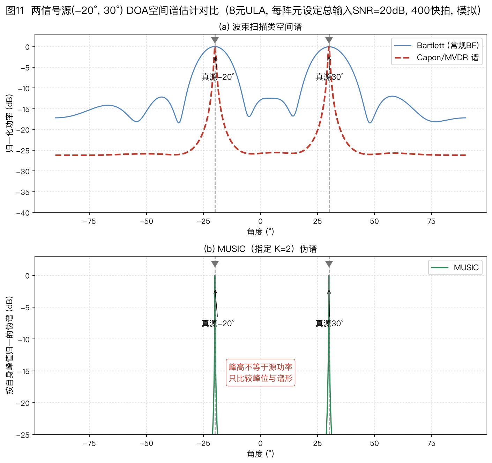
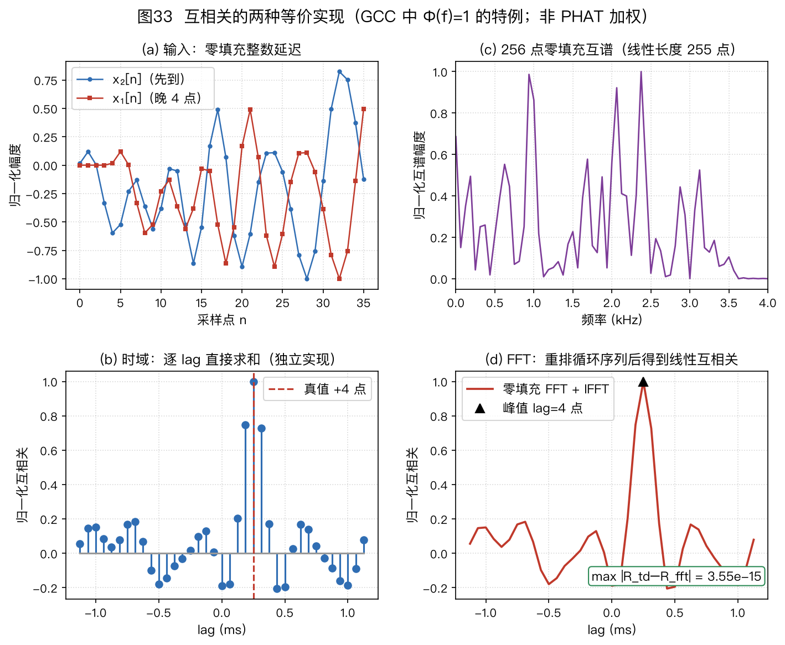
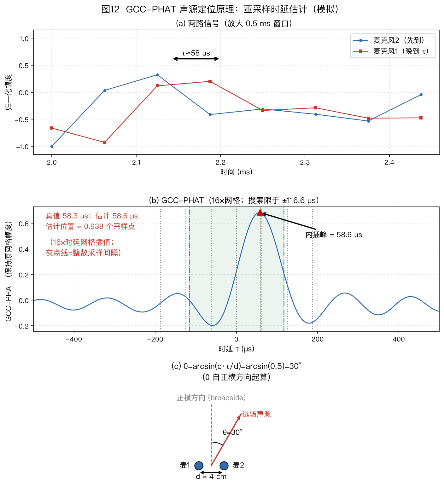
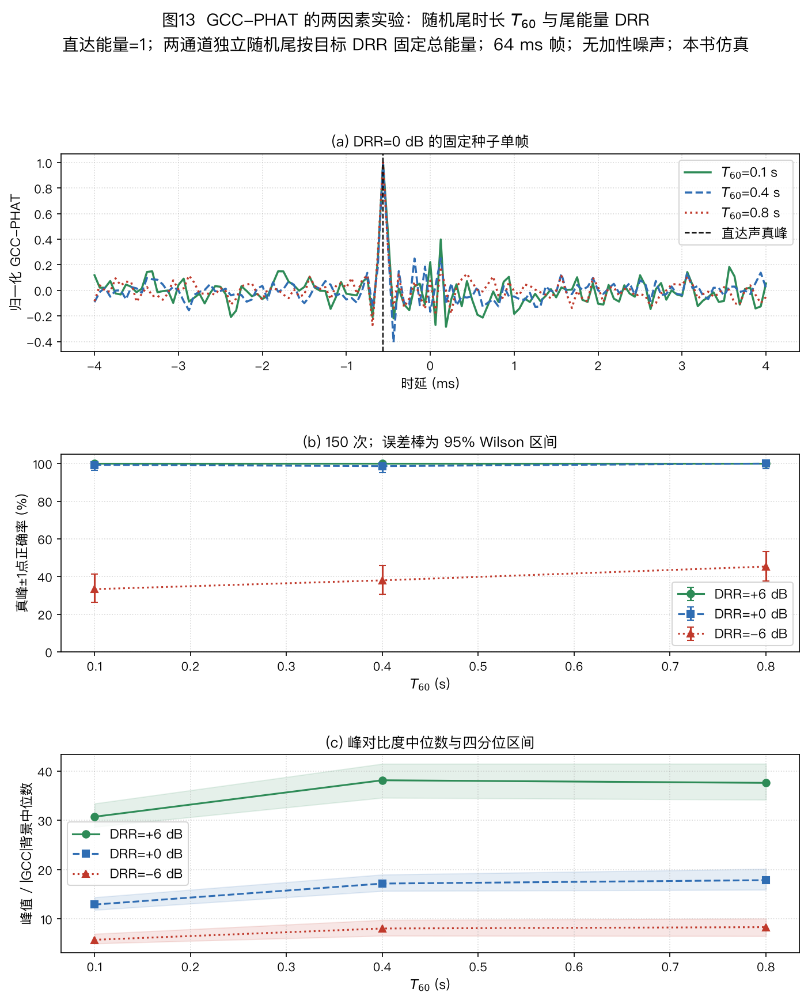
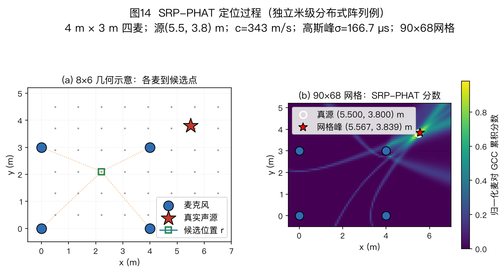
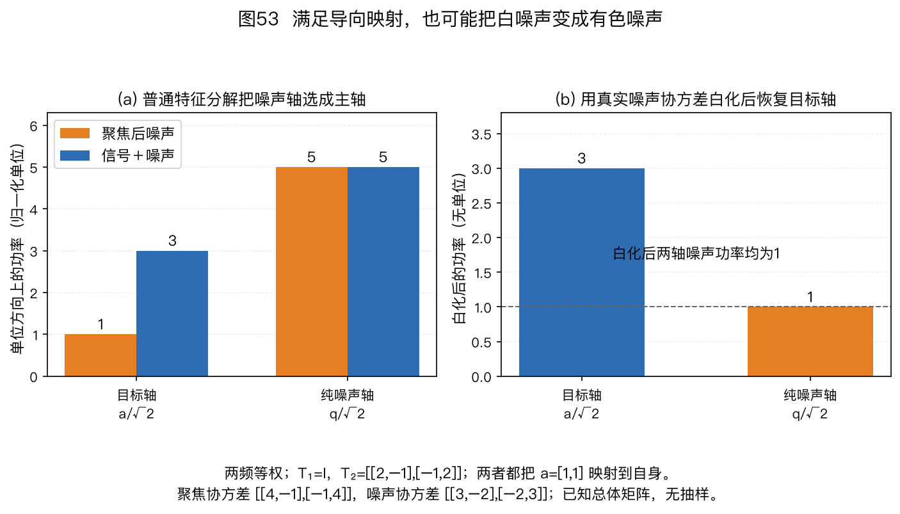
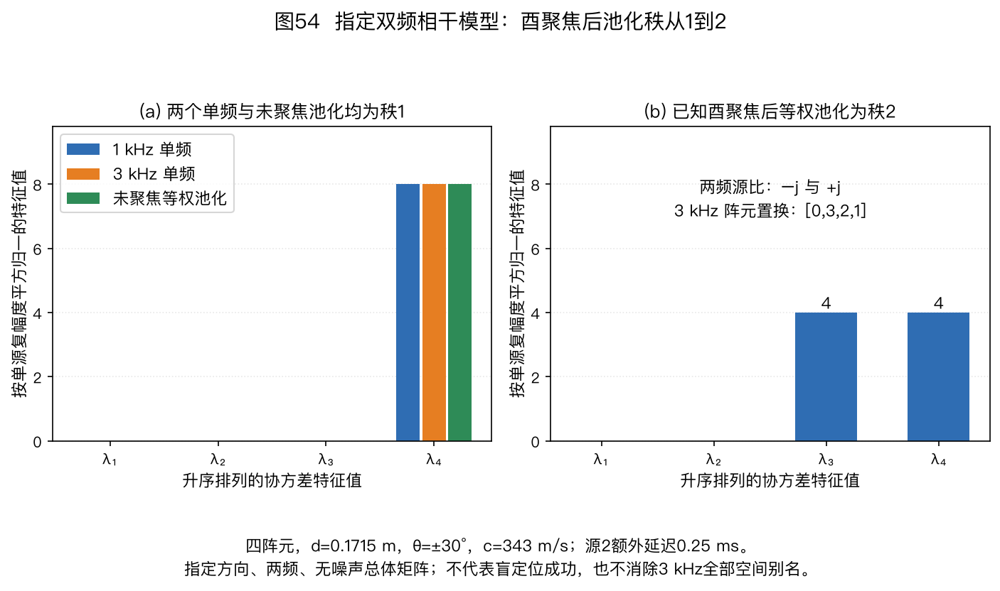

本页目录
⚠️ 本篇是教程正文第 4 章（正文共 11 章，另有附录 A/B），可独立阅读，前后篇见下方导航。
🏠 首页导读：🏠 导读与导航 ｜ 上一篇：第 3 章 · 阵列几何形态 ｜ 下一篇：第 5 章 · 波束形成
4. 声源定位（波达方向，Direction of Arrival，DOA）
本章把“方向”和“位置”分开：DOA 给出相对阵列的角度；位置还包括距离，通常需要球面传播模型或其他距离线索。先读双麦时差，再读多麦空间扫描和子空间方法。下面的缩写表供直接进入本章的读者查阅。
| 缩写 | 中文与英文全称 | 本章中的作用 |
|---|---|---|
| TDOA | 到达时间差，Time Difference of Arrival | 同一个声源到两麦的相对时延 |
| GCC / PHAT | 广义互相关，Generalized Cross-Correlation；相位变换，Phase Transform | 逐频加权互谱，再寻找时延峰 |
| SRP | 可控响应功率，Steered Response Power | 按候选几何联合多个麦对的响应 |
| ULA / SNR | 均匀线阵，Uniform Linear Array；信噪比，Signal-to-Noise Ratio | 阵列模型与信号相对噪声的功率口径 |
| MUSIC | 多重信号分类，Multiple Signal Classification | 检查导向矢量与噪声子空间的正交性 |
| MVDR | 最小方差无失真响应，Minimum Variance Distortionless Response | 保持候选方向增益为1，同时最小化输出功率 |
| DRR / RIR | 直达混响比，Direct-to-Reverberant Ratio；房间脉冲响应，Room Impulse Response | 分别描述直达/反射能量比和传播响应 |
| DFT / IDFT | 离散傅里叶变换，Discrete Fourier Transform；其逆变换，Inverse DFT | FFT（Fast Fourier Transform）与 IFFT 是快速计算它们的算法 |
| STFT | 短时傅里叶变换，Short-Time Fourier Transform | 将录音分成逐频点、逐帧的复数观测 |
矩阵的共轭转置记为 $^H$，普通转置记为 $^\top$；$\mathbf I$ 是单位矩阵。$M$ 为麦数、$K$ 为候选源数。涉及快拍、特征向量和矩阵分解时，可对照附录 A 的数学工具。
4.1 总览：四大类思路
声源定位算法
├── 两阶段法：先从一对或多对麦克风估计到达时差，再按几何关系解位置（§4.2、§4.4）
│ └── 例：GCC-PHAT 估时差，再用多麦对几何方程解算
├── 空间扫描：逐一检查候选方向或位置，取响应最大的点（§4.3、§4.5）
│ └── 例：SRP-PHAT、Bartlett、Capon
├── 子空间法：比较候选方向与观测数据中信号、噪声子空间的关系（§4.6）
│ └── 例：MUSIC、ESPRIT；需要检查源数与阵列条件
└── 稀疏与学习方法：利用少数活动方向或带方向标签的数据（§4.7）
└── 例：稀疏重构、学习式定位；需要检查先验或训练条件
图 11 在同一个两源仿真（−20°、30°）中比较 Bartlett、Capon 和 MUSIC。条件为 8 元半波长 ULA、每阵元总信号功率相对单阵元噪声功率的设定输入 SNR 20 dB、400 个快拍，两源相隔 50°；MUSIC 已指定真实源数 $K=2$。这个较容易的条件只展示三种谱形，不检验最小可分辨角度。
Bartlett 按标准空间谱计算。Capon 在样本协方差上使用相对对角加载 $\eta=10^{-6}$，即 $\hat{\mathbf R}+\eta\operatorname{tr}(\hat{\mathbf R})\mathbf I/M$。MUSIC 给出伪谱，峰高不是功率。
只有在源间隔、信噪比、快拍数、源数和阵列失配都明确时，才能用重复试验比较分辨成功率。

图示说明：比较三类方法的谱形，不比较图中的绝对峰高。Bartlett 的分辨率受阵列孔径限制；Capon 利用协方差逆矩阵抑制其他方向；MUSIC 依赖信号子空间与噪声子空间的正交性。谱峰个数也不能无条件当作源数：旁瓣、相干多径和有限快拍都可能产生假峰或合并真峰，源数估计要按下一节的方法独立完成。
4.1.1 源数估计：确定信号子空间维数
子空间类（MUSIC、ESPRIT）必须先确定源数 $K$。$K$ 定错后，信号子空间与噪声子空间的切分位置也会错。
MUSIC 还要满足 $K\lt M$，否则没有非零维噪声子空间可供正交检验。ESPRIT 的两个子阵也都必须至少有 $K$ 维，实际通常保留更多阵元以降低有限快拍误差。下面给出两种常用估计方法。
方法 1：特征值间隙（eigen-gap）。把固定频点 $f_k$ 的协方差矩阵 $\hat{\mathbf{R}}(f_k)$（读作“R 帽”，帽子表示用有限快拍估计出来的版本）的特征值从大到小排列。前 $K$ 个特征值包含信号与噪声功率，后面 $M-K$ 个在白噪声模型下接近 $\sigma^2$。
算例 4-4 的无噪声单源给出 $3,\,0,\,0$，因此 $K=1$。实际数据中，低信噪比或快拍不足会缩小相邻特征值之间的间隔；可比较相邻特征值的比值或差值，并把最大间隙所在位置作为候选分界。这种方法计算简单，但在低信噪比或快拍不足时不稳定。
方法 2：信息准则（AIC/MDL）。增加候选源数通常会改善数据拟合，同时也会增加模型复杂度。AIC（Akaike information criterion，赤池信息准则）和 MDL（minimum description length，最小描述长度）用不同的复杂度惩罚项平衡这两部分，并取准则值最小的候选 $K$。
Wax 与 Kailath 的1984 年原始会议论文，式(10)～(15)给出了复数观测、空间白噪声、独立快拍模型下的推导；1985 年期刊论文题为 Detection of signals by information theoretic criteria。两篇论文的题名和公式编号不能混用。两种准则都比较尾部特征值的几何均值与算术均值，但拟合项和惩罚项的系数不同；§4.9展开 MDL，E04-20定义 AIC，并用同一组输入比较两种选择。
实现时必须核对复/实数据、快拍数和惩罚项口径。低 SNR、快拍不足、彩色噪声或相干源导致的信号协方差降秩都会造成误判。
信噪比高、快拍充足时，可以先看特征间隙；需要自动选择 $K$ 时可用 MDL，并用特征值谱交叉检查。
相干源场景还存在一个实际循环：空间平滑要按候选源数选择子阵长度，而源数又要从平滑后的谱估计。可先给出源数上界 $K_{\max}$，对候选 $K$ 和子阵长度联合扫描，再检查结果对参数是否稳定。对 $M$ 元均匀线阵（Uniform Linear Array，ULA）做前向空间平滑时，若切成 $L$ 个长度为 $P=M-L+1$ 的重叠子阵，要分辨 $K$ 个完全相干源，至少需要 $L\ge K$ 且 $P>K$。这两个条件同时限制可分辨源数和剩余有效孔径。Shan、Wax 与 Kailath 的空间平滑分析。
子空间法需要源数，GCC-PHAT 不需要。下一节先从双通道时延估计讲起。
4.2 GCC-PHAT：“对齐两段录音，找最吻合的错位”
时延符号与时频两种计算
本章沿用 §2.1～§2.3：麦 1 在 $x=0$，麦 2 在 $+x$；正横为 0°，正角朝麦 2；$\vec u$ 从阵列指向声源，传播方向为 $-\vec u$；$\tau_{ij}=t_i-t_j$。
采用前向核 $e^{-\mathrm j2\pi ft}$ 时，
$$\tau_{m1}=-(\vec r_m-\vec r_1)^\top\vec u/c,$$
$$a_m=e^{-\mathrm j2\pi f\tau_{m1}}=e^{+\mathrm j2\pi f(\vec r_m-\vec r_1)^\top\vec u/c}。$$
因此正角双麦有 $\tau_{21}\lt 0、\tau_{12}>0$。
直觉：把第二路录音左右平移，平移到与第一路最像的那个错位量就是时间差。
时域定义。两路实值离散信号 $x_1(n)$、$x_2(n)$，定义滞后 $l$ 处的互相关值（$l$ 以采样点为单位，取整数，避免与秒单位时延混用）：
$$\begin{aligned} R[l]&=\sum_n x_1[n]x_2[n-l],\\ \hat\tau_{12}&=\frac{\arg\max_l R[l]}{f_s}\text{。} \end{aligned}\tag{4-1}$$
把 $x_2$ 往右挪 $l$ 格，和 $x_1$ 上下对齐，逐点相乘再求和。加总越大，这个错位下两路越像。$\arg\max$ 返回峰的位置，不是峰高。若输入为复数，应把第二项改为 $x_2^*[n-l]$。长度同为 $N$、遍历全部滞后的直接计算需要 $O(N^2)$ 次乘加；频域实现可把复杂度降到 $O(N\log N)$。
频域等价式（相关定理）：时域逐点算出的整条 $R(\tau)$，等于频域共轭相乘后再作逆变换——
$$R[l] = \mathrm{IFFT}\{X_1[k]X_2^*[k]\}[l]$$
连续时间形式写成积分，见下文的快速实现公式。
两边是同一个相关函数，只是计算路线不同。本文把 $\tau_{12}>0$ 定义为“信号到麦 1 比到麦 2 晚”，即 $x_1(t)=x_2(t-\tau_{12})$。在这个定义下，
ifft(X1·conj(X2))的峰位是 $+\tau_{12}$；若交换两路，峰位变成 $-\tau_{12}$。实现和论文若采用不同的信号次序或相关定义，符号也会随之改变。
频域实现：用一次 IFFT 计算整条相关曲线。两路信号为 $x_1,x_2$，$X_1(f)$、$X_2(f)$ 是它们在物理频率 $f$（单位 Hz）处的复数谱值，都是标量。离散实现若只用实信号单边谱，$0\le k\le\lfloor N/2\rfloor$ 时有 $f_k=kf_s/N$；完整 DFT 的 $k>N/2$ 应映射为 $(k-N)f_s/N$。不能把无量纲索引 $k$ 直接代入 $2\pi f\tau$，也不能把高半区误当作正频率。
运算顺序是先对 $X_2(f)$ 取共轭得到 $X_2^*(f)$，再与 $X_1(f)$ 逐频点相乘：
$$\begin{aligned} G_\Phi(f)&=\Phi(f)X_1(f)X_2^*(f),\\ R_{x_1x_2}(\tau)&=\int_{-\infty}^{\infty}G_\Phi(f)e^{\mathrm j2\pi f\tau}\,df,\\ \hat\tau_{12}&=\arg\max_\tau R_{x_1x_2}(\tau)\text{。} \end{aligned}\tag{4-2}$$
这里的 $\tau$ 以秒为单位；实信号的互谱及权重保持共轭对称时，积分结果为实数。下面的8点手算为简化旧有记号，仍用 $R(\tau)$ 表示整数滞后的离散相关，并逐处标明采样点单位。
代码先用快速傅里叶变换（Fast Fourier Transform，FFT）得到两路频谱，逐频点计算 Φ·X1·conj(X2)，再用逆变换 ifft 得到整条相关曲线。$\arg\max$ 最后从曲线上读峰位。
复杂度从 $O(N^2)$ 降到 $O(N\log N)$。实际加速比还取决于帧长、补零长度、FFT 库和硬件，不能只由渐近复杂度给出固定倍数。

图 33（a）给出两条各 128 点的信号，其中晚到的一路由前补零实现整数延迟；（b）按定义逐个时延直接求和；（c）用 256 点 FFT 计算频域乘积 $X_1X_2^*$；（d）用同一个 256 点长度的零填充 FFT 和 IFFT 得到线性互相关。两条 128 点序列满足线性相关所需的最短 FFT 长度为 $128+128-1=255$ 点，因此 256 点足够。时域与频域由独立代码计算，图中给出最大数值误差。该图对应 $\Phi(f)=1$ 的普通互相关，不包含 PHAT 加权。
线性相关与补零：FFT 算的是圆周相关（序列尾部会卷绕到开头），帧不够长时两端的 $R(\tau)$ 会被卷绕项污染；工程上补零到 $N\ge N_1+N_2-1$（两帧长度之和减一）再做 FFT。下文 8 点手算例因脉冲远离边缘、考察点无混叠，所以未补零也能得到相同结果；一般输入仍须补零。
这项有限长度等价针对未加权互谱 $X_1X_2^*$。PHAT 再除以互谱幅度后，逆变换一般不再具有原来长度的有限支撑；补零可以加密频率采样、减轻周期边界影响，但不能据此称为精确的有限长线性互相关。比较实现时须记录 FFT 长度、加权和保留的时延范围。图 33 的严格时域等价不应外推为任意 PHAT 权重下的同一有限求和式。
符号说明：这里的 $R(\tau)$ 是时延 $\tau$ 的标量互相关函数；后文 §4.5 起的 $\hat{\mathbf{R}}(f_k)$ 是频点 $f_k$ 上的 $M\times M$ 协方差矩阵，以黑体和估计符号相区别。
为什么相位里藏着时延：沿用“麦 1 晚到”为正的定义，$x_1(t)=x_2(t-\tau_0)$，因此 $X_1(f)=X_2(f)e^{-\mathrm{j}2\pi f\tau_0}$。于是
$$X_1(f)X_2^*(f) = |X_2(f)|^2\,e^{-\mathrm{j}2\pi f\tau_0}\text{，}$$
相位 $\angle\{X_1X_2^*\}=-2\pi f\tau_0$ 的斜率是 $-2\pi\tau_0$。例如 $\tau_0=58.3\,\mu$s 时，1 kHz 和 2 kHz 处的相位分别约为 $-0.366$ rad 和 $-0.733$ rad。逆变换在 $\tau=\tau_0$ 处乘上 $e^{\mathrm{j}2\pi f\tau_0}$，恰好抵消这条负斜率，各频点同相相加形成峰。
PHAT 把互谱除以其幅度，使每个保留频点只贡献单位幅度的相位项。理想单时延模型下，这样可以减少谱包络对相关峰形的展宽。
PHAT 不会修复混响或噪声造成的错误相位，还可能放大原本很弱、信噪比很低的频点。因此实现时通常在分母加 $\varepsilon$，并可配合频带筛选或可靠度加权。
8 点脉冲手算：时域与频域结果一致
下面用最简单的脉冲分别计算时域相关和频域等价式，核对峰值位置与数值。
设定：$N=8$，序列（$n=0\ldots7$）为
- $x_1=[0,0,3,0,0,0,0,0]$，3 在 $n=2$ 处，即 $x_1$ 比 $x_2$ 晚到 2 拍；
- $x_2=[2,0,0,0,0,0,0,0]$，2 在 $n=0$ 处。
线性互相关定义为 $R(\tau)=\sum_n x_1(n)x_2(n-\tau)$，越界按 0 处理。考察 $\tau=0/1/2$ 时，下标 $2-\tau=2/1/0$ 都落在序列范围内，因此线性相关与 8 点圆周相关在这三点没有回绕混叠、数值相等。一般情况仍要补零到 $N\ge N_1+N_2-1$，见上文补零提醒。
时域计算：逐 $\tau$ 算 $R(0)$、$R(1)$、$R(2)$，取最大值。$x_1$ 只在 $n=2$ 处非零（值为 3），加总只剩一项：$R(\tau)=3\cdot x_2(2-\tau)$。
| 试探滞后 $\tau$／采样点 | 读取的 $x_2$ 下标 | 代入 | 相关值 |
|---|---|---|---|
| 0 | 2 | $3\times0$ | 0 |
| 1 | 1 | $3\times0$ | 0 |
| 2 | 0 | $3\times2$ | 6 |
最大值出现在 $\hat\tau=+2$，表示 $x_1$ 晚到 2 个采样点，与设定一致。
频域手算：DFT 共轭乘 + IDFT。记 $W=e^{-\mathrm{j}2\pi/8}$，DFT 定义 $X[k]=\sum_n x[n]W^{kn}$。$x_2$ 只有 $n=0$ 项，所以 $X_2[k]=2$，$k=0\ldots7$ 全是 2。
$x_1$ 只有 $n=2$ 项，因此 $X_1[k]=3W^{2k}=3e^{-\mathrm{j}\pi k/2}$。逐个写出：
$$X_1=[3,-3\mathrm{j},-3,3\mathrm{j},3,-3\mathrm{j},-3,3\mathrm{j}],$$
$$X_2^*=[2,2,2,2,2,2,2,2],$$
$$\begin{aligned} G[k]&=X_1X_2^*\\ &=[6,-6\mathrm j,-6,6\mathrm j,6,-6\mathrm j,-6,6\mathrm j]\text{。} \end{aligned}$$
IDFT 为 $r[\tau]=\frac{1}{8}\sum_k G[k]e^{+\mathrm{j}2\pi k\tau/8}$。分别计算三个候选点：
- $\tau=0$ 时，$\frac{1}{8}(6-6\mathrm{j}-6+6\mathrm{j}+6-6\mathrm{j}-6+6\mathrm{j})$ 的实部和虚部各自相消，得 $\mathbf{r[0]=0}=R(0)$
- $\tau=1$ 时，$G[k]\cdot e^{\mathrm{j}2\pi k/8}=6(e^{-\mathrm{j}\pi/4})^k$。$k=0\ldots7$ 构成公比不等于 1 的完整周期几何级数，配对相消，得 $\mathbf{r[1]=0}=R(1)$；
- $\tau=2$ 时，$G[k]\cdot e^{\mathrm{j}2\pi k\cdot2/8}=6e^{-\mathrm{j}\pi k/2}\cdot e^{+\mathrm{j}\pi k/2}=6$。8 项全是 6，得 $r[2]=48/8=\mathbf{6}=R(2)$。
在 $\tau=2$ 处，各频点的相位因子精确抵消，8 个实数 6 同相相加；其他两个候选时延的正负项相消。
时域与频域结果对照：$\tau=0$ 处时域和频域均为 0；$\tau=1$ 处均为 0；$\tau=2$ 处均为最大值 6，因此两种计算都得到 $\hat\tau=2$。
本例的 PHAT 结果：$|G[k]|=6$ 在所有频点相等，所以归一化不改变相对频谱。PHAT 谱 $\Psi[k]=G[k]/|G[k]|=[1,-\mathrm{j},-1,\mathrm{j},1,-\mathrm{j},-1,\mathrm{j}]$，IDFT 在 $\tau=2$ 处为 1，其余位置为 0。理想单时延、无噪条件下峰位不变；实际数据中，PHAT 改变各频点权重，峰位仍会受噪声和混响影响。
频谱加权、弱频点与通道极性
核心是加权函数 $\Phi(f)$ 的选择：
| 加权 | 公式 | 特点 |
|---|---|---|
| 互相关 CC | $\Phi=1$ | 不作频谱加权，峰形受源的自相关与噪声统计影响；是否优于 PHAT 取决于信号带宽与噪声条件 |
| Roth | $1/(\hat G_{11}+\varepsilon)$ | 用通道 1 的平滑自功率谱对互谱加权；结果与通道次序有关，谱估计很小时需要 $\varepsilon$ 避免过度放大 |
| SCOT（Smoothed Coherence Transform，平滑相干变换） | $1/\sqrt{\hat{G}_{11}\hat{G}_{22}}$ | 用两路自功率谱估计的几何平均对互谱作对称归一化；$\hat G_{11}$、$\hat G_{22}$ 可由时间平均、频率平滑或 Welch 方法估计，必须记录具体口径 |
| PHAT（相位变换） | $1/(|X_1X_2^*|+\varepsilon)$ | 归一化互谱幅度、保留相位；源谱包络使普通相关峰展宽时可能得到更尖的峰，本章平坦谱脉冲例中峰形不变；不会消除错误相位，低信噪比频点需筛选或再加权 |
| ML（Maximum Likelihood，最大似然） | 由信号与噪声统计模型决定 | 只在指定概率模型与参数假设下谈最优；不能用一条通用权重概括 |
单帧直接代入时，$\sqrt{|X_1|^2|X_2|^2}=|X_1X_2^*|$，SCOT 与 PHAT 的分母数值相同。使用统计谱估计后，SCOT 的分母来自两路自谱，而 PHAT 的分母来自互谱幅度；两者的偏差和方差取决于平均窗、频带、信噪比及谱估计方法，不能笼统断言哪一个始终更稳。
教学实现 gcc_phat 把 epsilon 解释为相对本麦对互谱最大幅值的无量纲下限。令 $G=X_1X_2^*$、$g_{\max}=\max_k|G[k]|$，实现计算 $G[k]/\max(|G[k]|,\varepsilon g_{\max})$，与表中“分母加常数”并不相同。前者只衰减低于下限的频点，后者会改变所有非零频点的模；直接丢弃弱频点又是第三种操作。E04-14 逐项比较三者。
代码先缩放输入以避免大幅度有限样本的中间乘法溢出。对任一路施加共同正增益不改变相位；若只把一路乘以 −1，互谱与相关曲线都反号，原来的正峰变成负谷。代码寻找实相关的最大值，没有改成绝对值峰，因此不能宣称任意非零增益都不改变估计。反相也可能来自通道极性接反，应先检查采集和标定。
全零麦对没有可估时差，函数会报错；这不是返回 $0^\circ$ 或“静音方向”。门限、麦序与实际频带都必须随实验记录，不能把数值保护误认为噪声下的方向置信度。
从时延峰到角度：插值与图 12 的模型
在本章双麦角度约定与选定的可见半平面内，由时延换算角度：
$$\hat\theta=\arcsin\!\left(\frac{c\hat\tau_{12}}d\right)\text{。}\tag{4-3}$$
先检查 $|c\hat\tau_{12}/d|\le1$：轻微超限若能由已验证的数值舍入界解释，可限幅后计算；明显超限说明该峰不满足双麦平面波几何，应判为野值或低置信度，不能一律吸附到端射方向。
这个换算怎么来的：几何推导见 §2.1“时差的几何来源”。平面波以角 $\theta$ 斜入射，路程差 $\Delta=d\sin\theta$（图12(c)），因此 $\hat\tau=d\sin\theta/c$；$\theta$ 从正横方向起算。若论文把角度定义为相对麦克风连线，则同一关系写成 $\hat\tau=d\cos\theta/c$。
双麦只给一个标量时延。三维中相容方向构成以连线为轴的锥面；增加不共线的基线可以增加方向约束，但三只不共线、仍共面的麦克风还保留上下镜像。完整三维方向的唯一性要检查基线的空间秩、可见半空间等条件，见§3.1 的几何可辨识性。
两个实用细节：
- 16 kHz 下一个采样点为 $62.5\,\mu\mathrm{s}$。对 4 cm 间距，从正横方向的 0 延迟跳到 1 个采样点对应 $\arcsin(343\times62.5\,\mu\mathrm{s}/0.04)\approx32.4°$，而且越靠近端射方向，同样的时延误差造成的角度误差越大。实际系统要对相关峰插值或拟合相位斜率，得到亚采样时延。
- PHAT 提高了相位的相对权重，因此麦克风相位响应不一致会直接造成定位偏差（见 §10.2）。

图 12 的声源由4096点周期模型产生，频带为300～6000 Hz；用频域相位实现分数采样时延后，每路加标准差0.05的独立噪声。相关计算的FFT长度为8192，时延网格插值16倍。它是周期带限随机信号的数学示例，截取两路波形不会把它变成真实录音或因果有限长传播实验。
图示说明：图 12（a）的两路波形设定为 $d=4$ cm、$\theta=30°$，对应 $\tau_0\approx58.3\,\mu\mathrm{s}$，即 16 kHz 下约 0.933 个采样点。
图 12（b）将两路固定噪声样例做 16 倍时延网格插值后计算 GCC-PHAT，峰值落在 $58.59375\,\mu\mathrm{s}$，即 0.9375 个原始采样点；虚线标出 $58.3\,\mu\mathrm{s}$ 真值。图 12（c）把时差乘声速得到路程差，再除以间距得到角度正弦，$\theta$ 从正横起算，与 §2.1 约定一致。
这个固定样例的估计接近真值，但单个样例不能代表误差分布。
算例：GCC-PHAT 完整数字链（$d=4$ cm、$\theta=30°$）：按 §2.1 几何关系，真值时延 $\tau_0=d\sin\theta/c=0.04\times0.5/343\approx58.3\,\mu\mathrm{s}$；16 kHz 下 1 个采样点 $=62.5\,\mu\mathrm{s}$，故真值在 $58.3/62.5\approx0.933$ 格。直接取整读峰只能得到 1 格，对应 $\arcsin(343\times62.5\,\mu\mathrm{s}/0.04)\approx32.4°$。
图 12 的脚本对互谱补零，把旧偶数奈奎斯特频点拆到正负频率，并补偿逆变换的长度尺度；E04-12说明为什么两步都需要。这里使用周期三角插值，不是三点抛物线拟合。它把 GCC-PHAT 的时延网格细化到 $62.5/16\approx3.91\,\mu\mathrm{s}$，再在相关序列上取最大值。固定随机种子的噪声样例得到 $58.59375\,\mu\mathrm{s}$，即 $0.9375$ 格；换算角度为
$$\begin{aligned} \hat\theta&=\arcsin\!\left(\frac{343\times58.59375\times10^{-6}}{0.04}\right)\\ &\approx30.16°\text{。} \end{aligned}$$
该估计比 30° 真值高约 0.16°。这个固定样例说明时延网格插值能避免只在整数采样点上搜索；实际偏差仍取决于信号带宽、观测长度、噪声、混响和插值方法，需要在多次试验或实测数据上统计。
优缺点：频域实现的主导运算量为 $O(N\log N)$；是否满足实时要求仍取决于窗长、帧移、麦对数量、FFT 库、硬件、线程、缓存和计时范围，不能由复杂度记号直接推出。但一对麦每帧通常只读一个主峰，多源时会出现多个峰且跨麦对难以配对。强混响或低信噪比还会使峰展宽或选错。GCC 加权家族的定义、统计模型和最大似然权重见 Knapp 与 Carter, IEEE TASSP, 1976。
混响实验：同时说明衰减时间和直达混响比
反射会把多个延迟副本叠到直达声上，可能使相关背景抬高、主峰展宽并出现旁峰。$T_{60}$ 不能单独推出定位趋势：合成图的变化方向还取决于反射尾的归一化、空间相关性和信号模型。
图 13 把两个因素分开控制：每路冲激响应的直达能量固定为 1，随机指数尾分别归一到 DRR=+6、0、−6 dB；尾长取 $1.1T_{60}$，考察 $T_{60}=0.1、0.4、0.8$ s。采样率为 16 kHz，帧长约 64 ms，无额外传感器噪声，每个 $T_{60}\times\mathrm{DRR}$ 条件做 150 次固定种子的试验。
互谱按 $X_1X_2^*$ 定义。第二路比第一路晚 9 点时，$\tau_{12}=-9$ 点，相关曲线的真峰也在 −9 点。估计峰落在真值 ±1 点内算正确。
正确率给出 Wilson 95% 区间；峰值对比度采用 $\max g/\operatorname{median}|g|$，汇报中位数和四分位区间。脚本在分母另加固定小量 $10^{-12}$ 防止数值除零；这不使零背景时的比值成为有效置信度。
每个条件的成功次数如下，分母均为150；其余次数是峰位超出容差，本次没有算法异常。
| DRR | $T_{60}=0.1$ s | 0.4 s | 0.8 s |
|---|---|---|---|
| +6 dB | 150 | 150 | 150 |
| 0 dB | 149 | 148 | 150 |
| −6 dB | 50 | 57 | 68 |
每个条件按第 $k=0,\ldots,149$ 次使用种子 $2000+17k$；源信号使用该种子加1000的独立生成器。因此各条件同一次使用相同的带限源。固定 $T_{60}$、改变DRR时，随机尾与取帧位置也共享；改变 $T_{60}$ 会改变随机尾长度，随后第二通道随机数和取帧位置不再逐项相同，不能声称全部条件完全配对。每个条件内部的150次重新抽样，九个条件之间并非独立数据集。逐次统计记录保留全部1350次的正确标志、峰值对比度、种子、计数和Wilson区间配置。
这个试验把每条随机尾的总能量固定在目标DRR，为两通道独立生成随机尾，并对完整源序列先卷积、后截取1024点观测帧。观测帧短于反射尾，不等于仅保留反射尾的前64 ms；较早的源样本仍通过长响应贡献当前观测。因此不能用“尾变长、短帧内能量必然下降”单独解释表中变化。频谱形状、启动边界、取帧位置及反射统计共同变化；表格没有隔离各项因果，也不能推出混响更长有利于定位。
独立通道随机尾没有模拟真实晚期混响随麦距和频率变化的空间相干性。这些随机尾不是几何房间的镜像法 RIR，也不是实测数据。图 13 只比较该说明模型内两个因素对峰统计量的影响，不能外推绝对性能。

图示说明：图13(a)在 DRR=0 dB 下比较三个 $T_{60}$ 的固定种子单帧，每条 GCC-PHAT 曲线分别按自身最大绝对值归一化，曲线间峰高不可直接比较；(b)分别画出三种 DRR 下的正确率和 Wilson 95% 区间；(c)画峰值对比度的中位数和四分位区间。读图时应同时指定 $T_{60}$ 与 DRR：前者控制尾的衰减时长，后者控制尾相对直达声的总能量。
双麦 GCC 只提供一个麦对时延。三维定位或多源场景通常需要 §4.3 的 SRP-PHAT，联合多个麦对进行空间扫描。
4.3 SRP-PHAT：跨麦对累积空间响应
对空间中每个候选位置 $\vec{r}$：由几何算出“若声源在此，各麦对时延应是多少” $\tau_{ij}(\vec{r})$，再查 GCC-PHAT 值并累加：
$$\hat{\vec{p}} = \arg\max_{\vec{r}} \sum_{i\lt j} R^{PHAT}_{x_ix_j}\big(\tau_{ij}(\vec{r})\big)\text{。}\tag{4-4}$$
其中 $\tau_{ij}(\vec{r})=\big(\|\vec{r}_i-\vec{r}\|-\|\vec{r}_j-\vec{r}\|\big)/c$——候选点到麦 $i$ 的距离减去到麦 $j$ 的距离，再除以声速；给定一个非退化的距离差，候选点在平面上的轨迹是下文 §4.4 的双曲线（等时差线）。
几何预测与离散实现的对应
候选位置正确时，各麦对会在各自预测 TDOA 附近取得较大的 GCC-PHAT 值，累积得分随之升高；候选位置错误时，各麦对的取值通常无法同时达到峰值。扫描可扩展到三维网格，也可从空间响应图中寻找多个局部峰。多个峰是否对应真实声源，仍需结合最小峰距、置信度和跨帧一致性判断。
SRP-PHAT 使用每个麦对的整条相关曲线，在候选位置所预测的时延处取值；它不要求先为每个麦对挑出一个峰，再把这些峰送入几何解算。后者是 §4.4 的两阶段路线。反射或多源造成麦对相关曲线多峰时，两条路线因此会保留不同的信息。
教学 srp_phat 是远场方位扫描接口，按已给定的非负频点直接求和，没有先生成一条完整 irfft 相关序列再插值查表。记 $G_{ij}(k,\ell)=X_i(k,\ell)X_j^*(k,\ell)$，$B=M(M-1)/2$ 为全部麦对数，$F$ 为所给频点数，$L$ 为帧数。每对的相对门限先产生
$$\begin{aligned} Q&=\begin{cases}G/|G|,&|G|>\varepsilon g_{ij},\\0,&\text{其余频点帧},\end{cases}\\ g_{ij}&=\max_{k,\ell}|G_{ij}(k,\ell)|,\\ \overline Q_{ij}(k)&=\frac1L\sum_{\ell=1}^L Q_{ij}(k,\ell),\\ v_{ij}(k,\theta)&=e^{j2\pi f_k\tau_{ij}(\theta)},\\ C_{ij}(\theta)&=\frac1F\sum_{k=1}^F\Re\{\overline Q_{ij}v_{ij}\},\\ S(\theta)&=\frac1B\sum_{i\lt j}C_{ij}(\theta)\text{。} \end{aligned}\tag{4-5}$$
$v_{ij}$ 是候选时延的补偿相位，$C_{ij}$ 是单个麦对的频率平均得分；$C_{ij}$ 的求和行省略了 $\overline Q_{ij}(k)$ 和 $v_{ij}(k,\theta)$ 的括号参数，二者仍随被求和频点 $k$ 变化。分段定义为简洁省略了 $Q、G$ 的 $(i,j,k,\ell)$ 下标。它先逐帧PHAT，再沿时间平均，最后对所给频点等权求和。先平均互谱再PHAT一般不同，E04-14给出反例。这里没有给内部正频点乘2，也没有补入负频率；因此其尺度与按实信号完整双边逆变换计算的相关值不同。零能量麦对贡献0但仍计入 $B$，被剔除频点帧仍计入 $F,L$；不能把分母误写成“有效项数量”。
如果输入全零或只有不能提供方向信息的直流分量，接口便明确报错。其他有声输入仍可能在全部候选处得到平坦得分；函数输出的是响应数组，调用者须检查峰是否可区分，不能把 argmax 的第一个方向当作可靠定位。E04-13从两麦、两频点直接复算该尺度；近场式(4-4)的距离网格则属于另一种几何模型。
SRP-PHAT 把 PHAT 加权引入可控响应功率扫描的原始系统论述见 DiBiase, Brown University 博士论文, 2000。式(4-4)采用麦对 GCC-PHAT 在预测时延处求和的实现形式；搜索区域、网格间距、频带和插值共同决定响应图的离散化与峰形。
算例 4-1：SRP-PHAT 的六麦对累积
下面用两个候选点计算预测时延，再比较六个麦对的累积得分。
设定：平面 4 麦矩形阵，坐标 $\vec{r}_1=(0,0)$、$\vec{r}_2=(4\,\text{cm},0)$、$\vec{r}_3=(0,3\,\text{cm})$、$\vec{r}_4=(4\,\text{cm},3\,\text{cm})$；真实声源在 $\vec{p}=(2\,\text{m},\,1.5\,\text{m})$；声速 $c=343$ m/s，采样率 $f_s=16$ kHz（1 个采样点 $=1/f_s=62.5\,\mu\mathrm{s}$，折合成路程 $c/f_s=343/16000=0.0214375$ m——后文所有“采样点”都靠这个数换算）。
第 1 步：算出几何真值。声源在 $\vec{p}$，各麦到声源的距离由勾股定理（$d_i=\|\vec{p}-\vec{r}_i\|$）：
| 麦 $i$ | 算式 | $d_i$ (m) |
|---|---|---|
| 1 | $\sqrt{2^2+1.5^2}=\sqrt{6.25}$ | $2.500000$ |
| 2 | $\sqrt{1.96^2+1.5^2}=\sqrt{6.0916}$ | $2.468117$ |
| 3 | $\sqrt{2^2+1.47^2}=\sqrt{6.1609}$ | $2.482116$ |
| 4 | $\sqrt{1.96^2+1.47^2}=\sqrt{6.0025}$ | $2.450000$ |
麦4的距离可直接核对：$2.45^2=6.0025$。
麦对 $(i,j)$ 的真实 TDOA（到达时间差）折成采样点：
$$\tau_{ij}=\frac{d_i-d_j}{c}\,f_s=\frac{d_i-d_j}{0.0214375}\text{。}$$
这里的 $\tau_{ij}$ 以采样点为单位。
例如麦对 $(1,2)$：$\tau_{12}=(2.500000-2.468117)/0.0214375=0.031883/0.0214375\approx+1.4873$ 个采样点——物理含义：声波到麦 1 的路程比到麦 2 长 3.19 cm，所以麦 2 早到约 1.49 个采样点。本例没有生成麦克风波形，也没有运行 GCC-PHAT；这个数是由已知声源位置算出的时差真值，不是实测峰位置。全部 6 对的结果见下表“真值”列。
第 2 步：计算候选点的几何预测。假设声源在候选点 $\vec{r}$，预测每对麦的时延 $\tau_{ij}(\vec{r})=\big(\|\vec{r}_i-\vec{r}\|-\|\vec{r}_j-\vec{r}\|\big)f_s/c$，再按第 4 步规定的理想峰模型计算对应分数。实际处理录音时，这一步才读取观测得到的 GCC 曲线。
- 候选点 A $=(2,\,1.5)$（就是真源）：距离与第 1 步完全相同，预测的 $\tau_{ij}$ 与真值逐对相等；
- 候选点 B $=(0.5,\,0.5)$（离阵列很近的错误点）：$d_1=\sqrt{0.5^2+0.5^2}=0.707107$、$d_2=\sqrt{0.46^2+0.5^2}=0.679412$、$d_3=\sqrt{0.5^2+0.47^2}=0.686222$、$d_4=\sqrt{0.46^2+0.47^2}=0.657647$ m。
第 3 步：对比表（单位均为采样点；“错位” = 候选点预测值 − 真值）：
| 麦对 $(i,j)$ | 真值 = A 的预测 | B 的预测 | B 的错位 |
|---|---|---|---|
| $(1,2)$ | $+1.4873$ | $+1.2919$ | $-0.1954$ |
| $(1,3)$ | $+0.8342$ | $+0.9742$ | $+0.1400$ |
| $(1,4)$ | $+2.3324$ | $+2.3071$ | $-0.0252$ |
| $(2,3)$ | $-0.6530$ | $-0.3177$ | $+0.3354$ |
| $(2,4)$ | $+0.8451$ | $+1.0152$ | $+0.1701$ |
| $(3,4)$ | $+1.4981$ | $+1.3329$ | $-0.1652$ |
第 4 步：由时延偏差计算得分。为便于手算，这里用理想全带、无窗截断条件下的 sinc 峰模型：真实时延处取值 1，偏离 $\Delta\tau$ 个采样点后取 $\sin(\pi\Delta\tau)/(\pi\Delta\tau)$。实际 GCC 峰形还受带宽、窗函数、补零和混响影响，因此该模型只用于说明累积过程。
- 候选点 A：6 对麦的预测时延都等于真值，每对贡献 1，SRP 得分 $=6\times1=\mathbf{6.0000}$；
- 候选点 B：6 对的贡献分别为 $0.9384$、$0.9681$、$0.9990$、$0.8250$、$0.9531$、$0.9557$，合计 $\mathbf{5.6392}$。显示项分别舍入，总分用未舍入值求和。各麦对的时延偏差不同，累积得分低于 A；
- 镜像方向候选点 $(-1,\,1.5)$ 的六对贡献约为 $0.12$、$0.83$、$0.10$、$0.05$、$0.86$、$0.12$，合计约 $2.08$。其中多组预测时延已落到 sinc 主峰之外。
结果解释：候选点 B 虽然与真源相距较远，得分仍接近峰值，说明小孔径阵列的空间响应峰可能较宽。错位量以采样点计时，16 kHz 下 1 个采样点对应约 2.14 cm 的传播距离，因此实际系统常用亚采样插值（§4.2 细节①）。网格间隔、插值方式和 GCC 峰宽都会影响最终定位精度。
本手算采用 sinc 峰便于逐项计算；图14采用高斯 GCC 峰便于显示连续的等时差亮带。两者都在演示式(4-4)的麦对累积过程，数值不能相互代入。

图示说明：图 14 是与前述厘米级手算独立的米级分布式阵列例。四麦坐标为 $(0,0)$、$(4,0)$、$(0,3)$、$(4,3)$ m，真实声源为 $(5.5,3.8)$ m，声速取 343 m/s。
图 14（a）的 $8\times6$ 个灰点只是帮助看懂候选位置的稀疏示意，不参与右图的数值扫描；图 14（b）实际在 $x\in[-0.5,7.0]$ m、$y\in[-0.5,5.2]$ m 的 $90\times68$ 网格上扫描。每个麦对的理想高斯 GCC 峰标准差取 $1/6000$ s $\approx166.7\,\mu$s。亮带对应单个麦对的近似等时差轨迹，多条亮带在真实声源附近相交。
色标是六个麦对 GCC 取值的平均数，不是实测声功率。该网格的最大分数点为 $(5.56741573,3.83880597)$ m，与真源相距约0.07779 m；图中将真源与格点峰分开标记。它是给定得分函数在有限网格上的最大点，不保证是欧氏距离最近的格点。E04-13比较这两个选择目标。峰宽还取决于设定的GCC峰宽和网格间隔。
计算口径：全网格计算量约随 $N_{\mathrm{grid}}M(M-1)/2$ 增长。网格间距不是定位误差的下限：真值恰好在格点上时，理想量化误差可以为零。对于覆盖真值的一维等间距网格，若总能选中最近格点，间距 $\Delta$ 对应的绝对量化误差至多为 $\Delta/2$；这只是最近格点量化的界，不是有噪 SRP 估计误差的保证。
实际误差还受孔径、混响、信噪比、标定和插值影响。工程上常先粗扫，再只在主峰邻域细扫；节省多少计算量取决于两级网格范围，不能脱离配置给出固定倍数。E04-10 给出格点误差为零、四分之一步长和半步长的对照。
SRP 的计算量随网格点数和麦对数增加。若已获得可靠且已配对的 TDOA，也可以采用 §4.4 的几何解算，直接估计位置坐标。
4.4 两阶段法的几何解算
从时延到几何：一对麦克风测得时延差 $\tau_{ij}$，意味着声源到两麦的距离差为 $c\tau_{ij}$。绝对距离差严格介于 0 与麦距之间时，平面上满足这个有符号差值的轨迹是双曲线的一支，三维中是双曲面的一叶；若距离差为 0，则退化为两麦的垂直平分线或平面；若绝对距离差达到麦距，则退化为沿两麦连线向外的射线。图14(b)用理想化高斯 GCC 峰给这些等时差轨迹赋予有限宽度，再累加六个麦对的分数；多条亮带在声源附近相交。
以麦 1 为参考，各麦对的 TDOA 构成方程组：
$$\begin{aligned} d_i(\vec p)&=\|\vec p-\vec r_i\|,\\ d_i(\vec p)-d_1(\vec p)&=c\tau_{i1},\\ i&=2,\ldots,M\text{。} \end{aligned}\tag{4-6}$$
- $\vec{p}$：待求声源位置，远场只需方向；
- $\vec{r}_i$：第 $i$ 个麦的坐标，已知且依赖标定；
- 方程共 $M-1$ 个。对一般近场非线性方程，二维至少需要 3 只不共线麦、三维至少需要 4 只不共面麦，且某些几何仍可能有多个候选解。方程数超过位置维数后可用最小二乘吸收测量误差；
- 下面的 Chan 线性化还引入参考距离这一附加未知量，因此其第一阶段无正则最小二乘在二维至少需要 4 只麦、三维至少需要 5 只麦，并要求线性方程组满列秩。
算例 4-2：TDOA 几何解算数值例——两个时延怎么变成一个方向
§4.4 给出了方程组 $\|\vec{p}-\vec{r}_i\|-\|\vec{p}-\vec{r}_1\|=c\tau_{i1}$。远场条件下它退化为非常简单的几何：每对麦给出方向的一个“方向余弦”分量。用具体数字走一遍。
设定：3麦均在 $z=0$ 平面，直角布置的平面坐标为 $\vec r_1=(0,0)$（参考麦）、$\vec r_2=(4\,\mathrm{cm},0)$、$\vec r_3=(0,4\,\mathrm{cm})$。测得 $\tau_{21}=+0.0583$ ms、$\tau_{31}=+0.0825$ ms；$\tau_{i1}$ 是到麦 $i$ 的路程减去到麦1的路程，再除以声速。求三维方向，并指出平面阵保留的歧义。
第 1 步：时延折成路程差。
$$\begin{aligned} c\tau_{21}&=343\times0.0583\times10^{-3}\ \text{m}\\ &=0.0199969\ \text{m}\approx2.00\ \text{cm}\text{，} \end{aligned}$$
$$\begin{aligned} c\tau_{31}&=343\times0.0825\times10^{-3}\ \text{m}\\ &=0.0282975\ \text{m}\approx2.83\ \text{cm}\text{。} \end{aligned}$$
物理读法：声波到麦 2 比到麦 1 多走约 2.00 cm，到麦 3 比到麦 1 多走约 2.83 cm。
第 2 步：直接求带符号的方向余弦。$\vec u$ 指向声源，而传播方向相反。远场下 $c\tau_{21}=-du_x$、$c\tau_{31}=-du_y$，因此
$$\begin{aligned} u_x&=-\frac{0.0199969}{0.04}=-0.4999225,\\ u_y&=-\frac{0.0282975}{0.04}=-0.7074375\text{。} \end{aligned}$$
两个分量都为负，表示声源在 $-x、-y$ 一侧。这里的分量是三维单位向量的方向余弦；不能分别对其绝对值取反正弦，再把得到的两个角当成同一个方位角。
第 3 步：区分题给精度与理想设计。若严格使用上述四舍五入后的时延，上半球解的 $u_z=\sqrt{1-u_x^2-u_y^2}\approx0.499610$，方位角约 −144.752425°，俯仰角约29.974170°。下面为便于手算，改用生成题给数字的理想方向 $u_x=-0.5、u_y=-\sqrt2/2$；它对应的精确时延为0.058309 ms和0.082461 ms，按三位有效数字舍入后与题给值一致。后续理想算例不能被解释为从有限精度观测恢复了无限精度真值。
第 4 步：一致性检查与第三个分量。方向余弦必须满足 $u_x^2+u_y^2+u_z^2=1$。本例 $u_x^2+u_y^2=0.25+0.5=0.75\le1$，因此存在实数的第三个分量：
$$u_z=\pm\sqrt{1-0.75}=\pm0.5$$
若算得 $u_x^2+u_y^2>1$，这些时延就与同一个单位方向向量不相容。测量噪声、麦克风位置或声速失配，以及误选相关峰都可能造成这种情况。应先检查输入和残差，再按明确的噪声模型估计，不能把负数直接送入开平方。
$\pm$ 号无法由数据决定：三只麦共面，平面上下两侧镜像的方向产生完全相同的 TDOA——这正是 §3.1 所说平面阵“上下镜像模糊”的具体实例。取上半球 $u_z=+0.5$。
第 5 步：合成方位角与俯仰角。本书从 $+y$ 正横方向起算，朝 $+x$ 为正，因此三维单位方向写成
$$\vec u=\begin{bmatrix} \cos\phi_{\mathrm{el}}\sin\theta\\ \cos\phi_{\mathrm{el}}\cos\theta\\ \sin\phi_{\mathrm{el}} \end{bmatrix}\text{。}$$
代入 $\vec u=(-0.5,-\sqrt{1/2},0.5)$，方位角应交换通常数学坐标中的两个参数：
$$\begin{aligned} \theta&=\mathrm{atan2}(u_x,u_y)\\ &=\mathrm{atan2}(-0.5,-\sqrt{1/2})\\ &\approx-144.74°\text{。} \end{aligned}$$
俯仰角为 $\phi_{\mathrm{el}}=\arcsin(u_z)=30°$。回代得到 $u_x=\cos30°\sin(-144.74°)\approx-0.5$、$u_y=\cos30°\cos(-144.74°)\approx-0.7071$。
若改从 $+x$ 轴逆时针量角，才使用 $\varphi=\mathrm{atan2}(u_y,u_x)\approx-125.26°$。两种角描述同一方向，但零点与正向不同；转换关系为 $\theta=90°-\varphi$ 后按 $360°$ 取模。不能将后一数值直接传给本书的导向矢量函数。NumPy 的 atan2 参数定义明确第一参数对应常规坐标的纵坐标，第二参数对应横坐标。
第 6 步：代回几何模型验证。把这个方向代回平面波公式 $c\tau_{i1}=-\vec{u}\cdot\vec{r}_i$：
- $c\tau_{21}=-\vec{u}\cdot\vec{r}_2=-(-0.5)\times0.04=0.020000$ m $\Rightarrow\tau_{21}=0.020000/343=0.058309$ ms $\approx+0.0583$ ms
- $c\tau_{31}=-\vec{u}\cdot\vec{r}_3=-(-0.7071)\times0.04=0.028284$ m $\Rightarrow\tau_{31}=0.028284/343=0.082461$ ms $\approx+0.0825$ ms
回代时延在题设舍入精度内与给定值一致。
近场修正的量级：若声源位于 $L=2$ m 处的 $\vec{p}=2\vec{u}=(-1,\,-1.4142,\,1)$ m，按球面波精确计算得 $\tau_{21}=0.0592$ ms、$\tau_{31}=0.0830$ ms。它们分别比远场结果大 1.5% 和 0.7%，说明不同麦对不能共用一个固定修正比例；$L=10$ m 时，两对差异分别约为0.30%和0.14%。
本例阵列孔径为 $\sqrt{4^2+4^2}\approx5.66$ cm，2 m 已满足较大的距离孔径比，因此残余曲率误差处于百分比量级。
Chan 线性化与局部迭代
近场距离差方程带根号、非线性，有两条经典路线。
路线 1：Chan 算法。把方程平方并重组为线性方程组。第一阶段把参考距离 $R_1=\|\vec p-\vec r_1\|$ 当作附加未知量，与位置一起求解；第二阶段再利用 $R_1$ 与位置的平方关系做加权修正。
二维时未知量为 $(p_x,p_y,R_1)$，所以第一阶段至少要 $M-1\ge3$，即 4 只麦；三维至少要 5 只麦。计数只是必要条件，还需阵列几何使矩阵满列秩、通道同步、TDOA 与麦对关联正确，并满足点声源近场模型。低噪声且误差模型匹配时，两步加权最小二乘可接近相应的 CRLB。Chan & Ho, IEEE TSP 1994
可跳过·进阶★★：平方消根号的线性化展开（以 $i=2$ 为例）
记 $R_1=\|\vec{p}-\vec{r}_1\|$、$b_i=c\tau_{i1}$，二者单位均为米。$b_i$ 是有符号距离差，区别于麦坐标 $\vec r_i$。原方程 $\|\vec{p}-\vec{r}_i\|=b_i+R_1$ 两边平方得 $\|\vec{p}\|^2-2\vec{r}_i^\top\vec{p}+\|\vec{r}_i\|^2=b_i^2+2b_iR_1+R_1^2$。
又有 $R_1^2=\|\vec{p}\|^2-2\vec{r}_1^\top\vec{p}+\|\vec{r}_1\|^2$。代入后，$\|\vec{p}\|^2$ 在等式两边恰好相消。整理得
$$\begin{aligned} &(\vec r_1-\vec r_i)^\top\vec p-b_iR_1=h_i,\\ &h_i=\tfrac12 b_i^2\\ &\qquad+\tfrac12\big(\|\vec r_1\|^2-\|\vec r_i\|^2\big)\text{。} \end{aligned}\tag{4-7}$$
左边对未知量 $(\vec{p},R_1)$ 是线性的，右边全是已知量。把 $i=2..M$ 的行摞起来，即得线性方程组 $\mathbf{G}\,[{\vec{p}}^\top,R_1]^\top=\vec{h}$。
例如 $M=3$、估计二维位置时，未知量 $(p_x,p_y,R_1)$ 共 3 个，方程 $i=2,3$ 只有 2 行，$\mathbf{G}$ 是 $2\times3$ 的行数少于列数的矩阵。因此，这个把 $R_1$ 暂作独立未知量的第一阶段线性最小二乘，至少需要 4 只麦提供 3 个参考麦时差，并且还要检查 $\mathbf G$ 列满秩；仅有足够方程数并不保证几何可解。这不是所有二维定位算法的最低麦数定理。第一步先解增广线性系统，第二步再用 $R_1=\|\vec{p}-\vec{r}_1\|$ 的平方关系加权修正一次。
以 $i=2$ 代入算例 4-2 的数验量纲：$\vec{r}_1=(0,0)$、$\vec{r}_2=(0.04,0)$、$b_2=0.02$ m。右边 $=\tfrac{1}{2}(0.02^2+0-0.04^2)=\tfrac{1}{2}(0.0004-0.0016)=-0.0006$ m²；左边 $(\vec{r}_1-\vec{r}_2)^\top\vec{p}-0.02R_1$ 也是“米×米”量级，等式两边单位均为 m²。
路线 2：泰勒级数迭代。从 SRP-PHAT 的粗解出发，在当前估计点 $\vec{p}_k$ 把方程一阶展开，用最小二乘解修正量并更新：
$$\begin{aligned} \mathbf J^\top\mathbf J\,\Delta\vec p&=\mathbf J^\top\boldsymbol\varepsilon,\\ \vec p_{\mathrm{new}}&=\vec p+\Delta\vec p\text{。} \end{aligned}\tag{4-8}$$
令观测距离差为 $\vec z=[c\tau_{21},\ldots,c\tau_{M1}]^\top$，模型预测为 $\vec h(\vec p)$，残差定义为 $\boldsymbol\varepsilon=\vec z-\vec h(\vec p)$，即实测减预测；$\mathbf J=\partial\vec h/\partial\vec p$。在这个残差定义下，位置更新使用加号。若把残差定义成预测减实测，更新式必须改用减号。
在 $D=2$ 或3维空间，$\mathbf J$ 为 $(M-1)\times D$ 矩阵。对非参考麦 $i=2,\ldots,M$，对应第 $i-1$ 行为
$$\begin{aligned} \vec v_i(\vec p)&=\frac{\vec p-\vec r_i}{\|\vec p-\vec r_i\|},\\ \mathbf J_{i-1,:}&=\vec v_i^\top(\vec p)-\vec v_1^\top(\vec p)\text{。} \end{aligned}\tag{4-9}$$
其中 $\vec v_i$ 是从麦 $i$ 指向候选位置的二维或三维单位列向量；两单位向量之差转置后构成一行雅可比。
距离差和位置都以米计，雅可比无量纲。源恰好位于某只麦坐标时，该距离函数不可微，不能代入以上分式。E04-16从明确初值计算一步修正，并把新位置重新代回非线性模型检查残差。
满列秩且条件良好时，正规方程等价于 $\Delta\vec p=(\mathbf J^\top\mathbf J)^{-1}\mathbf J^\top\boldsymbol\varepsilon$。实际宜用QR分解（把矩阵分成正交基与上三角因子）或奇异值分解（Singular Value Decomposition，SVD）直接求最小二乘，避免显式求逆。基线方向单一或声源处于不利位置时，还须检查奇异值；伪逆给出一个代数解，不会恢复不可观测的位置分量。阻尼Gauss–Newton可以限制过大的更新，但仍依赖初值和模型。
各 TDOA 共用同一参考麦时，其测量误差通常相关；若已知或能估计误差协方差，应用加权最小二乘。E04-21从四个独立到达距离误差推导相关的距离差协方差，再比较等权与加权的一步更新。
迭代还需要足够接近真解的初值。要抗野点需配合稳健损失或剔除机制，普通最小二乘本身并不抗野点。
几何误差放大与局部有效范围
几何精度因子（Geometric Dilution of Precision，GDOP）描述几何对误差传播的影响。把 TDOA 模型在真值附近线性化后，位置或角度误差由几何雅可比矩阵传播。麦对基线过短、方向过于相似或声源位于端射等不利方位时，雅可比矩阵接近秩亏，固定的时延误差会被放大。对双麦、正横附近的一维角度模型，有
$$\operatorname{var}(\theta)\approx\left(\frac{c}{d\cos\theta}\right)^2\sigma_\tau^2\text{。}\tag{4-10}$$
- $\sigma_\tau$：时延估计误差的标准差；$d$：麦间距。这个一阶近似来自 $\mathrm d\theta=\dfrac{c}{d\cos\theta}\,\mathrm d\tau$。因此角度标准差相对正横方向放大 $1/|\cos\theta|$，角度方差放大 $1/\cos^2\theta$；例如 $\theta=60°$ 时，标准差放大 2 倍，方差放大 4 倍。端射附近 $\cos\theta\to0$，线性化失效，有限时延偏差应按反正弦精确计算并检查物理时延上限（见 §3.1 算例3-2）。4 cm 间距下 10 μs 的时延误差在正横附近对应约 5° 的角度误差。
这条近似只说明基线和方位对局部角度误差的影响。分布式阵列可以用更长基线降低部分几何放大，但厘米级位置误差还要求足够带宽、同步、标定、信噪比和可控多径；不能只由阵列尺寸推出。
两阶段几何法需要先把各麦对 TDOA 归属于同一声源；多源时数据关联会显著变难。§4.5 的 Bartlett 和 Capon 改为空间扫描，可直接从多个谱峰寻找候选方向。
4.5 波束扫描类：Bartlett 与 Capon
Bartlett：在固定频点 $f_k$，按候选导向计算二次型。以下 Bartlett 和 Capon 两式省略固定频点参数，记 $\vec a(\theta)=\vec a(f_k,\theta)$、$\hat{\mathbf R}=\hat{\mathbf R}(f_k)$：
$$P_B(\theta)=\vec a^H(\theta)\hat{\mathbf R}\vec a(\theta)\text{。}\tag{4-11}$$
按式(2-6)，$\hat{\mathbf R}(f_k)=L^{-1}\sum_{\ell=1}^{L}\vec x(f_k,\ell)\vec x^H(f_k,\ell)$；$L$ 是快拍数，$\ell$ 是快拍索引。
矩阵对角元是各通道自功率，非对角元是通道间互功率。二次型给出按候选导向矢量转向后的平均输出功率。若各方向的 $\|\vec a(f_k,\theta)\|$ 相同，省略统一归一化不改变峰位。
Bartlett 的典型分辨尺度由该阵列的常规波束主瓣决定。Rayleigh 类判据是约定的分辨标准，不是所有噪声和检测条件下的绝对物理边界。下面的单频算例为减轻记号负担，省略固定的 $f_k$。
Capon/MVDR 谱：对每个候选方向设计“该方向增益为 1、输出功率最小”的滤波器：
$$P_C(\theta)=\frac{1}{\vec a^H(\theta)\hat{\mathbf R}^{-1}\vec a(\theta)}\text{。}\tag{4-12}$$
这个式子来自约束优化：最小化 $\vec{w}^H\hat{\mathbf{R}}\vec{w}$，同时要求 $\vec{w}^H\vec{a}(\theta)=1$。拉格朗日乘子法给出 $\vec{w}=\hat{\mathbf{R}}^{-1}\vec{a}/(\vec{a}^H\hat{\mathbf{R}}^{-1}\vec{a})$；把该权重代回输出功率，得到上面的 Capon 谱。完整推导见 §5.4 的式(5-8)～式(5-9)；那一节用噪声协方差设计波束，本处则用观测总协方差扫描候选方向。
原始自适应谱见Capon 1969，印刷页1410式(18)；该文页1412也讨论有限观测下样本谱矩阵的奇异问题。这里假定协方差正定；样本不足时不能把形式上的逆当作总能执行的计算。
候选方向与真实源方向一致时，无失真约束保留该源，因此最小输出功率较大；方向不匹配时，优化器可进一步压低输出功率。$\hat{\mathbf R}$ 是 $M\times M$ 协方差矩阵。
Capon 在模型准确、快拍充分时通常比 Bartlett 得到更窄的谱峰。快拍不足、相干多径或协方差病态时，应加正则并检查稳健性。
这里的“加载”必须注明口径。绝对加载用 $\hat{\mathbf R}+\delta\mathbf I$，$\delta$ 与协方差元素同量纲；相对加载用 $\hat{\mathbf R}+\eta\operatorname{tr}(\hat{\mathbf R})\mathbf I/M$，$\eta$ 无量纲。
图11的 Capon 采用相对加载 $\eta=10^{-6}$；图15的超指向波束也采用相对加载，但两图的数据模型不同，不能比较裸谱值。不同信号幅度下直接复用同一个绝对 $\delta$ 会改变实际正则强度，因此比较实现时不能只比较裸数值。
可跳过·进阶★★★：拉格朗日求解三步：
第 1 步——列函数、求梯度：拉格朗日函数 $L(\vec{w},\lambda)=\vec{w}^H\hat{\mathbf{R}}\vec{w}+\lambda(1-\vec{w}^H\vec{a})+\lambda^*(1-\vec{a}^H\vec{w})$；对 $\vec{w}^H$ 求梯度并置零得 $\hat{\mathbf{R}}\vec{w}=\lambda\vec{a}$，即 $\vec{w}=\lambda\hat{\mathbf{R}}^{-1}\vec{a}$；
第 2 步——代约束、定倍数：把上式代入约束 $\vec{w}^H\vec{a}=1$，定出 $\lambda=1/(\vec{a}^H\hat{\mathbf{R}}^{-1}\vec{a})$，于是最优权重 $\vec{w}_{\rm opt}=\hat{\mathbf{R}}^{-1}\vec{a}/(\vec{a}^H\hat{\mathbf{R}}^{-1}\vec{a})$；
第 3 步——代回、看相消：最小输出功率 $\vec{w}_{\rm opt}^H\hat{\mathbf{R}}\vec{w}_{\rm opt}$ 里分子分母的 $\hat{\mathbf{R}}$ 与 $\hat{\mathbf{R}}^{-1}$ 相消一次，剩下 $1/(\vec{a}^H\hat{\mathbf{R}}^{-1}\vec{a})$；Capon 谱把这个“最小功率”直接当作该方向的空间谱值——干扰方向的功率被约束优化主动压掉，谱峰于是比 Bartlett 尖锐。
算例 4-3：Bartlett 与 Capon——同一个 $\hat{\mathbf{R}}$，两种读法
下面在同一组指定协方差上，各算两个方向的谱值，比较偏离源方向时的下降幅度。
设定：$M=2$ 麦，间距 $d=\lambda/2$；单源在 $\theta=0°$（正横方向），信号功率归一为 1，各麦独立白噪声功率 $\sigma^2=0.25$（SNR $=10\lg(1/0.25)\approx6$ dB）。导向矢量（§2.6 相位差公式的 $M=2$ 版本）：
$$\vec{a}(\theta)=[1,\ e^{+\mathrm{j}\pi\sin\theta}]^\top\text{。}$$
这里先横写两个分量，再以 $^\top$ 表示列向量。
第 1 步：写出协方差矩阵。源在正横、两麦同相（$\sin0°=0$，$\vec{a}=[1,1]^\top$），于是 $\hat{\mathbf{R}}=\vec{a}\vec{a}^H+\sigma^2\mathbf{I}$：非对角元 $=1\times1=1$（两麦的二阶互矩，尚未除以各自标准差），对角元 $=$ 信号 1 $+$ 噪声 0.25：
$$\hat{\mathbf{R}}=\begin{bmatrix}1.25 & 1\\ 1 & 1.25\end{bmatrix}$$
第 2 步：Bartlett 谱读两个点。$P_B(\theta)=\vec{a}^H\hat{\mathbf{R}}\vec{a}$。
- 源方向 $\theta=0°$：$\vec{a}=[1,1]^\top$，$P_B=$ 四个元素之和 $=1.25+1+1+1.25=\mathbf{4.5}$，其中对角自功率贡献 $2\times1.25=2.5$，非对角互功率贡献 $2\times1=2$；
- 错开方向 $\theta=30°$：$\vec{a}=[1,\ +\mathrm{j}]^\top$。先算 $\hat{\mathbf{R}}\vec{a}=[1.25+\mathrm{j},\ 1+1.25\mathrm{j}]^\top$，再左乘 $\vec{a}^H=[1,\ -\mathrm{j}]$：$P_B=(1.25+\mathrm{j})-\mathrm{j}(1+1.25\mathrm{j})=2.5$。虚部精确相消，符合厄米二次型为实数的自检。
源方向与 30° 候选方向的谱值比 $=4.5/2.5=1.8$，约 2.6 dB；30° 处仍为峰值的 56%，说明这个两阵元示例的主峰较宽。这里只比较两个方向，不把 30° 误称为旁瓣峰。
第 3 步：Capon 谱读同样两个点。先求逆：$\det\hat{\mathbf{R}}=1.25^2-1^2=0.5625$，
$$\hat{\mathbf{R}}^{-1}=\frac{1}{0.5625}\begin{bmatrix}1.25 & -1\\ -1 & 1.25\end{bmatrix}$$
- 源方向 $\theta=0°$：$\vec{a}^H\hat{\mathbf{R}}^{-1}\vec{a}=\dfrac{1.25-1-1+1.25}{0.5625}=\dfrac{0.5}{0.5625}\approx0.889$，$P_C=1/0.889=\mathbf{1.125}$
- 错开方向 $\theta=30°$：$\hat{\mathbf R}^{-1}\vec a=[1.25-\mathrm j,\,-1+1.25\mathrm j]^\top/0.5625$，再左乘 $\vec a^H=[1,-\mathrm j]$，得 $\vec{a}^H\hat{\mathbf{R}}^{-1}\vec{a}=2.5/0.5625\approx4.444$，所以 $P_C=\mathbf{0.225}$。
源方向与 30° 候选方向的谱值比 $=1.125/0.225=\mathbf{5.0}$，约 7.0 dB；30° 处只剩峰值的 20%。
为什么这个例子的 Capon 对比更明显：Bartlett 在 30° 候选方向计算固定导向矢量的二次型，不会根据观测协方差主动抑制 0° 强源；Capon 则在 30° 保持无失真响应的同时最小化总输出功率。代入本例得到权重 $[0.5-0.4\mathrm j,-0.4+0.5\mathrm j]^\top$，对 0° 的复响应为 $0.1-0.1\mathrm j$，功率响应为 0.02。因此这里是降低强源泄漏，而不是在 0° 形成精确零点。
保留一条目标无失真约束后，$M=2$ 最多再施加一条独立零陷约束；Capon 没有显式施加这条约束。阵元增多会增加空间自由度，但实际抑制深度和谱峰形状仍受约束数、快拍数和模型失配影响。
扫描类方法的分辨率受阵列孔径和频率限制。§4.6 的 MUSIC 与 ESPRIT 可在模型匹配时获得更窄的峰，但对源数、标定误差和相干源更敏感。
4.6 子空间类：MUSIC 与 ESPRIT
本节先在单个频点分别讲 MUSIC 的正交检验和 ESPRIT 的子阵移位关系，二者都需要源数、有效协方差和相应阵列条件。随后讨论宽带语音怎样合并多个频点；宽带聚焦不能代替前两种窄带方法各自的输入检查。
窄带方法一：MUSIC（多重信号分类，Schmidt, 1986）
思想三步：
-
由数据估协方差矩阵 $\hat{\mathbf{R}}$ 并特征分解：前 $K$ 个较大特征值对应的特征向量张成信号子空间，其基矩阵为 $\mathbf E_s\in\mathbb C^{M\times K}$；其余 $M-K$ 个特征向量张成噪声子空间，基矩阵为 $\mathbf E_n\in\mathbb C^{M\times(M-K)}$（$K$ 为源数）；
-
利用模型关键性质——真实方向上的导向矢量与噪声子空间正交；
-
构造伪谱，分母在真实 DOA 处趋零，出现尖峰：
$$P_{MU}(\theta)=\frac{1}{\|\mathbf E_n^H\vec a(\theta)\|_2^2}\text{。}\tag{4-13}$$
分母也可展开为 $\vec a^H(\theta)\mathbf E_n\mathbf E_n^H\vec a(\theta)$。正交检验的含义是：候选导向矢量若属于信号子空间，它在理想噪声子空间上的投影为零，伪谱分母趋近零；候选方向不匹配时，该投影通常非零，伪谱保持有限。
第 2 步为什么成立：零均值源与噪声不相关、噪声在空间上为白噪声时，总体协方差为
$$\mathbf R=\mathbf A\mathbf S\mathbf A^H+\sigma^2\mathbf I\text{。}\tag{4-14}$$
其中 $\mathbf A$ 是 $M\times K$ 的导向矢量矩阵，$\mathbf S$ 是 $K\times K$ 的源协方差矩阵，$\sigma^2$ 为每通道噪声功率。这里是总体矩阵 $\mathbf R$；有限快拍估计 $\hat{\mathbf R}$ 还会含抽样误差。
只有当 $K\lt M$、$\mathbf A$ 列满秩且 $\mathbf S$ 满秩时，$\mathbf{A}\mathbf{S}\mathbf{A}^H$ 的秩才等于 $K$，其列空间才等于 $\operatorname{span}(\mathbf A)$。空间白噪声项 $\sigma^2\mathbf I$ 只平移特征值，不改变特征向量；其余 $M-K$ 个特征向量因此与真实导向矢量正交。若噪声协方差已知且正定，可先白化，但必须同步变换所有候选导向；E04-11 用三条处理链具体比较遗漏这一步的后果。
相干源使 $\mathbf S$ 降秩，彩色噪声也不再只平移特征值。这两种情况都破坏上述论证。Schmidt 的 MUSIC 原始论文。
输入的样本协方差必须是厄米半正定矩阵；秩亏不等于非法，但负特征值若超出舍入容差，就不再代表有效功率。教学 music_spectrum 会拒绝这类矩阵，也会拒绝全零协方差，因为此时无法由数据区分信号与噪声子空间。Bartlett 教学接口采用同样的协方差有效性检查。
可跳过·进阶★★：正交三步的秩论证（分步说明）
- $\mathrm{rank}(\mathbf{A}\mathbf{S}\mathbf{A}^H)\le\min(M,K,K)=K$。非相干源时，$\mathbf{S}$ 满秩且 $\mathbf{A}$ 列满秩，取等号。于是 $\mathbf{R}$ 的前 $K$ 个大特征值对应信号，其余 $M-K$ 个特征值等于 $\sigma^2$。
- 信号子空间 $\mathrm{span}(\mathbf{E}_s)=\mathrm{span}(\mathbf{A})$，且 $\mathbf{E}_n\perp\mathbf{E}_s$，所以 $\mathbf{E}_n^H\mathbf{A}=\mathbf{0}$。
- 分母 $\|\mathbf{E}_n^H\vec{a}(\theta)\|^2$ 在真实 DOA 处为零，偏离时通常大于零，扫描 $\theta$ 因而得到峰值。
源数 $K$ 对应 $K$ 维信号子空间和 $M-K$ 维噪声子空间；算例 4-4 的 $M=3、K=1$ 给出特征值 $3,0,0$。相干源会使 $\mathbf S$ 秩降低，第一步的等号不再成立，这正是空间平滑所处理的条件。
算例 4-4：MUSIC 最小可算例——逐项验证正交性
§4.6 的 MUSIC 基于一个条件：真实方向的导向矢量与噪声子空间正交。用一个 $3\times3$ 的例子把这句话算成看得见的数字。
设定：$M=3$ 麦均匀线阵，间距 $d=\lambda/2$（$\lambda$ 为波长）；单源，方向 $\theta=0°$（正横方向，即垂直于阵列连线）；无噪声。
第 1 步：写出导向矢量的显式形式。$d=\lambda/2$ 时相邻麦相位差为 $\psi=\dfrac{2\pi d}{\lambda}\sin\theta=\pi\sin\theta$（§2.6 的相位差公式），以麦 1 为参考：
$$\vec{a}(\theta)=[1,\ e^{+\mathrm{j}\pi\sin\theta},\ e^{+\mathrm{j}2\pi\sin\theta}]^\top\text{。}$$
这里横写分量，再以 $^\top$ 表示列向量。
代入 $\theta=0°$（$\sin\theta=0$）：$\vec{a}(0°)=[1,\ 1,\ 1]^\top$——正横方向声波同时到达三只麦，相位全同，符合直觉。
第 2 步：写出无噪声协方差矩阵。无噪声时快拍 $\vec{x}=\vec{a}\,s$，于是 $\mathbf{R}=E\{\vec{x}\vec{x}^H\}=\vec{a}\vec{a}^H\cdot E\{|s|^2\}$，取信号功率归一（$E\{|s|^2\}=1$）即 $\mathbf{R}=\vec{a}\vec{a}^H$。第 $m$ 行第 $n$ 列为 $e^{\mathrm{j}(m-n)\pi\sin\theta}$：
为缩短矩阵中的相位记号，令 $\zeta=e^{j\pi\sin\theta}$，则
$$\mathbf R(\theta)=\begin{bmatrix} 1&\zeta^*&(\zeta^*)^2\\ \zeta&1&\zeta^*\\ \zeta^2&\zeta&1 \end{bmatrix}\text{。}$$
真实方向为0°时 $\zeta=1$，所以
$$\mathbf R(0°)=\begin{bmatrix}1&1&1\\1&1&1\\1&1&1\end{bmatrix}\text{。}$$
以下第 3～6 步始终固定真实声源在 $0°$，使用上面的全1协方差矩阵。第 6 步只改变候选方向的导向矢量；观测数据及其协方差不随扫描角重新估计。
第 3 步：口算特征值。两个事实就够：①$\mathbf{R}=\vec{a}\vec{a}^H$ 是秩 1 矩阵（每一列都是 $\vec{a}$ 的倍数——这里三列完全相同），秩 1 意味着只有一个非零特征值；②特征值之和 = 矩阵的迹（对角线之和）$=1+1+1=3$。所以三个特征值必是
$$\lambda_1=3,\qquad \lambda_2=\lambda_3=0\text{。}$$
此处的 $\lambda$ 表示矩阵特征值，不是波长；字母复用见 §2.3。
在本例已知单源且模型成立的条件下，一个非零特征值对应一维信号子空间；不能把这一计数无条件推广到相干源或有色噪声。若加入功率为 $\sigma^2$ 的白噪声，特征值变成 $3+\sigma^2,\ \sigma^2,\ \sigma^2$。全部特征值增加同一个量，噪声特征值也由零变为正数。例如 $\sigma^2=0.01$ 时得 $3.01,\ 0.01,\ 0.01$，与理论一致。
第 4 步：找出噪声子空间。零特征值对应的特征向量满足 $\mathbf{R}\vec{e}=\vec{0}$，即“与 $[1,1,1]^\top$ 正交的向量”。任取两个互相也正交的：
$$\vec{e}_2=\frac{1}{\sqrt2}\begin{bmatrix}1\\-1\\0\end{bmatrix},\qquad \vec{e}_3=\frac{1}{\sqrt6}\begin{bmatrix}1\\1\\-2\end{bmatrix}$$
验证 $\mathbf{R}\vec{e}_2$：每一行都是 $1\times1+1\times(-1)+1\times0=0$，再除以 $\sqrt2$ 仍是 0；$\mathbf{R}\vec{e}_3$：每行 $1+1-2=0$；且 $\vec{e}_2^H\vec{e}_3=(1\times1+(-1)\times1+0\times(-2))/\sqrt{12}=0$。$\{\vec{e}_2,\vec{e}_3\}$ 张成噪声子空间 $\mathbf{E}_n$。
第 5 步：见证正交性。拿真实方向 $\theta=0°$ 的导向矢量与噪声子空间做内积：
$$\begin{aligned} \vec a^H(0°)\vec e_2&=\frac{1-1+0}{\sqrt2}=0\text{，} \end{aligned}$$
$$\begin{aligned} \vec a^H(0°)\vec e_3&=\frac{1+1-2}{\sqrt6}=0\text{。} \end{aligned}$$
两个内积精确为零——MUSIC 伪谱的分母 $\vec{a}^H\mathbf{E}_n\mathbf{E}_n^H\vec{a}=|0|^2+|0|^2=0$，因此理想无噪模型下真实方向的谱值趋于无穷大。
第 6 步：对照——候选方向不匹配时投影非零。试 $\theta=30°$：$\psi=\pi\sin30°=\pi/2$，$\vec{a}(30°)=[1,\ e^{+\mathrm{j}\pi/2},\ e^{+\mathrm{j}\pi}]^\top=[1,\ \mathrm{j},\ -1]^\top$。逐个算：
$$\begin{aligned} \vec a^H(30°)\vec e_2&=\frac{1+(-\mathrm j)(-1)+0}{\sqrt2}\\ &=\frac{1+\mathrm j}{\sqrt2},\\ \left|\frac{1+\mathrm j}{\sqrt2}\right|^2&=1\text{。} \end{aligned}$$
$$\begin{aligned} \vec a^H(30°)\vec e_3&=\frac{1-\mathrm j+(-1)(-2)}{\sqrt6}\\ &=\frac{3-\mathrm j}{\sqrt6},\\ \left|\frac{3-\mathrm j}{\sqrt6}\right|^2&=\frac53\text{。} \end{aligned}$$
分母 $=1+\frac53=\frac83\approx2.667\ne0$，伪谱 $P_{MU}(30°)=\dfrac{1}{8/3}=\dfrac38=0.375$。0° 处在理想无噪模型下趋于无穷大，而 30° 处是有限值 0.375；数值上对应“匹配方向的噪声子空间投影为零，不匹配方向的投影非零”。实际有限快拍和噪声会使峰值有限。
如果真实声源改到 $30°$，才应重新由 $\vec a(30°)=[1,\mathrm j,-1]^\top$ 构造观测协方差：
$$\mathbf R(30°)=\vec a(30°)\vec a^H(30°)=\begin{bmatrix}1&-\mathrm j&-1\\\mathrm j&1&-\mathrm j\\-1&\mathrm j&1\end{bmatrix}\text{。}$$
它仍是秩 1、厄米且半正定的矩阵，特征值也为 $3,0,0$，但三列不相同，噪声子空间也要重新求。例如上面针对 $0°$ 选出的 $\vec e_2$ 满足 $\vec a^H(30°)\vec e_2=(1+\mathrm j)/\sqrt2\ne0$，因此不能沿用它作新矩阵的噪声特征向量。矩阵的对角元为非负实数，非对角元满足 $R_{nm}=R_{mn}^*$；这一检查不要求三列相同。
能力：在高 SNR、快拍充分、源数正确、标定准确且没有未处理相干多径时，MUSIC 的谱峰可窄于同一阵列的常规波束主瓣。这种超分辨能力仍依赖孔径和阵列几何：孔径决定不同方向导向矢量的可区分程度，SNR、快拍数、源间隔和模型失配共同决定有限数据下能否分开近邻源。
三个适用边界：
-
需事先知道源数 $K$。可按 §4.1.1 比较特征值间隙，或使用 AIC/MDL 信息准则。低 SNR、快拍不足和相干源都会削弱特征值分界，进而造成子空间维数误判；
-
相干源失效：混响多径使信号子空间塌缩。设反射是直达信号延迟 3 个采样点后再衰减一半，$s_2(n)=0.5s_1(n-3)$。在频点 $f$ 上定义 $q(f)=0.5e^{-\mathrm j2\pi f(3/f_s)}$，则 $S_2(f)=q(f)S_1(f)$。若 $E\{|S_1(f)|^2\}=1$，两路源谱的协方差为
$$\mathbf S(f)=\begin{bmatrix}1&q^*(f)\\q(f)&|q(f)|^2\end{bmatrix}。$$
这里的延迟乘法关系对完整傅里叶变换成立；有限窗 STFT 还受到窗边界和跨帧贡献影响，不能把逐帧乘法近似无条件当成完整卷积，见第二章 E02-16。
第二行等于第一行乘 $q(f)$，因此行列式为零、秩为 1。非对角元含有 3 个采样点延迟造成的复相位，只有 $q(f)=0.5$ 的特殊频点才能直接写成实数 0.5。于是 $\mathbf{A}\mathbf{S}\mathbf{A}^H$ 随之降为秩 1，两个物理传播方向只对应一个非零信号特征值。
空间平滑可在均匀线阵上处理这种相干性：切成 $L$ 个重叠子阵，分别估计协方差再平均。恢复可用秩至少需要子阵数 $L\ge K$，并且子阵长度 $P=M-L+1>K$，还需不同方向等模型条件成立（§4.1.1）。
代价是有效子阵孔径减小；恢复两个非零特征值并不等于保持原阵列的全部分辨能力。
-
对模型误差敏感。麦位标定、相位响应或阵列流形不准确时，真实方向不再满足理想正交关系。与 SRP-PHAT 比较时，应在相同失配条件下检验方向误差，不能只比较理想协方差上的谱峰宽度。
变体：root-MUSIC 把 ULA 的 MUSIC 分母写成 $z$ 域多项式，选择靠近单位圆的根并由根相位反演角度，从而免去角度网格扫描。E04-23从三麦的噪声投影矩阵逐项构造多项式，解释互为倒数的根、理想重根和选根边界。宽带语音则需在多个频点合并信息；非相干叠加、CSSM/WAVES 聚焦和 TOPS 的处理方式不同，下一节分别说明。
专栏：NormMUSIC——宽带逐频叠加时，为什么要先归一化
语音是宽带信号，而窄带 MUSIC 每次只处理一个频点。非相干平均先在各频点计算 MUSIC 伪谱，再跨频率相加。各频点的阵列电尺寸、信噪比和伪谱尺度不同：低频谱峰可能较宽，高频谱峰可能较窄且数值更大。未经归一化直接相加时，少数峰值尺度较大的频点可能主导结果，低可靠度频点的旁瓣也可能形成伪峰。
本书把“NormMUSIC”限定为 pyroomacoustics 0.10.0 中
frequency_normalization=True的实现口径：各频点伪谱先归一化，再沿频率轴平均。pyroomacoustics 0.10.0 NormMUSIC 官方文档。其他论文或软件的同名实现可能采用不同归一化，比较前应核对源码。频率归一化会削弱不同频点绝对峰高的差异，但也可能把纯噪声频点放大，因此仍需按信噪比或峰背比筛选频点。宽带合并前的频点筛选：归一化伪谱接近平坦时，该频点提供的方向信息有限。可按信噪比、谱峰与背景之比或统计可靠度选择频点；门限应在目标数据集上验证，不能把某个经验值当作通用标准。
窄带方法二：ESPRIT（借助旋转不变技术估计信号参数，Estimation of Signal Parameters via Rotational Invariance Techniques）
先看单源情形：两个平移子阵接收的信号子空间只差一个由子阵位移决定的相位因子，求出该因子即可反演方向，不需要逐角度扫描。
多源时，先从同一个全阵协方差得到信号子空间基 $\mathbf E_s\in\mathbb C^{M\times K}$，再用两张选行矩阵 $\mathbf J_1、\mathbf J_2\in\mathbb R^{P\times M}$ 截出两个长度为 $P$ 的平移子阵。不能对子阵各自独立求一套任意相位、任意基变换的特征向量后直接相除。
在总体模型满足MUSIC一节的秩和噪声条件时，$\mathbf E_s=\mathbf A\mathbf T$，其中 $\mathbf T\in\mathbb C^{K\times K}$ 可逆。由选行关系 $\mathbf A_1=\mathbf J_1\mathbf A$ 得到第一子阵的导向矩阵。子阵沿线阵正向平移 $\Delta d$，每个源对应的相位组成对角矩阵
$$\begin{aligned} \mathbf D&=\operatorname{diag}\!\left(e^{j2\pi\Delta d\sin\theta_k/\lambda}\right)_{k=1}^K,\\ \mathbf E_{s1}&=\mathbf J_1\mathbf E_s=\mathbf A_1\mathbf T,\\ \mathbf E_{s2}&=\mathbf J_2\mathbf E_s=\mathbf A_1\mathbf D\mathbf T,\\ \mathbf E_{s2}&=\mathbf E_{s1}\boldsymbol\Psi,\\ \boldsymbol\Psi&=\mathbf T^{-1}\mathbf D\mathbf T\text{。} \end{aligned}\tag{4-15}$$
$\boldsymbol\Psi$ 与 $\mathbf D$ 相似，所以有相同特征值，其相位才保留各源的空间移位信息。$\boldsymbol\Psi$ 为 $K\times K$，一般不是酉矩阵；“旋转”描述潜在源相位，不能据此假设任意子空间基下的矩阵都保范数。估计还要求 $\mathbf E_{s1}$ 满列秩，因此 $P\ge K$ 只是必要条件。
ESPRIT 的优点是免谱搜索。它仍需准确知道两子阵的相对位移与取向，并要求阵列具有平移不变结构。相干源需要先做去相关处理，宽带或球阵扩展也会受混响和模型误差影响。Roy 与 Kailath 的 ESPRIT 原始论文。
算例：ESPRIT 最小数字链（$M=3$、$d=\lambda/2$）：子阵 1 取麦 {1,2}，子阵 2 取麦 {2,3}。在本章导向矢量约定下，旋转因子为 $\Psi=e^{+\mathrm{j}\pi\sin\theta}$，因此反演式是
$$\theta=\arcsin\!\left(\frac{\lambda\arg\Psi}{2\pi\Delta d}\right)\text{。}\tag{4-16}$$
当 $\Delta d=\lambda/2$ 时，上式简化为 $\theta=\arcsin(\arg\Psi/\pi)$。
$\theta=0°$ 时 $\Psi=1$，反演得 0°；$\theta=30°$ 时 $\Psi=+\mathrm j$、$\arg\Psi=+\pi/2$，反演得 30°。
不能对 $\arg\Psi$ 取绝对值，否则会丢失左右方向的符号。在此理想、单位模的移位关系中，若交换两子阵的次序，旋转因子变为共轭，反演式中的符号也要同时改变。
实际估计到的信号子空间会有误差，移位后的两段通常不能精确相等。单源时把两段看作列向量 $\vec e_1,\vec e_2$，选择复数 $\hat\Psi$ 使 $\|\vec e_2-\vec e_1\hat\Psi\|_2^2$ 最小。展开平方并对 $\hat\Psi^*$ 求导，得到 $\vec e_1^H\vec e_1\hat\Psi=\vec e_1^H\vec e_2$；只要 $\vec e_1\ne\vec0$，解为 $\hat\Psi=(\vec e_1^H\vec e_2)/(\vec e_1^H\vec e_1)$。
多源时，最小二乘（Least Squares，LS）拟合的目标与解为
$$\begin{aligned} \widehat{\boldsymbol\Psi} &=\arg\min_{\boldsymbol\Psi}\|\mathbf E_{s2}-\mathbf E_{s1}\boldsymbol\Psi\|_F^2,\\ &=\mathbf E_{s1}^{\dagger}\mathbf E_{s2}\text{。} \end{aligned}\tag{4-17}$$
$\|\cdot\|_F$ 是所有矩阵元素模平方求和后的平方根，$^\dagger$ 为伪逆。若 $\mathbf E_{s1}$ 满列秩，LS解唯一，可用QR或SVD求解；否则不能把任意最小范数解的特征值都解释为声源方向。总体最小二乘（Total Least Squares，TLS）同时考虑两块子空间的误差，属于不同拟合准则。Roy 与 Kailath 的 ESPRIT 原始论文。
E04-09：用两行子阵手算 ESPRIT 最小二乘解
先用本书构造的理想信号子空间向量 $\vec e=[1,\mathrm j,-1]^\top$，令 $\vec e_1=[e_1,e_2]^\top$、$\vec e_2=[e_2,e_3]^\top$；再把第三项改为 $-0.9+0.1\mathrm j$，其余两项不变。两次分别计算 $\vec e_1^H\vec e_1$、$\vec e_1^H\vec e_2$、$\hat\Psi$、残差范数和反演方向。取 $d=\lambda/2$，数字只代表子空间扰动的教学示例，不代表某个快拍数或 SNR 下的统计误差。
参考答案：两次都有 $\vec e_1=[1,\mathrm j]^\top$，故分母为 $1+|\mathrm j|^2=2$。理想情形分子是 $1^*\mathrm j+(\mathrm j)^*(-1)=2\mathrm j$，于是 $\hat\Psi=\mathrm j$，残差为 0，方向为 $\arcsin((\pi/2)/\pi)=30°$。
扰动后分子是 $\mathrm j+(-\mathrm j)(-0.9+0.1\mathrm j)=0.1+1.9\mathrm j$，故 $\hat\Psi=0.05+0.95\mathrm j$。残差向量为 $[-0.05+0.05\mathrm j,\,0.05+0.05\mathrm j]^\top$，范数为 $\sqrt{0.01}=0.1$；相位约 $86.987°$，方向约 $28.90°$。
这说明最小二乘只能拟合被扰动的移位关系，不保证角度仍精确。若交换子阵次序，新的最小二乘因子一般不等于原因子的共轭（分母也会改变），但这里其相位变号；反演公式须同时改变符号。代码入口为 exercises_spatial.py 的 E04-09，并用 doa.py::esprit_ula 核对由这两个向量构造的协方差。
上式还假定已确定正确的相位分支。$d>\lambda/2$ 时，主值相位可能对应多个角度；即使 $d=\lambda/2$，两个端射方向 $+90°、-90°$ 都给出 $e^{\pm j\pi}=-1$，闭角域仍有端点歧义。需限制可见角域或使用额外几何、频率消歧。三维线阵首先给出沿阵列的方向余弦；输出一个平面角度还使用了声源位于指定平面的先验。
E04-15检验共同基变换、秩退化和相位分支。教学接口会拒绝全零或非法协方差、不能支持指定源数的有效信号子空间、秩亏的选行块和零模旋转特征值；数值检查通过仍不能证明实际录音满足白噪声、源数和标定条件。
外部实现也须做此类小例检查。固定doatools源码中，两块重叠视图分别原地乘行权重，会交叉修改共享行；精确八麦半波距模型的真方向为−5°、10°，原版默认LS却给出约−6.50854°、11.52782°。禁用行权或复制后施加共同权重的诊断对照恢复真值。这是特定提交的确定性实现问题，不是有限快拍误差；上游源码未被改写，调用与独立验证见空间研究手册。
MUSIC 与 ESPRIT 的上述推导基于窄带模型。宽带语音需要在频率维度合并信息，下一节讨论相干与非相干宽带处理。
宽带聚焦：跨频率合并子空间信息
MUSIC、ESPRIT 的基本推导采用窄带假设：在单个频点内，导向矢量 $\vec{a}(f,\theta)$ 固定。宽带语音的波长随频率变化，同一个物理方向在不同频点对应不同的阵列流形。NormMUSIC 在各频点独立计算伪谱后再合并，不能利用跨频率的相干信息。聚焦类方法先把不同频点的导向矢量映射到共同的参考频率，再合并协方差并进行特征分解。
聚焦矩阵的思想。选定参考频率 $f_0$ 后，对每个频点 $f_j$ 构造变换矩阵 $\mathbf{T}(f_j)$，使选定角度集合上的 $\mathbf{T}(f_j)\vec{a}(f_j,\theta)\approx\vec{a}(f_0,\theta)$。各频点协方差经 $\mathbf{T}\hat{\mathbf{R}}(f_j)\mathbf{T}^H$ 变换后再合并。
信号对齐后，还要检查噪声。 若原频点的噪声为 $\sigma_j^2\mathbf I$，变换后的噪声是 $\sigma_j^2\mathbf T(f_j)\mathbf T^H(f_j)$。酉变换满足 $\mathbf T\mathbf T^H=\mathbf I$，因此保留空间白噪声；非酉变换即使精确对齐真实导向，也可能把噪声放大成有色噪声。此时不能直接沿用普通 MUSIC 的“最大的 $K$ 个特征值属于信号”论证。
应按聚焦后的噪声协方差同步白化数据和候选导向，或使用匹配该噪声模型的广义子空间方法。E04-19给出只含两个频点、两只麦的反例；噪声变换也见 TOPS 原论文 §II-C，印刷页1979～1980。聚焦误差、噪声估计误差与数值条件仍要分别检查。
CSSM（coherent signal-subspace method，相干信号子空间方法）是代表方法；经典构造通常依赖初始 DOA 或聚焦角集合，初值偏差会造成聚焦损失。Wang 与 Kaveh 的 CSSM 原始论文。
初始角从哪来。CSSM 可先用 Bartlett 或 SRP-PHAT 粗扫得到候选角，再据此构造聚焦集合。是否迭代、迭代次数和停止条件属于具体实现，不能假定一两轮必然收敛。
相干源的单频秩与跨频池化秩要分开。 混响多径中的直达与反射可能相干，使每个频点的源协方差降秩。但两路源的复比例若随频率改变，正确聚焦到共同阵列坐标后，多个秩一矩阵的平均仍可能满秩。E04-22用同一波形及其延迟副本得到这一结果；两个源并没有因此变成统计独立的声源。
若比例在所用频点始终相同，或聚焦后平均矩阵仍降秩，普通 MUSIC 的完整源空间条件便没有恢复。均匀线阵可按模型考虑空间平滑，代价是有效子阵孔径减小；不能把“做过聚焦”或“用了宽带”本身当作去相关保证。
TOPS：不使用聚焦初值。TOPS（test of orthogonality of projected subspaces，投影子空间正交性检验）用候选方向构造频率间变换，检验变换后的信号子空间与各频点噪声子空间的正交性。它不要求先取得一组 DOA 来构造固定聚焦矩阵，但仍依赖源数、信号子空间的有效秩、频点选择、快拍数、信噪比与阵列流形条件。Yoon、Kaplan 与 McClellan 的 TOPS 原始论文 §III-A～B。
WAVES：聚焦后加权信号子空间。WAVES（weighted average of signal subspaces，加权信号子空间平均）把聚焦矩阵与按可靠度加权的信号子空间结合。Di Claudio 与 Parisi 的原始论文给出该方法；具体聚焦构造决定它是否需要初始 DOA。
TOPS 原论文导言，印刷页1978及 §II-C，页1980明确区分：WAVES 可采用依赖初始角的旋转信号子空间聚焦，也可采用不需要初始 DOA 的波束形成不变构造；后一类有阵列几何和视场限制。因此不能把所有 WAVES 实现统一归为“必须有初始角”，也不能反过来称为无条件免初值。
选择时先检查具体聚焦构造的初值、噪声和几何条件，再检查跨频平均后的可用秩。TOPS 的免聚焦初值不等于免源数、免模型或自动处理完全相干源；ULA 的空间平滑还必须同时检查子阵长度、源数上界和损失的有效孔径。
子空间法完成宽带扩展后，§4.7 转向稀疏重构与数据驱动定位。
4.7 稀疏重构、学习式定位与实现边界
先看离散网格、连续参数和学习式定位分别改变了哪一步。接着核对不同届声事件定位任务的输出，以及声源靠近阵列时的几何失配。最后区分本书可运行的教学代码与外部实现。
稀疏与连续参数方法：角度网格从哪里来
稀疏重构：把角度网格化（$N_{\mathrm{grid}}\gg M$ 个候选方向），每个方向摆一个“模板”（导向矢量）。真实信号只来自其中少数几个方向，因此“用模板拼出观测数据”的系数向量是稀疏的，绝大多数位置为零。用 $\ell_1$ 正则或稀疏贝叶斯学习（Sparse Bayesian Learning，SBL）估计少数非零位置，即得 DOA。
不同算法不能共用“单快拍、超分辨、免源数估计”这一组无条件标签。例如 L1-SVD 原论文先用奇异值分解汇总多个时间或频率样本，再做稀疏重构；SBL 的输入统计量、超参数和选峰规则又不同。
稀疏先验可在条件合适时产生窄于常规波束的峰，也可不显式预设源数，但结果仍受正则强度、信噪比、样本数和停止或选峰规则影响。共同代价是优化开销与离散网格失配。
网格无关方法：FRIDA 与原子范数。离散稀疏重构存在网格失配：真实方向是连续值，若声源位于两个候选角之间，估计能量可能分散到相邻网格并产生角度偏差。网格越细，离散误差通常越小，但字典规模和计算量随之增加。网格无关方法直接在连续角度域中估计参数，避免预先量化角度。
两条代表路线如下：
- FRIDA（Finite Rate of Innovation DOA，有限新息率波达方向估计）在二维远场、不相关源模型下，把任意平面麦布局的跨通道协方差观测变换为均匀采样的指数和，再从连续参数反解方位角。这里的“任意”指平面布局，不包括无条件的近场距离或完整三维球面恢复。Pan等作者预印本 §2.1.1、式(1)～(2)、§4给出了模型与扩展边界；正式会议版为ICASSP 2017，这里的节号按所链接作者稿。固定pyroomacoustics实现也拒绝三维FRIDA；
visibility协方差分支与直接输入raw波形的分支不可共用“源数可超过麦数”的结论。源数、有效协方差观测、几何和标定仍限制可辨识性。 - 原子范数（atomic norm）把连续频率或角度上的复指数导向矢量集合定义为“原子”，用这些原子的最小加权组合解释观测。对满足结构条件的线阵模型可转化为半定规划，定义与条件见 Tang 等 2013及其阵列扩展 Yang 与 Xie 2015。
两类方法避免了预设角度网格的量化误差，但仍有阵列结构、最小间隔、样本数和噪声条件，计算量也通常高于固定网格扫描。实时性、精度和源数条件必须绑定到具体实现与数据，不能用统一的 1° 门限选择算法。
学习式定位：输入特征、输出形式与泛化
学习式定位：网络用带方向标签的多通道数据学习噪声、混响与直达声线索之间的映射。多层感知机（Multilayer Perceptron，MLP）和卷积神经网络（Convolutional Neural Network，CNN）是两种可选结构；结构名称本身不说明输出是角度类别、连续方向还是声事件活动。训练规模、房间覆盖范围和阵列几何决定其泛化边界。
下表把“模型输入”“模型输出”和“使用前要检查的条件”分开。网络结构、训练设置与论文结果仍要按原论文和源码研究手册核对，表中没有跨论文的性能排名。
| 路线 | 输入怎样形成 | 输出是什么 | 使用前要检查什么 |
|---|---|---|---|
| 多麦对时差特征分类（本书设计示例） | 把多个麦对的 GCC-PHAT 结果排成特征向量，输入多层感知机或卷积网络 | 预设角度类别的分数 | 类别间距限制输出角度；特征排列、网络和噪声条件须在目标数据上验证 |
| 球面空间响应图 | 把 SRP-PHAT 响应采样到二十面体网格，输入 icoDOA 卷积网络 | 由球面分数计算连续三维方向 | 与直接取同一张 SRP 图的峰作对照；其 60 种离散旋转对称不等于任意三维旋转 |
| 直达声麦间相位差 | 把多通道频谱输入 IPDnet，估计直达声的通道间相位差 | 多源相位差，再结合已知阵列几何换算位置 | 检查训练阵列、通道顺序及跨房间、跨阵列条件 |
| 多通道相位图分类 | 把多通道 STFT 相位图输入卷积网络，见 Chakrabarty–Habets 2019 原论文 §II～IV | 一个或多个离散方位类别 | 原论文的选取步骤给定活动源数；要说明类别间距和选取规则，不能称为已自动估出源数 |
| 声音事件联合定位 | 把连续帧的音频特征输入序列网络 | 活动强度与方向组成的 ACCDOA 向量 | 原始单轨格式每类每帧只容纳一个方向；同类同时多源须用多轨格式 |
第一行是本书尚未训练和评测的组合设计示例，不应当作某篇论文的已验证模型。相关的原始路线分别有 Xiao 等 2015 的 GCC 向量特征学习和 Zhao–Ritz 2021 §III、图 5 的 GCC-PHAT 二维图卷积分类；两者的特征与网络不能拼接为一项已实测结果。本书也没有训练第二行的 icoDOA，表中是输入输出与复现条件索引。
最后一行使用活动耦合笛卡尔波达方向表示（Activity-Coupled Cartesian DOA，ACCDOA）。先说清角度约定：以外部示例从 $+x$ 朝 $+y$ 计角，方向 30°、活动强度 0.9 对应 $0.9(\cos30°,\sin30°)\approx(0.78,0.45)$；换成本书从 $+y$ 朝 $+x$ 计角，同一方向记为 60°。向量的长度约为 0.9，表示该格式中的活动强度，并不是声音传播距离。
球面 SRP 图 + 等变 CNN 的使用边界：它解决的是把经纬度球面图直接送入平面 CNN 时邻域畸变、极区采样和旋转模式不一致的问题。相对解析 SRP 基线，它不替换麦对几何累积，而是在二十面体网格上学习空间响应的球面局部模式。
成立条件是阵列坐标与声速模型已知、训练与推理使用兼容的球面采样，并且训练数据覆盖部署时的声源数、混响和噪声。
最小比较应在同一批多通道数据上生成相同分辨率的 SRP-PHAT 球面图，以直接取峰为基线，再训练 icoDOA，并在未参与训练的旋转和房间上用同一角误差与检出规则比较。若没有这些数据覆盖或算力，解析 SRP-PHAT 更适合作为可解释基线。原论文的 soft-argmax 步骤用球面各方向的分数计算连续方向，而不是只返回分数最高的格点；算法定义与 60 个离散旋转的条件见 Díaz-Guerra、Miguel 与 Beltrán 的原论文。
官方 icoDOA 代码仓库给出的最小入口是 1sourceTracking_icoCNN.py。README 写明测试用 Python 3.8.1；其 PyTorch 条目却误写成“Python 1.8.1”，因此不能据此确认已测试的 PyTorch 版本。项目还依赖 gpuRIR；合成训练需准备 LibriSpeech，实录测试需准备 LOCATA，输入图分辨率由脚本参数 r 控制，预训练模型和对应结果位于 models/、results/。这些环境与路径信息只说明该仓库的复现入口，不保证其他版本兼容。
该仓库采用 AGPL-3.0，并明确定位为论文复现代码而非通用软件库。本书将固定版本源码保留在独立的 codes/chapters/ch00/upstream/_downloads/icodoa/ 研究目录，保留上游许可，不将其改标为本书教学代码的许可，也不把模型或录音授权与源码授权合并。许可证与环境信息核实于 2026-09-22，完整提交为 04d1a89594c78ae3cf42f07d94c3737bdc1f7c82；取得源码不代表本机已经完成训练或论文复现。
数据驱动结果的比较范围：定位网络必须在相同数据集、阵列、信噪比、混响、训练数据和误差指标下比较。使用时还需评估标注成本、跨房间泛化和模型复杂度。
IPDnet 见 Wang、Yang 与 Li 的 IEEE/ACM TASLP 2024 正式论文；ACCDOA 见 Shimada et al., ICASSP 2021。
任务和数据：不同届 DCASE 的输出不能混用
声事件定位与检测（Sound Event Localization and Detection，SELD）同时估计事件类别、方向和活动时段。STARSS23 是 DCASE 2023 Task 3 使用的带距离元数据示例；当届正式输出并未要求距离。任务定义、划分和指标应按当届官方任务页核对，不能把某一届设置外推为长期不变的“前沿”。
这些方法的源码也应分别阅读。IPDnet 的作者实现位于 Audio-WestlakeU/FN-SSL 的 IPDnet/，固定与可变阵列网络分别在 FixedAarryIPDnet.py、VariableArrayIPDnet.py，训练入口是 runIPDnetOn.py/runIPDnetOff.py；先检查阵列、麦对顺序与相位标签，再读网络。IPDnet 作者目录。
DCASE2022 基线则通过 seldnet_model.py 与 cls_data_generator.py 连接 multi-ACCDOA 输出和 ADPIT 训练标签，不能直接把模型轨号当作第 9 章的持久身份。DCASE2022 官方基线。
最小输出检查可以先做手算：单轨二维 ACCDOA 预测 (0.433,0.25)，按上表从 $+x$ 朝 $+y$ 计角的约定，其方向约为 30°；换成本书从 $+y$ 朝 $+x$ 计角，用 $90°$ 减去外部方位角，得到约 60°。向量的模约为 0.5，角度正确不表示活动判定一定通过。再放入两个同类别同时发声的方向，单轨输出无法表示二者，需要多轨输出、允许的标签置换与重复预测合并。
换到 DCASE2025 基线时，每轨的第三个音频输出是距离，不是旧三维方向中的 z 分量；把它一起归一化会混淆方向和距离。DCASE2025 输出层。
上述三个基线的固定提交、读码顺序、数据条件、最小实验和许可缺口分别记录在空间处理研究文档。IPDnet 根 README 仅给出 MIT 字样，两个 DCASE 基线在本次检查中未建立明确再分发授权，因此暂保留官方源码索引，不自动复制；不能把这一限制误写成“没有官方实现”。
DCASE 任务变化（核实于 2026-09-28）
- 2024 Task 3 把声源距离估计纳入正式输出。
- 2025 Task 3 改用常规视频内容中的双声道音频。因双声道几何存在前后与上下歧义，该届只评水平方位，同时保留距离。
- 2026 Task 3 已结束，官方结果页已开放；任务转向语义声学成像。
2026 开发阶段提供 32 通道 Eigenmike 录音，以及由这些录音经 Latent Acoustic Mapping 超分辨方法生成、再按声事件球面多边形掩码分离的高分辨率声学参考图；后者是算法派生的训练参考，不是逐像素实测的声学真值。评测阶段不提供标签、元数据或 32 通道录音，只给 4 通道四面体阵列/一阶 Ambisonics 音频，视听赛道另给视频。官方任务页“Reference Acoustic maps”小节说明了生成与掩码口径。
每个提交 JSON 的
annotations条目必须写metadata_frame_index、category_id、score和segmentation；其中segmentation是一个或多个由[x,y,intensity]三元组构成的空间掩码，distance为可选字段。这些变化说明，学习式定位的“输出”已经从稀疏 DOA 向量扩展到距离和稠密空间图。复现时必须绑定届次，不能只写“DCASE Task 3”。
逐源声图的一个研究入口。 SAID（Semantic Acoustic Imaging Detector，语义声学成像检测器）的2026年9月25日作者预印本v1，§2.1～2.2、§3～4直接用四通道谱幅度和相位的正弦、余弦形成按方向排列的特征，再用候选源槽解码逐源能量图、活动与类别。相对“先生成声图，再做图像检测”的路线，它改变了音频到方向特征和逐源掩码的连接方式。
该模型的16个候选槽不是16个同时活动声源的保证；训练通道、房间、类别和设备域仍限制使用范围。最小研究可先核对官方张量形状、候选槽输出及声图压缩，再取得获准使用的权重和数据检验新阵列；本书没有运行完整模型或建立工业实时性结论。固定源码、独立权重许可与最小调用见空间研究手册的 SAID 专题。
距离估计：从方向扩展到三维位置：远场平面波的相对时延模型只给方向；近场球面波的通道间时延还随距离变化（见 §2.7）。网络也可能利用波前曲率、直达混响比（DRR）和绝对声级。
绝对声级对应的距离线索依赖未知声源级别；在 §2.4.3 所用的同一声源功率同时缩放直达声与混响声的理想模型下，DRR 是两者之比，声源功率会约去。实际 DRR 仍受房间、源与麦克风指向性、距离及录音噪声影响，不能当作单独可靠的距离刻度。距离结果必须在明确的数据集、误差定义和范围内报告，不能与只估方向的结果直接比较。
近场模型失配：角度相同，距离仍会改变导向矢量
取 3 麦 ULA，阵元横坐标为 $[-5,0,5]$ cm；声源距阵列中心 $r=20$ cm，方位 $\theta=30°$（从正横起算）。声源坐标为 $(r\sin\theta,r\cos\theta)=(0.10,0.1732)$ m。三个传播距离约为 $[0.22913,0.20000,0.18028]$ m，因此相对中心麦的路程差为
$$\boldsymbol\delta_{\rm sph}=[+29.13,\ 0,\ -19.72]\ \text{mm}。$$
若误用远场平面波，预测值是 $-x_m\sin\theta$，即 $[+25,0,-25]$ mm。两者的路程差均方根误差为
三个路程误差依次为 $29.13-25=4.13$ mm、0、$-19.72+25=5.28$ mm，因此
$$\sqrt{\frac{4.13^2+0^2+5.28^2}{3}}\approx3.87\ \text{mm}\text{，}$$
相当于约 $11.3\ \mu$s；在 4 kHz（$\lambda\approx85.8$ mm）处对应约 $16.2°$ 的均方根相位误差。
锚点算法：角度 × 距离球面扫描。 为把“加入距离维度”变成可复算步骤，仍取上面的 3 麦阵列，并假定单个点声源、自由场、已知声速 $c=343$ m/s、通道同步且已校准；这个最小例只用 TDOA，不使用 $1/d_m$ 幅度线索。对候选 $(r,\theta)$：
-
把候选点写成 $\vec p(r,\theta)=(r\sin\theta,r\cos\theta)$；
-
计算到第 $m$ 个麦的距离 $d_m(r,\theta)=\|\vec p(r,\theta)-[x_m,0]^\top\|$，并以中心麦 $m=2$ 为参考，得到相对路程差 $\delta_m=d_m-d_2$；
-
将观测相对路程差记作 $\delta_m^{\rm obs}$，对每个候选计算 TDOA 均方根失配
$$\begin{aligned} e_m&=\frac{\delta_m-\delta_m^{\rm obs}}c,\\ J&=\sqrt{\frac13\sum_{m=1}^3e_m^2}\text{，} \end{aligned}\tag{4-18}$$
为简洁，式中省略了 $e_m、\delta_m、J$ 对候选 $(r,\theta)$ 的依赖。这里把参考麦 $m=2$ 的恒零项 $\delta_2-\delta_2^{\rm obs}=0$ 也计入三通道均方根，所以分母为 3。若只对两个非参考麦取均方根，分母应改为 2，$J$ 的数值会整体乘以 $\sqrt{3/2}$，但最小点不变。
实际 SRP 或宽带最大似然会用多频复数观测和噪声权重打分；这里的 $J$ 只用于手算几何核心。算法选择 $J$ 最小的网格点。
真值 $(0.20\text{ m},30°)$ 给出 $\boldsymbol\delta^{\rm obs}=[29.13,0,-19.72]$ mm，即相对时延约 $[84.9,0,-57.5]$ μs。取角度网格 $\{20°,30°,40°\}$、距离网格 $\{0.20,0.50,2.00\}$ m，逐格代入上式：
| 距离 $r$ | $\theta=20°$ | $\theta=30°$ | $\theta=40°$ |
|---|---|---|---|
| 0.20 m | 18.6 μs | 0.0 μs | 17.1 μs |
| 0.50 m | 18.6 μs | 6.8 μs | 19.7 μs |
| 2.00 m | 20.1 μs | 10.2 μs | 21.1 μs |
因此这个无噪、真值落在网格上的例子选中 $(0.20\text{ m},30°)$。它说明角度相同不等于近场导向矢量相同，也说明网格范围和间距本身会限制输出精度。
若真实位置落在格点之间，应做局部细化或连续优化，不能把粗网格误差归因于观测噪声。球面波下联合估计角度与距离的宽带最大似然模型可参见 Chen、Hudson 与 Yao 2002。
距离不可观测边界：当 $r\to\infty$ 时，$d_m-d_2\to-x_m\sin\theta$，对 $r$ 的导数趋近 0；不同大距离候选的 TDOA 因而趋于同一平面波值。此时表中同角度的失配差会继续缩小，距离维度形成平坦谷。孔径很小、带宽或 SNR 不足、通道相位未标定时也会出现相同现象；算法应报告距离低置信度或只输出 DOA，而不是把搜索边界当成可靠距离。
可执行基线的输入、异常处理与外部实现边界
本书的原创 NumPy 基线位于 doa.py。gcc_phat 对应 §4.2，返回的正时延严格表示 $\tau_{12}=t_1-t_2$；它对输入补零、计算 PHAT 加权的周期逆变换，再截取物理时延范围，可选三点插值。有限补零只对未加权互相关保证线性相关等价，不能为 PHAT 保证有限支撑。
srp_phat 是式(4-5)的远场、非负频点直接求和实现，与近场位置式(4-4)共享按麦对几何累计的原则；其输入多通道谱的形状固定为 通道 × 频点 × 帧。bartlett_spectrum、capon_spectrum、music_spectrum 和 esprit_ula 分别对应 §4.5、§4.6；平面波和近场导向矢量来自 geometry.py。完整小例与手算回归见 ch02_05_baselines.py 和 test_codes_doa_beam.py。
接入实际录音时还要固定 WAV 数值口径、采样率、通道顺序、麦克风坐标及单位、参考麦、坐标轴、声速和时间戳。GCC 必须按物理孔径裁剪时延范围，并同时输出峰值、峰背比和有效频带；SRP 还要记录阵元对、二维或三维搜索范围、网格单位、插值和粗到细规则。扫描谱要记录快拍窗口、频带合并、源数、选峰间距和加载口径。
Capon/MVDR 使用线性求解，不显式形成矩阵逆；协方差奇异或超过接口的条件数上限且没有适当加载时，示例代码会报错。调用方应明确选择增加快拍、相对加载、保持上次可靠估计或退回 SRP/Bartlett，不能把 NaN 当成方向。
MUSIC 使用厄米特征分解 eigh，不需要协方差可逆。例如无噪声单源的秩一协方差仍可用于已知源数的理想子空间演示，不能一概要求先加载。能完成特征分解也不证明真实源数、白噪声或非相干模型成立；这些前提仍需单独检查。
本书代码之外，还有可供研究的作者或项目源码。锁定版本、许可和下载状态见 SOURCES.lock.json；空间处理与追踪研究手册逐项列出了 doatools、pyroomacoustics、ODAS、SBL、RobustSBL 和 SMP-PHAT 的源码入口、数据形状、算法前提与复现实验。取得源码只是能阅读它；能跑一个例子也不等于复现了论文结果。
接入外部实现时，先对照坐标和数组形状。例如本书麦位置按“通道 × 空间维度”排列，pyroomacoustics 按“空间维度 × 通道”排列；SBL 作者实现的观测按“通道 × 快拍 × 频点”排列，本书短时谱则是“通道 × 频点 × 帧”。转置错误不会总是报错，却会让方向结果失去意义。
root-MUSIC 还要求均匀线阵；输出为一个角度前，应确认源数、协方差和峰选择是否有效。
固定版本也要检查实现本身。本书对 pyroomacoustics 0.10.0 的 TOPS 原类作了一次受控调用：使用非共线三麦、精确构造的频点协方差，按外部实现从 $+x$ 朝 $+y$ 计角，给定真方向30°，频点索引为10、20、30，参考频点为20，原实现的谱峰却在49°。独立按已知导向构造的跨频正交投影范数在30°理论为零，实际计算小于 $10^{-12}$；固定源码中参考频点与筛选后下标的对应问题须据此检查。这里两个外部角换成本书约定分别为60°、41°。
这个反例说明特定实现的频点索引问题，不推翻 TOPS 原论文，也不是未知真实声场、PCM录音或完整声学回归。全部输入、原方法响应与独立投影保留在运行报告，固定版本和复算入口见空间研究手册。
SMP-PHAT（Steered Response Power by Merging Pairs with PHAse Transform，合并麦对的相位变换功率扫描）利用远场阵列里等长、平行麦对的重复时延，先合并其互谱，再减少逆变换和时延查表；方向相反的基线需取共轭。原论文预印本 §3给出了条件。近场声源到各麦的距离差取决于基线所在位置，不能直接沿用这种合并。
本书在 Apple clang/arm64 上编译该固定版本后，发现负时延转无符号查表索引的实现问题，原版全方向分数未通过独立数值对照。它不推翻等效麦对合并的数学条件，但说明不能直接把这个版本当成已验证的可移植实现。具体反例和未改动源码的运行记录见空间研究文档。
本书还在临时副本中只把 src/system.c 的两处负时延查表转换改为有符号整数，保留锁定上游源码不变。修复版在两组固定的四麦远场合成案例中，SRP 与合并麦对 SMP 的全方向分数分别与独立 DFT 对照达到 $2\times10^{-4}$ 以内的最大绝对误差；两组都选中预定方向。代码与逐例误差见隔离适配脚本和运行记录。
这只验证适配版的受控案例；未验证原版、真实录音、不同硬件或运行速度。
上述 SBL 与 SMP-PHAT 代码为 GPL-3.0，RobustSBL 为 MIT；模型、录音与依赖另行核对。源码版本、实际运行结果及尚未执行的范围见空间研究手册。
本书的SBL 合成实验使用四麦半波距线阵、200 个复高斯快拍、−80°～80° 的 1° 网格和已知两源数。在总源功率相对单麦白噪声功率为 20 dB 时，一次固定随机输入得到 −30°、30° 两个正确网格峰；低至 −10 dB 的对照则得到 −21°、31°，且达到 1000 次迭代上限。
这里的停止判据是功率超参数的相对变化，不是定位正确性。每组只有一次实现，各条件共享基础随机输入，不能据此估计成功率；离网格、有色噪声和源数错设的完整结果见研究文档。
4.8 定位算法总对比
| 方法 | 主要输入与输出 | 是否预先给源数 | 主要模型条件 | 典型失败模式 | 主要计算项 |
|---|---|---|---|---|---|
| GCC-PHAT | 一对通道 → 一个主 TDOA | 否 | 同一主导源、带宽足够、通道同步 | 多源峰难配对；混响或低 SNR 选错峰 | FFT：$O(N\log N)$ |
| SRP-PHAT | 多麦对 GCC → 角度/位置响应图 | 找多个峰时需峰选择规则 | 几何与声速已知；搜索区覆盖真值 | 网格误差、宽峰、多径假峰 | 约 $O(N_{\rm grid}M^2)$，另有 GCC |
| Bartlett | 协方差 → 常规空间谱 | 否；找多峰需规则 | 导向模型已知 | 主瓣宽、旁瓣或失配形成假峰 | 建协方差 + 扫描；见下文 |
| Capon | 协方差与导向矢量 → 自适应空间谱 | 否；找多峰需规则 | 加载后协方差可稳定分解/求解、导向模型准确 | 少快拍、病态矩阵、相干多径、流形失配 | 分解 $O(M^3)$；每角求解约 $O(M^2)$，扫描约 $O(N_{\rm grid}M^2)$ |
| MUSIC/root-MUSIC | 噪声子空间 → 伪谱/多项式根 | 是 | $K\lt M$、源协方差满秩、白噪声或已白化 | 源数错误、相干源、有限快拍、标定误差 | 特征分解 $O(M^3)$，MUSIC 另需扫描 |
| ESPRIT | 两个平移子阵的信号子空间 → 参数 | 是 | 已知且准确的平移不变子阵结构 | 子阵几何失配、相干源、空间混叠 | 特征/奇异值分解，量级常为 $O(M^3)$ |
| 稀疏/连续参数法 | 字典或连续阵列模型 → 少量 DOA | 取决于正则与实现 | 稀疏源、阵列模型准确 | 网格失配或优化代价；连续法也有可辨识条件 | 随求解器、网格和迭代次数变化 |
| 学习型方法 | 多通道特征 → DOA/位置/活动 | 取决于输出格式 | 训练数据覆盖目标阵列、房间和源数 | 训练—测试失配、置信度失准 | 绑定到具体模型、硬件和批量大小报告 |
表中的复杂度只列主导运算量，不等同于延迟、内存或功耗。不同方法的分辨率和鲁棒性不能脱离阵列、SNR、混响、快拍数、搜索网格与训练数据排成统一星级。
以 Bartlett 行为例，若有 $T$ 个快拍、每个快拍 $M$ 通道，逐帧形成 $\vec x\vec x^H$ 并累加协方差，需要约 $O(TM^2)$ 次标量运算。再对 $N_{\rm grid}$ 个候选方向逐一计算 $\vec a^H\hat{\mathbf R}\vec a$，直接用稠密矩阵—向量乘法时，每个方向约 $O(M^2)$，合计约 $O(N_{\rm grid}M^2)$。因此表中“建协方差 + 扫描”对应
$$O(TM^2+N_{\rm grid}M^2)\text{。}$$
这是朴素稠密实现的量级，不包括生成导向矢量、找峰和数据搬运；利用阵列结构或复用中间量时，实现代价会改变。
克拉美–罗下界（Cramér–Rao Lower Bound，CRLB）的适用口径。CRLB 给出指定观测模型下无偏估计量的方差下界。对已知波形、加性白噪声中的时延估计，Fisher 信息随线性 SNR、观测量以及信号的均方根带宽平方增加，因此时延方差下界随这些量减小。
精确系数取决于单通道还是双通道模型、SNR 定义、单边或双边谱、波形是否已知以及是否同时估计未知幅度等条件。条件未写全时，不能把某个系数或微秒数当成通用下界。
对 DOA 而言，还要通过阵列几何的雅可比把时延下界换成角度下界。定性上，SNR、有效带宽、快拍数和有效孔径增大通常会降低方差，端射方向和退化阵列几何会放大误差。
选择依据：先检查几何与采样率带来的可观测性，包括孔径、GDOP、空间混叠和亚采样时延能力。算法可在明确模型或先验下改善统计效率，但不能恢复几何中不存在的信息。资源受限且不使用训练数据时，可把 SRP-PHAT 作为基线并验证粗到细搜索；满足源数、秩和标定条件时，可评估 MUSIC/root-MUSIC；学习型方法只有在训练数据覆盖目标阵列、房间、噪声与源数，并在同条件验证集上优于解析基线时，才有采用依据。
定位置信度与丢轨判据：单帧给一个方向是不够的，在线系统还要回答“这个方向值不值得信、目标跟丢了没有”。三个常用健康度量如下：
- 峰值显著度：先规定主峰邻域以外哪些点构成背景，再比较主峰与该背景。GCC或SRP-PHAT可含负得分，不能直接当成非负功率比；例如图13使用 $\max g/\operatorname{median}|g|$，背景分母为零时应标成指标无效，另查峰形。高比值仍可能来自反射假峰，不能证明方向正确；
- 帧间一致性：连续多帧 DOA 的角度离散程度或中值偏移。跨越 $\pm180°$ 时应先按圆周角差计算，不能把179°与−179°当成相差358°。静止源的异常跳动与运动源的正常变化须分开，不能仅凭方差大便丢弃移动目标；
- 信号存在性：该方向波束输出的SNR，或经验证集校准的语音存在概率；静音段的方向估计直接弃用。
这些量是诊断特征，不自动成为正确方向的概率。平坦响应、空间混叠或镜像歧义须另行判断，不能用高峰背比消除。丢轨阈值必须用本系统验证集标定。满足丢轨条件后，追踪器应转入重捕获状态，而不是继续输出抖动角度。这三类量是第 9 章追踪状态机的输入。
4.8.1 双源分辨率：先规定成功，再重复抽样
图 11 的一次谱形不能给出“能分开多近的两个声源”的成功概率。这里把 §13.6.2 第 6 题变成 E04-08 的重复试验：固定算法、阵列和选峰规则，只改变两源间隔，逐次记录两个方向是否都被正确找到。MUSIC 的信号与噪声子空间定义见 Schmidt 1986 原论文；下面的计数和区间是本书仿真，不是该论文的性能数字。
输入与比较口径。 8 元半波长均匀线阵，单个窄带频点，正横为 $0°$。两个互不相关的圆对称复高斯源各有单位功率，角度关于 $0°$ 对称，间隔分别为 $50°$、$15°$ 和 $8°$。
“基线”配置中，每只麦的独立复高斯噪声功率为 $0.02$，故两源总体功率之和相对单麦噪声功率为 $2/0.02=100$，即阵列输入 SNR 为 $20$ dB；每次用 400 个独立快拍构造未中心化样本协方差。第二组“有限样本低 SNR”配置取 64 快拍、单麦噪声功率 2，即阵列输入 SNR 为 $0$ dB。两组均无混响、通道失配和源间相干。
每组配置各重复 200 次，随机数生成器为 PCG64，基础种子为 20260924，第 $t$ 次使用 SeedSequence([20260924,t])。同一次抽样的两条源序列和八路噪声同时供三个算法与三个角度间隔使用；改变间隔时只改变导向矩阵。
因此同一配置内的方法比较是配对的，不能把九个方法—间隔组合当成互相独立的九批实验。两种配置分别按相同种子规则生成不同长度的输入，未构造跨配置的独立或配对统计推断；快拍数与噪声功率同时改变，不能把差异只归因于其中一个参数。
选峰与失败定义。 在 $-60°$～$60°$ 的 $0.5°$ 网格上，Bartlett、相对加载 $10^{-6}$ 的 Capon，以及已告知真实源数 $K=2$ 的 MUSIC 各求一条谱。每条谱只选最高的两个局部峰，二者至少相隔 $3°$；把较小的估计角与较小真角配对，较大的与较大的配对。
两个误差都不超过 $3°$ 才算成功。只有一个可选峰、选出两个但至少一个超出容差、求谱失败分别记为“峰不足”“位置不匹配”“算法异常”；三类失败均计入 200 次分母。这个规则给所有算法两个峰的数目先验，不检验自动源数估计。
| 配置 | 方法 | 50°：成功/200 | 15°：成功/200 | 8°：成功/200 |
|---|---|---|---|---|
| 20 dB、400 快拍 | Bartlett | 200 | 200 | 0 |
| 20 dB、400 快拍 | Capon | 200 | 200 | 200 |
| 20 dB、400 快拍 | MUSIC，$K=2$ | 200 | 200 | 200 |
| 0 dB、64 快拍 | Bartlett | 200 | 197 | 0 |
| 0 dB、64 快拍 | Capon | 200 | 200 | 0 |
| 0 dB、64 快拍 | MUSIC，$K=2$ | 200 | 200 | 99 |
表中每格都是本书固定随机种子的 200 次合成重复试验，不是不同房间或说话人的平均。
0 dB、8° 时，Bartlett 的 200 次均为位置不匹配；Capon 有 199 次位置不匹配、1 次峰不足；MUSIC 有 101 次位置不匹配。0 dB、15° 时，Bartlett 另有 3 次位置不匹配。其他表格单元没有峰不足或算法异常；所有计数相加均为 200。
每格成功率是成功次数除以 200。用双侧 Wilson 95% 比例区间计算，200/200 的区间约为 $[98.1\%,100\%]$，0/200 约为 $[0,1.9\%]$，197/200 约为 $[95.7\%,99.5\%]$，99/200 约为 $[42.6\%,56.4\%]$；方法和公式见 NIST/SEMATECH 手册 §7.2.4.1。区间描述在这套固定模型下重复抽样的匹配比例，不是某次输出方向正确的后验置信度，也不是方法之间差值的配对置信区间。
在这个特定的高 SNR 合成模型中，8° 的 Bartlett 谱没有按预定规则给出两个匹配峰；Capon 和 MUSIC 做到了。降低 SNR、减少快拍后，8° 的 Capon 也没有成功，而 MUSIC 的成功数为 99/200。这说明“超分辨”结论必须连同样本量、噪声、源数先验和选峰规则一起报告，不能从图 11 或一个角间隔推出普适排名。更换相关源、宽带语音、反射或阵列误差，需要重新做同口径试验。
E04-08：独立复算与改参
先手算 $20$ dB 配置的单麦噪声功率，以及 99/200 的观察成功率；再运行 doa_resolution_trials.py，用两组命令分别核对九个方法—间隔组合的计数直方图与 Wilson 区间：
.venv/bin/python -m codes.chapters.ch04.doa_resolution_trials --snapshots 400 --snr-db 20
.venv/bin/python -m codes.chapters.ch04.doa_resolution_trials --snapshots 64 --snr-db 0
然后只改 --snapshots 或 --snr-db 中的一项重跑，保持种子、角度与峰匹配规则固定；解释新旧配置中唯一变化的因素。脚本只输出 JSON，不生成音频或图，也不把单次谱峰高度当作功率排名。
参考答案。 两个单位功率源的总信号功率为 2，$20$ dB 的线性 SNR 为 100，因此噪声功率是 $2/100=0.02$。99/200 是 $49.5\%$，该观察比例的双侧 Wilson 95% 区间约为 $42.6\%$～$56.4\%$，计算分母必须保留失败的 101 次。若改参后结果变化，只能归于新旧之间实际改变的配置；一次固定种子的变化不能证明总体性能改善。
4.9 MDL 源数估计：逐候选评分与数值例
本节把 §4.1.1 的源数选择写成可复算步骤。输入是在同一频点估计的 $M\times M$ 样本协方差的特征值，以及用于估计它的独立快拍数 $N$。MDL 输出候选信号子空间维数，不直接输出方位，也不保证等于房间里的物理声源数。
模型与适用条件。采用已知零均值、独立同分布的圆对称复高斯观测 $\vec x_n\in\mathbb C^M$。空间噪声协方差为 $\sigma^2\mathbf I$，其中 $\sigma^2>0$ 未知；噪声与源信号不相关，阵列流形 $\mathbf A$ 满列秩，源协方差 $\mathbf S$ 正定，源数 $K\lt M$。
在这些条件下，$\mathbf R=\mathbf A\mathbf S\mathbf A^H+\sigma^2\mathbf I$ 有 $M-K$ 个相等的总体噪声特征值。有限快拍下，这些样本特征值通常不再完全相等。
样本协方差取 $\hat{\mathbf R}=N^{-1}\sum_{n=1}^N\vec x_n\vec x_n^H$，不另行估计并减去样本均值。由于它的秩不超过 $N$，$N\ge M$ 是满秩的必要条件，但不是正确检测的保证；若先减去样本均值，则秩不超过 $N-1$，必要条件变为 $N>M$。本节直接使用严格正的样本特征值，不能把前面无噪声算例的 $3,0,0$ 代入对数。
从尾部特征值到评分。将样本特征值按 $\hat\lambda_1\ge\cdots\ge\hat\lambda_M>0$ 排列。对候选源数 $k=0,\ldots,M-1$，把最大的 $k$ 个划入信号部分，剩余 $q_k=M-k$ 个暂作噪声，定义
$$\begin{aligned} a_k&=\frac{1}{M-k}\sum_{i=k+1}^{M}\hat\lambda_i,\\ g_k&=\left(\prod_{i=k+1}^{M}\hat\lambda_i\right)^{1/(M-k)}。 \end{aligned}\tag{4-19}$$
$a_k$ 是算术均值，也是该候选模型下噪声方差的最大似然估计；$g_k$ 是几何均值。两者具有相同的功率单位，因此 $a_k/g_k$ 无量纲。算术均值不小于几何均值，且相等当且仅当剩余特征值全相等，所以 $\ln(a_k/g_k)$ 衡量把它们用同一个噪声方差解释时损失了多少拟合。
复高斯对数似然中，与候选有关的部分是 $-N[\ln\det\mathbf R+\operatorname{tr}(\mathbf R^{-1}\hat{\mathbf R})]$。用前 $k$ 个样本特征值和尾部均值 $a_k$ 代替该候选的总体特征值后，迹项为 $M$，对所有候选相同。减去同样与候选无关的 $N\sum_{i=1}^M\ln\hat\lambda_i$ 后，负对数似然的差为
$$\begin{aligned} &N\left[(M-k)\ln a_k-\sum_{i=k+1}^{M}\ln\hat\lambda_i\right]\\ &\qquad=N(M-k)\ln(a_k/g_k)\text{。} \end{aligned}$$
复杂度不能只数 $k$ 个特征值。$k$ 个复特征向量原有 $2Mk$ 个实参数；正交归一约束减去 $k^2$ 个，不改变协方差的各列相位再减去 $k$ 个。再加上 $k$ 个信号特征值和一个公共噪声方差，得到 $\nu_k=k(2M-k)+1$ 个实自由参数。MDL 的惩罚为 $\nu_k\ln N/2$；去掉每个候选都有的 $\ln N/2$，采用
$$\begin{aligned} &\mathrm{MDL}(k)=\\ &\qquad N(M-k)\ln(a_k/g_k)\\ &\qquad+\frac{k(2M-k)}2\ln N,\\ &\hat K=\underset{0\le k\lt M}{\arg\min}\;\mathrm{MDL}(k)\text{。} \end{aligned}\tag{4-20}$$
全部对数都是自然对数，评分无单位、越小越好，但不是概率或置信度。$k=M-1$ 时只剩一个特征值，拟合项必为零；没有复杂度惩罚就会偏向这类过大的模型。实高斯观测的似然系数和自由参数计数不同，不能直接把原始实数 PCM 的协方差当作本节复高斯模型使用。
上述模型、最大似然估计与评分对应 Wax 与 Kailath，Determining the number of signals by information theoretic criteria，ICASSP 1984，§II～IV、式(10)～(15)，作者公开原文。本书用 $M,N,k$ 统一记号，并展开参数计数；这不是阵列几何已知时按方位参数重新推导的另一种 MDL。
算例 4-5：为什么选择两个源，而不是三个？ 给定四麦、$N=100$ 和样本特征值 $[9,4,1.1,0.9]$，功率单位统一为任意参考单位。这是一组为手算指定的输入，不是真实录音或论文性能数据；不需要假设某个阵列几何、采样率或 SNR 来执行此评分，也不能由这四个数反推出这些条件。
以 $k=1$ 为例，剩下 $4,1.1,0.9$，故 $a_1=6/3=2$、$g_1=(4\times1.1\times0.9)^{1/3}\approx1.582092$。拟合项为 $100\times3\times\ln\bigl(2/(3.96)^{1/3}\bigr)\approx70.319752$，惩罚项为 $\tfrac12\times1\times7\times\ln100\approx16.118096$，合计约 86.437847。表中计算使用未舍入中间值，最后统一保留六位小数。
| 候选 $k$ | $a_k$ | $g_k$ | 拟合项 | 惩罚项 | MDL 总分 |
|---|---|---|---|---|---|
| 0 | 3.750000 | 2.443343 | 171.355476 | 0.000000 | 171.355476 |
| 1 | 2.000000 | 1.582092 | 70.319752 | 16.118096 | 86.437847 |
| 2 | 1.000000 | 0.994987 | 1.005034 | 27.631021 | 28.636055 |
| 3 | 0.900000 | 0.900000 | 0.000000 | 34.538776 | 34.538776 |
从 $k=1$ 增至 2，拟合项减少约 69.314718，超过惩罚增加的 11.512925。再从 2 增至 3，拟合项只减少约 1.005034，却多付约 6.907755 的惩罚，所以最小值在 $\hat K=2$。本例说明 MDL 不要求尾部两个特征值精确相等；它比较改善拟合是否值得增加模型维数。
这个结论依赖指定的谱和快拍数。保持同一组特征值、仅在评分中把 $N$ 改为 4，四个总分约为 $6.854219,7.664820,8.357968,10.397208$，会选择 $k=0$。这是固定谱下的参数敏感性手算，不是从 100 个真实快拍删到 4 个快拍的实验：真正删减数据后，样本特征值也会变化。
E04-05：复算 MDL，并检验哪些输入不成立
复算表中四个候选，再计算特征值全为 1 的情况。把原谱整体乘以 $10^{-200}$ 后，源数是否应改变？若最后一个特征值为零，能否随意补一个很小的常数继续评分？
参考答案：原谱选 2；全为 1 时所有拟合项为零，惩罚最小的 $k=0$ 胜出。共同正尺度在 $a_k/g_k$ 中约去，所以缩放后评分和选择应在浮点误差内不变。零特征值使几何均值和对数不满足本节定义，本书接口明确拒绝；对角加载会改变谱和准则结果，不能不加说明地当作原算法的数值修补。
复算入口为 exercises_spatial.py 的 E04-05；通用教学接口是 doa.py::mdl_source_count。它接受任意顺序的严格正实特征值，内部排序但不修改输入，返回所选源数和 $k=0$ 至 $M-1$ 的全部评分。实现直接用对数求几何均值，并在每个尾部内用最大对数平移后求算术均值的对数，避免先连乘或把极小特征值除到零。独立测试用高精度标量计算核对本表，并覆盖尺度、排序、纯噪声、秩亏和样本数错误。
实际工程还要区分三类失效：空间有色噪声使尾部不平；完全相干源使信号协方差降秩；重叠 STFT 帧使独立快拍假设不成立。不能把帧数直接当成有效独立样本数，也不能随意用窗口时长替代 $N$。
平滑、白化或有效样本数校正需要另行验证模型；本节代码不自动执行这些步骤，不以一次选对源数证明长期检测可靠。
重复抽样：把模型失败与有限样本误差分开
固定特征值只检验评分的敏感性。下面重新生成每次观测，把快拍不足、弱信号和模型失配分别列为条件，并保留完整输出计数。
E04-06：真正减少快拍后，MDL 会怎样变化？
使用四麦均匀线阵，$f=1000$ Hz、$c=343$ m/s、间距 $d=0.1715$ m，即半波长；两源方向为 $-30^\circ,+30^\circ$。分别改变独立快拍数 $N$、每源功率 $p$、源间相关性和噪声空间协方差。每个条件重新生成 200 次观测，统计输出 $k=0,1,2,3$ 的次数，不沿用上一题的固定特征值。
这是本书的窄带数学仿真，不是真实录音或语音质量测试。每个复高斯变量用两份独立标准正态数 $u,v$ 构造 $(u+\mathrm jv)/\sqrt2$，使总复数功率为 1。白噪声条件下，每通道噪声功率为 1；独立双源的每源功率为 $p$，所以按阵列平均功率定义的 SNR 为 $10\log_{10}(2p)$，$p=1$ 时为 3.01 dB，$p=0.1$ 时为 −6.99 dB。完全相干条件令两源使用同一个随机序列，仍各有功率 1，但各通道叠加功率不再相同，不能把阵列平均 SNR 写成每通道 SNR。
每次直接计算已知零均值模型的 $\hat{\mathbf R}=\mathbf X\mathbf X^H/N$，不减样本均值、不加载、不作特征值下限处理。输入是独立复快拍，因此没有音频采样率、窗长和帧移。程序按条件编号使用 SeedSequence([20260922, 条件编号]) 与 PCG64，编号按下表从 0 开始；每次试验都重新抽取源和噪声。以下结果实运行于 NumPy 2.5.3，统计次数保留整数，比例与区间保留一位小数。
| 条件 | $N$ | 总体协方差特征值（降序） | 200 次中输出 $[0,1,2,3]$ 的次数 | 与物理源数相符的比例；95% 区间 |
|---|---|---|---|---|
| 独立双源，$p=1$ | $100$ | $[5,5,1,1]$ | $[0,0,200,0]$ | 100.0%；[98.1%, 100.0%] |
| 独立双源，$p=1$ | $16$ | $[5,5,1,1]$ | $[4,19,163,14]$ | 81.5%；[75.5%, 86.3%] |
| 独立双源，$p=0.1$ | $100$ | $[1.4,1.4,1,1]$ | $[199,1,0,0]$ | 0.0%；[0.0%, 1.9%] |
| 独立双源，$p=0.1$ | $16$ | $[1.4,1.4,1,1]$ | $[192,7,1,0]$ | 0.5%；[0.1%, 2.8%] |
| 完全相干双源，$p=1$ | $100$ | $[9,1,1,1]$ | $[0,199,1,0]$ | 0.5%；[0.1%, 2.8%] |
| 无源、空间白噪声 | $100$ | $[1,1,1,1]$ | $[200,0,0,0]$ | 100.0%；[98.1%, 100.0%] |
| 无源、空间有色噪声 | $100$ | $[9,4,1,1]$ | $[0,0,200,0]$ | 0.0%；[0.0%, 1.9%] |
最后一行的噪声协方差为 $\operatorname{diag}(9,4,1,1)$，没有加入任何声源，因此与物理源数相符应指输出 0；不能把输出 2 当成成功检测了两个声源。
每行区间使用二项比例的双侧 Wilson 95% 区间，计算对象是这个条件下“输出恰好等于物理源数”的重复试验事件；它不是单次 MDL 的后验概率，也不是七个条件同时覆盖的区间。公式依据 NIST/SEMATECH 手册 §7.2.4.1。即便 200 次全相符，区间下限仍小于 100%，不能声称以后绝不会出错。
参考答案与解释：先不运行随机试验，也能核对总体谱。两列导向矢量各有平方范数 4，内积为零；独立源的信号协方差因此有两个非零特征值 $4p$，加单位白噪声后为 $[1+4p,1+4p,1,1]$。完全相干时，信号变为 $(\vec a_1+\vec a_2)s$，平方范数为 8，信号秩只有 1，所以总体谱为 $[9,1,1,1]$。物理声源数 2 与可分辨信号秩 1 不是同一件事。
再看随机表：第一、二行只改变快拍数，较短窗口出现漏检与过检。第三、四行的源功率较弱，有限样本下拟合改善常不足以抵消惩罚；100 个快拍仍远不足以保证检出。一次或少数次偶然输出 2 不能证明更短窗口更好。
第五行的相干模型与第七行的有色噪声已经违背用该 MDL 估计物理源数的前提，增加快拍不能自动修复这种模型失配。表格只说明这些指定条件，不给出一般声源检测率，也没有检验重叠 STFT 帧的影响。
运行 mdl_repeated_trials.py 可单独复算全部条件，用 --trials 和 --seed 修改试验次数与种子；exercises_spatial.py 的 E04-06 也会实际执行默认 7×200 次并输出相同结构。输出保留总体谱、模型是否满足物理源数解释的前提、完整计数、比例区间、种子和软件版本；test_codes_mdl_repeated.py 另用标量算术—几何均值式核对实际抽样后的评分，并检查总体谱与区间，不把硬编码一次随机计数当作算法正确性的证明。
4.10 四麦亚采样时差：从几何到可听信号
前面的整数点脉冲适合检查 GCC 的正负号，但物理阵列的时差通常不是整数采样。这里另外给出一组可核验的四麦数学合成音频。
四个麦克风在 $x=0,0.04,0.08,0.12$ m，$y=0$；正横为 $0^\circ$，声源方位为 $30^\circ$，声速取 343 m/s，采样率为 16 kHz。远场平面波从 $+x$ 一侧先到达麦 4，再到达麦 1；相邻时差的绝对值为 $0.04\sin30^\circ/343=58.3090\ \mu\mathrm{s}$，相当于 $0.932945$ 个采样点。
| 麦克风 | 相对麦 1 的到达时差／$\mu$s | 对齐到最晚的麦 1 所需因果延迟／采样点 |
|---|---|---|
| 1 | 0 | 0 |
| 2 | −58.309 | 0.932945 |
| 3 | −116.618 | 1.865889 |
| 4 | −174.927 | 2.798834 |
不能把表中麦 2～4 的分数采样时延直接四舍五入成整数，再宣称严格对齐。合成器以线性插值定义分数采样的传播和对齐，在源信号之外补零；源信号是 383 Hz 六谐波音叠加固定种子的宽带噪声，每个麦再加独立传感器噪声，所有文件在同组共用一个导出增益。麦 1 的无噪版本是参考，不是来自真实录音的“干净语音”。
E04-07：算出时差并区分理想相量与实际 WAV
手算表中四个时差。若只取 2298 Hz 的理想单音、暂时忽略噪声与插值，四麦未经对齐直接平均后，相对单麦的幅度是多少？按表中因果时延对齐后是多少？
然后读取下列 WAV，对参考计算 20～1980 ms 的均方误差，比较两种平均方式；不得对输出逐文件调增益，也不要把单次合成结果写成真实场景的平均性能。
参考答案。 相邻理想相位差的大小是 $2\pi(2298)(0.04\sin30^\circ/343)\approx0.84191$ rad。未经对齐时的幅度为 $\left|\sum_{m=0}^{3}e^{\mathrm j m(0.84191)}/4\right|\approx0.607893$，即相对单麦约 −4.32345 dB；理想对齐后四个相量同相，目标幅度为 1。
音频还含宽带成分、两次线性插值、独立噪声和 PCM16 量化，因此 WAV 的逐样本均方误差不会等于这两个单频幅度。运行 exercises_spatial.py 的 E04-07 可复算理想相量，按练习与音频实验读取 WAV 并检查全频结果。
实际读回 PCM16 文件，将有符号整数除以32768；参考使用无噪 fractional_reference.wav，不是含噪阵列的第一通道。固定窗口为切片 320:31680，共31360点，不另拟合增益或时移。未经对齐与几何对齐输出相对参考的均方误差分别为0.004222704806和0.000082220157；分母都是31360。这是给定合成输入的单次样本误差，不是定位角度精度或真实录音性能。
音频中的角度和传感器时差是真值，因为它们由合成器设定；它们并不是某种 DOA 算法在真实房间中“测出”的值。先用这组样本检查算法的单位、角度零点和输出符号，仍需另用未知方向、反射及真实多通道录音评价定位性能。
4.11 本章练习
本节汇集几何、统计和实现边界的复算题；前面专题中的题也保留各自入口。正横与端射误差可先对照 §3.1 的算例3-2；CRLB题要求先指定完整观测模型，见E04-17。
以下四题用 exercises_spatial.py 复算。它们检查时延符号、统计秩、几何歧义和空间平滑，不把谱峰尖锐程度当作准确性的唯一依据。
ESPRIT 最小二乘练习 E04-09 随推导放在 §4.6 的 ESPRIT 小节；分辨率重复试验 E04-08 放在 §4.8.1；MDL 练习 E04-05、E04-06 随完整算例放在 §4.9；四麦音频练习 E04-07 放在 §4.10。题号保持稳定，建议先读对应专题，再做本节综合练习。
E04-01：交换两段录音，延迟应怎样变化？
16 kHz 下，让麦 1 比麦 2 晚 3 点，零填充而不循环移动信号。对单脉冲和固定种子宽带噪声各算一次 GCC-PHAT，再交换两通道。静音输入应返回哪个方向？
参考答案：$\tau_{12}=3/16000=187.5$ μs，交换后为 −187.5 μs。两类输入都应得到 +3、−3 点；零能量输入没有可辨的相关峰，本书函数会明确报错，不能把首个搜索点当成方向。
这个 3 点延迟至少对应 $343\times187.5\,\mu\mathrm{s}=6.43$ cm 的麦距，不能把它再代入 4 cm 双麦反算实数角度。本题隔离代码符号与零输入行为，不模拟混响或亚采样误差。
音频总览的“对齐与平均”实验另提供含噪的双通道 WAV，也采用第一通道晚 3 点的约定。先读取采样率和通道顺序，再估计时差；谐波样本可能产生多个相关峰，不能把 E04-01 的宽带、无噪结果直接当作该文件的误差保证。
E04-02：两个声源为什么可能只产生一个大特征值？
取四麦 ULA、$d=\lambda/2$，两个方向为 −30°、+30°，两源功率均为 1、无传感器噪声。比较源协方差为单位阵和全 1 矩阵时的阵列协方差特征值。
参考答案：两列导向矢量的范数平方均为 4，内积为 $1-1+1-1=0$。非相干时 $\mathbf R=\mathbf A\mathbf A^H$，特征值为 $4,4,0,0$；完全相干时观测方向向量为两列之和，$\mathbf R=(\vec a_1+\vec a_2)(\vec a_1+\vec a_2)^H$，其范数平方为 8，特征值为 $8,0,0,0$。
物理声源数在两种情况下都是 2，变化的是二阶统计量的秩。本题用理论协方差避免有限样本扰动，不能据此宣称实际录音一定得到精确零特征值。
E04-03：MUSIC 能消除由间距造成的歧义吗？
四麦 ULA 取 $d=\lambda$，比较 −30°、+30° 的导向矢量。在真实方向的秩一协方差上加 $0.1\mathbf I$，分别计算这两个候选方向的 MUSIC 值。
参考答案：相邻相位分别为 $-\pi$、$+\pi$，复指数相同，两个导向矢量均为 $[1,-1,1,-1]^\top$。所以两个候选的噪声子空间投影相同；本书用 $10^{-15}$ 限制伪谱分母，二者均达到约 $10^{15}$。这个数由数值保护决定，不是置信度，也不是信噪比。
更密的角度扫描或更尖的谱峰不能分开完全相同的观测模型。需要改变几何、引入其他频率或限定已知可见区域；限定区域所用的先验也应随结果说明。
E04-04：空间平滑怎样恢复两维信号子空间？
沿用 E04-02 的完全相干双源，截取麦 1～3 与麦 2～4 的两个子阵协方差，再等权平均。计算平滑矩阵与特征值，并比较处理前后的孔径。复算入口仍为 exercises_spatial.py。
参考答案：两个源的合成导向为 $[2,0,-2,0]^\top$。两个子阵的向量分别为 $[2,0,-2]^\top$ 和 $[0,-2,0]^\top$，外积平均得到
$$\mathbf R_{\mathrm{sm}}= \begin{bmatrix}2&0&-2\\0&2&0\\-2&0&2\end{bmatrix}。$$
向量 $[1,0,1]^\top$、$[0,1,0]^\top$、$[1,0,-1]^\top$ 分别给出特征值 0、2、4。原矩阵只有特征值 8 非零，平滑后恢复两个非零特征值；物理源数始终为 2。
原孔径为 $3d$，平滑后为 $2d$，所以恢复秩并不保留全部孔径。记子阵数量为 $L$、物理源数为 $K$、每个子阵的麦数为 $P$，本例满足 $L=2\ge K=2$、$P=3>K$；任意非均匀阵不能只滑动矩阵下标套用。代码在本题中直接平均两个子矩阵，不提供通用空间平滑器。doatools 官方接口同样区分子阵数量与输出矩阵维数。
E04-10：麦对更多，就有同样多的独立时差吗？
三麦观察同一个声源事件，约定 $\tau_{ij}=t_i-t_j$。三个独立求峰得到的观测按 $(\tau_{12},\tau_{23},\tau_{31})$ 排列为 $(30,20,-40)$ μs。检查它们能否同时等于一组到达时间之差；若只要求三者闭合，并最小化等权平方修正量，应怎样修正？
第一步：检查闭合。 真实时差相加应为 $(t_1-t_2)+(t_2-t_3)+(t_3-t_1)=0$；观测却相加为 $10$ μs。说明至少有不一致，可能来自估计噪声、选到不同反射峰或不同声源；仅凭这个残差不能确定哪一对出错。
第二步：求等权投影。 记观测向量为 $\vec z$、修正为 $\vec d$，闭合要求 $\sum_i d_i=-10$ μs。柯西不等式给出 $\sum_i d_i^2\ge(\sum_i d_i)^2/3$；三项相等时取等号。因此每一项减去 $10/3$ μs，得到 $(26.6667,16.6667,-43.3333)$ μs，未舍入的和为零。
这个解只最小化题设的等权距离。误差方差不同或彼此相关时，要用对应协方差加权；闭合后还须检查 $|\tau_{ij}|\le d_{ij}/c$ 和空间几何可行性。闭合是同源时差的一项必要条件，不保证选中了真实直达声。
第三步：检查共享参考的相关性。 另设三个到达时间估计误差 $e_1,e_2,e_3$ 相互独立、零均值、标准差均为 $10$ μs。用麦 1 作公共参考，误差为 $e_{21}=e_2-e_1$、$e_{31}=e_3-e_1$。
各自方差均为 $100+100=200$ μs²；互协方差为 $E[(e_2-e_1)(e_3-e_1)]=E[e_1^2]=100$ μs²。因此
$$\mathbf C_{\tau}=\begin{bmatrix}200&100\\100&200\end{bmatrix}\ \mu\mathrm{s}^2,$$
相关系数为 $100/\sqrt{200\times200}=0.5$。共用参考产生了相关误差，不能因有两条观测就默认协方差是对角阵。这里是独立到达时间误差的示意模型；分别运行 GCC 得到的实际时差误差不一定服从这个模型，应通过数据估计其协方差。
对 $M$ 个同源到达时间，全部 $M(M-1)/2$ 个不重复麦对的时差只由 $M-1$ 个参考时差决定；冗余麦对可以帮助检验一致性，不等于新增同样数量的独立几何自由度。代数结构见 Velasco 等《TDOA Matrices: Algebraic Properties and their Application to Robust Denoising with Missing Data》§IV、式(1)–(2)；上述小规模投影与协方差是本书自行推导，未复现该论文完整的鲁棒缺失数据算法。
补充检查：网格误差能不能为零？ 取 $0°,2°,4°$ 三个格点，真值分别为 $2°,2.5°,3°$，理想最近格点误差依次为 $0°,0.5°,1°$；最后一项有两个同样近的格点。它们说明 2° 网格没有 2° 的误差下限，最近格点界为 1°。有噪声时选错远处峰值，则可能超过这个量化界。
运行 spatial_precision_exercises.py 的 E04-10 可得到原始观测、闭合残差、未舍入投影、共享参考协方差和网格反例。均为确定性代数，不是实际录音的定位精度统计。
E04-11：已知有色噪声时，只把协方差白化够不够？
附录 A 的 E12-04 已说明白化后必须同步修改导向。本题把这条规则放进完整 MUSIC 搜索，观察漏改一步会把方向推到哪里。
取三元半波长间距 ULA，在一个固定频点使用 $a_m(\theta)=e^{j\pi m\sin\theta}$，$m=0,1,2$，角度从正横方向起算。目标在 0°，导向为 $\vec a=[1,1,1]^\top$，功率为 1。干扰在 30°，导向为 $\vec b=[1,j,-1]^\top$，功率为 9，另有每通道功率为 1 的独立白噪声。
本题把干扰计入已知噪声协方差，只求一个目标，因此 MUSIC 的目标数固定为 $K=1$。目标、干扰与白噪声互不相关，直接使用精确总体协方差，不含有限快拍误差：
$$\begin{aligned} \mathbf R_{nn}&=\mathbf I+9\vec b\vec b^H\\ &=\begin{bmatrix}10&-9j&-9\\9j&10&-9j\\-9&9j&10\end{bmatrix},\\ \mathbf R_{xx}&=\vec a\vec a^H+\mathbf R_{nn}\text{。} \end{aligned}$$
第一步：看清普通 MUSIC 的前提为什么失效。 因为 $\vec b^H\vec b=3$，噪声在 $\vec b$ 方向上的特征值为 $1+9\times3=28$，两个正交方向上的特征值为 1。它已经不是 $\sigma_n^2\mathbf I$。总协方差特征值约为 $1,3.630683,28.369317$；若直接把最大的一个特征向量当作唯一目标子空间，就会主要跟随强干扰。
第二步：把噪声的长轴缩短。 设 $\mathbf R_{nn}=\mathbf U\mathbf\Lambda\mathbf U^H$，其中三个特征值都正。取厄米白化矩阵 $\mathbf W=\mathbf U\mathbf\Lambda^{-1/2}\mathbf U^H$，并同时变换协方差与每一个候选导向：
$$\begin{aligned} &\mathbf W\mathbf R_{nn}\mathbf W^H=\mathbf I,\\ &\mathbf R'_{xx}=\mathbf W\mathbf R_{xx}\mathbf W^H\\ &\qquad=(\mathbf W\vec a)(\mathbf W\vec a)^H+\mathbf I,\\ &\vec a'(\theta)=\mathbf W\vec a(\theta),\\ &P'(\theta)=\frac1{\|\mathbf E_n'^H\vec a'(\theta)\|_2^2}\text{。} \end{aligned}\tag{4-21}$$
$\mathbf E_n'$ 是变换后协方差的两个噪声特征向量。式(4-21)并非只改谱计算前的一张矩阵：它把数据、目标模型和噪声内积放进同一坐标系。白化恒等式可对照官方 whiteningmat 文档（2026-09-26 核实）；本题三元模型及下面的反例数字由本书自行构造，不采用该页面的 MUSIC 示例结果。
本题不用黑箱也能写出 $\mathbf W$。矩阵 $\mathbf P_b=\vec b\vec b^H/3$ 是投影到 $\vec b$ 的算子；其方向应缩放 $1/\sqrt{28}$，其余方向不变，所以
$$\mathbf W=\mathbf I+\left(\frac{1}{\sqrt{28}}-1\right)\mathbf P_b\text{。}$$
用 $q=(1-1/\sqrt{28})/3\approx0.270339$，可逐项写成
$$\begin{aligned} \mathbf W&=\begin{bmatrix}1-q&jq&q\\-jq&1-q&jq\\q&-jq&1-q\end{bmatrix},\\ \mathbf W\vec a&=\begin{bmatrix}1+jq\\1-q\\1-jq\end{bmatrix}\text{。} \end{aligned}$$
变换后目标不再是 $[1,1,1]^\top$。它的平方范数为 $75/28$，故 $\mathbf R'_{xx}$ 的特征值为 $1,1,1+75/28=103/28\approx3.678571$；两个相等的噪声特征值恢复了所需结构。
第三步：三条处理链使用同一个方向网格。 扫描 $[-80°,80°]$，步长 0.1°，每条链都取一个目标、两个噪声特征向量。候选导向保持各自自然尺度，不另作逐方向归一化。
| 处理链 | 求特征分解的矩阵 | 搜索使用的导向 | 全局峰方向 | 峰处投影能量 |
|---|---|---|---|---|
| 普通 MUSIC，误用白噪声前提 | $\mathbf R_{xx}$ | $\vec a(\theta)$ | 29.1° | 约 0.001054 |
| 只白化协方差 | $\mathbf R'_{xx}$ | $\vec a(\theta)$ | −4.8° | 约 0.070026 |
| 协方差与导向同步白化 | $\mathbf R'_{xx}$ | $\mathbf W\vec a(\theta)$ | 0.0° | 理论为 0，数值小于 $10^{-24}$ |
投影能量是伪谱的分母，不是角度置信度。三条链的坐标和导向尺度不同，也不能用这些分母大小直接比较“可信程度”。代码给伪谱分母设置 $10^{-15}$ 的数值下限，避免除以零；下限产生的峰高没有统计意义。表中的小投影值由未截断的投影另外计算。
适用边界。 正确结果依赖于事先给定且匹配当前频点的 $\mathbf R_{nn}$。工程中须从目标不活动或独立噪声训练段估计它，保持通道顺序、阵列标定和处理增益一致。把含目标的总协方差当作噪声协方差，会把要找的方向一起压平；噪声变化、估计误差和病态特征值也不会因写出 $\mathbf W$ 自动消失。本文没有证明未知有色噪声下的源数估计已经解决。
本例运行入口为 .venv/bin/python -m codes.chapters.ch00.cross_chapter.spatial_model_exercises 的 E04-11，使用本书源码与现有 music_spectrum。完整输出保留白化矩阵、特征值、网格和三个峰；测试另用上述秩一投影表达式核对矩阵，避免只靠同一特征分解程序自证正确。
下面十二题使用同一个补充实验入口：
.venv/bin/python -m codes.chapters.ch04.chapter04_experiments
程序输出输入配置、中间量和最终数字，不写文件。各题先按公式复算，再核对程序；确定性构造、理论下界与已导出的数学合成音频分别说明，不混成算法实测精度。
E04-12：频谱补零为什么还要处理奈奎斯特点和幅度？
取两路相同输入 $x_1=x_2=[1,0,0,0]$，普通线性相关所需长度至少为7，选FFT长度 $N=8$。两路频谱全为1，PHAT的实信号非负频率半谱也是 $H=[1,1,1,1,1]$。原8点逆变换在零滞后为1，其他整数格点为0。把时延网格加密2倍，要求插值在原整数格点保留这些值。
第一步：分清端点与成对频率。 直流 $k=0$ 只有一项。$k=1,2,3$ 各有负频率共轭伙伴。旧 $k=4$ 是奈奎斯特点，在8点DFT中正负频率属于同一个系数；加长到16点后，它不再是新奈奎斯特点，若仍按普通正频系数复制，irfft 会再隐式生成其负频伙伴，把该项算两次。
本题用实周期三角插值，并以原采样间隔为横轴，插值位置记作实数 $t$。一般偶数 $N$ 的半谱可写成
$$\begin{aligned} &Ng(t)=H_0\\ &\qquad+2\sum_{k=1}^{N/2-1}\Re\!\left\{H_ke^{j2\pi kt/N}\right\}\\ &\qquad+H_{N/2}\cos(\pi t)\text{。} \end{aligned}\tag{4-22}$$
直流和奈奎斯特系数为实数。代入本题 $N=8$、各系数为1，零点得 $(1+2\times3+1)/8=1$；$t=1$ 时各项相消为0；$t=0.5$ 时得到
$$\begin{aligned} 8g(0.5)&=1+2\cos(\pi/8)+2\cos(\pi/4)\\ &\quad+2\cos(3\pi/8),\\ g(0.5)&\approx0.628417437\text{。} \end{aligned}$$
第二步：实现同一条插值曲线。 在补零后的正频半谱中，将旧奈奎斯特系数从1减为 $1/2$，其负频伙伴再贡献另一个 $1/2$。16点逆变换还把归一化分母从8改为16，因此结果要乘插值倍数2。只拆奈奎斯特点或只乘2，都不能满足原格点保持。
| 做法 | 零滞后 | 原第1个非零滞后格点 | 原第2个非零滞后格点 |
|---|---|---|---|
直接16点 irfft |
0.5625 | −0.0625 | +0.0625 |
| 只补偿幅度，乘2 | 1.1250 | −0.1250 | +0.1250 |
| 拆旧奈奎斯特并乘2 | 1.0000 | 0.0000 | 0.0000 |
程序在 $-4$～$3.5$、步长0.5的全部16个格点，与上述余弦和独立比较；最大浮点差约 $10^{-16}$。插值倍数为1时无须拆分；原长度为1时只有直流，也不能分半。加密的是既有带限周期模型的采样，不增加观测带宽，也不保证噪声下的峰位准确。
E04-13：直接空间求和与“最近格点”是同一个目标吗？
本题前半使用远场两麦、两个频点直接求和；后半使用图14的近场高斯相关模型。两者各自复算，不能互换分数尺度。
两麦、两频点。 麦距 $d=0.08575$ m、声速343 m/s，真方向30°，频率为1000、2000 Hz。只用一个无噪快拍，每频点的源复幅度为1。因此 $\tau_{12}=d\sin30°/c=125$ μs，PHAT互谱为 $e^{-j2\pi f\tau_{12}}$。候选方向为−30°、0°、30°，预测时延分别为−125、0、125 μs。
逐频将预测相位乘回观测互谱，再取实部、对两频等权平均：
| 候选方向 | 预测减真值时延 | 1000 Hz实部 | 2000 Hz实部 | 平均分 |
|---|---|---|---|---|
| −30° | −250 μs | $\cos(-\pi/2)=0$ | $\cos(-\pi)=-1$ | −0.5 |
| 0° | −125 μs | $\cos(-\pi/4)=\sqrt2/2$ | $\cos(-\pi/2)=0$ | $\sqrt2/4\approx0.353553$ |
| 30° | 0 | 1 | 1 | 1 |
负分数是相位相消的结果，不是负声功率。这里只有两个给定正频点，没有生成整条时延相关曲线；这里的平均与教学SRP接口一致。
图14的格点目标。 改用图14四麦坐标 $(0,0)、(4,0)、(0,3)、(4,3)$ m，真源 $(5.5,3.8)$ m。搜索网格为 $x\in[-0.5,7]$ 的90点、$y\in[-0.5,5.2]$ 的68点，均包含端点。每对预测时差相对真值的误差为 $e_{ij}$，其贡献是 $\exp[-e_{ij}^2/(2\sigma_\tau^2)]$，$\sigma_\tau=1/6000$ s；总分取六对平均。
连续真值处分数为1，但真值不在该网格上。对完整网格计算，最大分数点为 $(5.56741573,3.83880597)$ m，分数约0.981787、位置误差约0.07779 m。欧氏距离最近的格点却是 $(5.48314607,3.83880597)$ m，位置误差约0.04231 m，但分数仅约0.918963。
这不构成算法矛盾：SRP优化的是多麦对的时差响应，距离最近的格点优化的是坐标距离，几何雅可比会把不同坐标方向的位移变成不同的时差变化。不能把“最近格点误差至多半步长”的量化界无条件当作SRP误差保证。此题没有录音、噪声或混响，是两种目标函数的确定性比较。
E04-14：PHAT与平均能交换次序吗？三种小量保护一样吗？
在同一麦对、同一频点取两个时间帧互谱 $G_1=1、G_2=-9$。先逐帧PHAT，得到1和−1，再平均为0；先平均互谱，得到 $(1-9)/2=-4$，再PHAT则为−1。前者消除了两帧幅度差，后者保留大幅度帧对相位合并的支配作用；哪一种符合任务，要由观测模型决定，不能把顺序变化当成数值优化。
把这两帧设置在两麦所有所选正频点，逐帧PHAT再平均会处处为0，随后任何候选方向的SRP分数都为0。这是有能量却没有剩余方向证据的构造。输入非零检查通过，不等于 argmax 返回的首个候选角有物理意义。
再取四个非负实互谱幅值 $g=[1,0.01,0.001,0]$，最大值为1，相对参数 $\varepsilon=0.01$ 对应下限 $\delta=0.01$。比较三个实现：
$$\begin{aligned} Q_{\mathrm{add}}&=G/(|G|+\delta),\\ Q_{\mathrm{floor}}&=G/\max(|G|,\delta),\\ Q_{\mathrm{gate}}&=\begin{cases}G/|G|,&|G|>\delta,\\0,&|G|\le\delta.\end{cases} \end{aligned}\tag{4-23}$$
| $g$ | 加小量 | 分母设下限 | 严格大于门限才保留 |
|---|---|---|---|
| 1 | 0.990099 | 1 | 1 |
| 0.01 | 0.5 | 1 | 0 |
| 0.001 | 0.090909 | 0.1 | 0 |
| 0 | 0 | 0 | 0 |
本书 gcc_phat 使用第二种，srp_phat 使用第三种；图13实验使用绝对常数的第一种。表中门限恰好相等的0.01一行，尤其能区分“下限”和“硬剔除”。代码应先处理零能量，再谈相对下限。三种保护都没有自动测出频点SNR，不能把被保留等同于可靠。
另将单路波形乘以−1，观察相关曲线的整体反号：真时延处的正峰会变成负谷。若改用绝对相关峰，相当于更换估计器，也会改变周期与旁峰歧义，必须重新说明其模型和选峰规则。
E04-15：换一套子空间基，ESPRIT方向为什么仍可不变？
取四麦半波距ULA，两个方向为−30°、30°，列导向组成 $\mathbf A$。其相邻相位因子分别为 $-j、j$，因此 $\mathbf D=\operatorname{diag}(-j,j)$。用可逆矩阵
$$\mathbf T=\begin{bmatrix}1&1\\0&1\end{bmatrix},\qquad \mathbf T^{-1}=\begin{bmatrix}1&-1\\0&1\end{bmatrix}$$
混合两列，令 $\mathbf E=\mathbf A\mathbf T$。本题的 $\mathbf E$ 是一套方便手算的信号空间基，不要求正交归一；MUSIC投影若用非正交基则须另行构造正交投影，不能直接用 $\mathbf E\mathbf E^H$。
第一步：截取同一套基。 $\mathbf E_1$ 取前三行、$\mathbf E_2$ 取后三行。由共同基变换，
$$\begin{aligned} \boldsymbol\Psi&=\mathbf T^{-1}\mathbf D\mathbf T\\ &=\begin{bmatrix}-j&-2j\\0&j\end{bmatrix}\text{。} \end{aligned}$$
虽然右上角不为零，它仍是上三角矩阵，两个特征值就是 $-j、j$。主值相位为 $-\pi/2、\pi/2$，代入半波距反演式仍得−30°、30°。程序另用精确协方差 $\mathbf R=\mathbf A\mathbf A^H+0.1\mathbf I$ 调用教学ESPRIT，验证同样的方向。
第二步：检查独立改基为什么不行。 若只把第二块额外乘一个与第一块不同的可逆矩阵，两个子阵不再共享 $\mathbf T$。单源反例已经足够：将理想第二块乘 $j$，会把旋转因子 $j$ 改为−1，结果从30°推向端射分支。这不是几何发生变化，而是把不一致的基坐标当成了传播相位。
实际代码还要防止重叠数组的原地修改。若要在两块左侧加同一行权矩阵，应先各自复制数据；对共享内存视图先后加权，会改变另一块的行，不能用“共同加权不改变精确移位关系”证明这种实现正确。
第三步：分开数值退化与几何歧义。 全零协方差没有可估信号子空间；显著负特征值不代表合法功率；例如 $\operatorname{diag}(0,0,1)$、指定单源时，取前两行的子空间块全零，最小二乘不能恢复旋转因子，应拒绝返回一个方向。
另一方面，合法协方差也可能有混叠。取 $d=\lambda$、真方向40°，相邻相位为 $2\pi\sin40°>\pi$，主值相位变为 $2\pi(\sin40°-1)$。直接按主值反演得到
$$\begin{aligned} \theta_{\mathrm{principal}}&=\arcsin(\sin40°-1)\\ &\approx-20.929098°\text{。} \end{aligned}$$
这两个方向给出同一ULA导向相位序列；矩阵数值检查无法消除它。半波距的两个端射方向也同为旋转因子−1。必须记录所选相位分支与可见角域，不把“函数成功返回”解释成无歧义或源数正确。
E04-16：距离差方程的一次Gauss–Newton更新
四麦坐标依次为 $(0,0)、(1,0)、(0,1)、(1,1)$ m，真源为 $(0.4,0.7)$ m，麦1作参考。直接用精确几何距离差作观测，不加入噪声。由初值 $\vec p_0=(0.5,0.5)$ m，计算一次等权最小二乘更新；比较更新前后真正的非线性残差。
第一步：计算观测和残差。 真源到四麦距离约为 $[0.80622577,0.92195445,0.50000000,0.67082039]$ m，减去第一项得到
$$\vec z\approx\begin{bmatrix}0.11572867\\-0.30622577\\-0.13540538\end{bmatrix}\ \mathrm m\text{。}$$
初值到四麦等距，预测的三个距离差都为0，所以 $\boldsymbol\varepsilon_0=\vec z$。若需要以时延表示，逐项除以343 m/s；本题全程用米，避免在雅可比中遗漏声速。
第二步：写出雅可比与正规方程。 初值到各麦的单位方向只含 $\pm1/\sqrt2$，相减得到
$$\mathbf J=\begin{bmatrix}-\sqrt2&0\\0&-\sqrt2\\-\sqrt2&-\sqrt2\end{bmatrix},\qquad \mathbf J^\top\mathbf J=\begin{bmatrix}4&2\\2&4\end{bmatrix}\text{。}$$
右边 $\mathbf J^\top\boldsymbol\varepsilon_0\approx[0.02782707,0.62456077]^\top$ m。为手算可写
$$\begin{aligned} \Delta\vec p&=\frac1{12}\begin{bmatrix}4&-2\\-2&4\end{bmatrix} \begin{bmatrix}0.02782707\\0.62456077\end{bmatrix}\ \mathrm m\\ &\approx\begin{bmatrix}-0.09481777\\0.20354908\end{bmatrix}\ \mathrm m\text{。} \end{aligned}$$
第三步：回代，而非只看线性方程的残差。 使用加号更新，得到 $\vec p_1\approx(0.40518223,0.70354908)$ m。把它重新代入三个根号距离差，残差的欧氏范数从约0.35426257 m降到0.01392751 m。一步已接近真值，但没有精确到达；继续迭代还要设置步长、残差和停止条件。
这个结果依赖较好的初值和满列秩雅可比，不证明任意初值全局收敛。本题的等权选择只服务于确定性手算；实际共用参考麦的TDOA误差一般相关，应按E04-10的协方差思想加权，并对野值另作处理。
E04-17：指定完整模型后，怎样算一个局部时延CRLB？
本题只有一个接收通道，已知波形、幅度、频率和采样时刻，唯一未知量为秒单位时延 $\tau$。观测为
$$\begin{aligned} y_n&=s_n(\tau)+\epsilon_n,\qquad n=0,\ldots,7,\\ s_n(\tau)&=\cos\!\left[2\pi(1000)\left(\frac n{8000}-\tau\right)\right],\\ \epsilon_n&\overset{\mathrm{iid}}{\sim}\mathcal N(0,0.01)\text{。} \end{aligned}$$
噪声是相互独立、方差0.01的实高斯噪声；没有未知幅度、未知初相或第二路带噪参考。只在真时延 $\tau_0=0$ 附近的已选周期分支讨论局部无偏估计，不要求在整个实数时延轴上识别余弦的周期编号。
第一步：从似然求信息。 去掉与时延无关的常数，实高斯对数似然为 $\ell(\tau)=-(2\sigma^2)^{-1}\sum_n[y_n-s_n(\tau)]^2$。求导得 $\ell'(\tau)=\sigma^{-2}\sum_n[y_n-s_n(\tau)]s_n'(\tau)$。误差独立且零均值，因此交叉项期望为0，得到Fisher信息及相应局部方差下界：
$$\begin{aligned} \mathcal I(\tau)&=E\{[\ell'(\tau)]^2\},\\ &=\frac1{\sigma^2}\sum_n[s_n'(\tau)]^2,\\ \operatorname{var}(\hat\tau)&\ge\mathcal I(\tau)^{-1}\text{。} \end{aligned}\tag{4-24}$$
$s_n'$ 的单位为每秒，所以信息单位为 s⁻²、其倒数为 s²。已知实信号加高斯噪声的模型及CRLB可对照TU Delft《Estimation and Detection Theory》2023–2024课件《Cramér–Rao Lower Bound》第22～23页；这里从指定模型直接展开，并给出本书的局部数值例。
第二步：代入8个采样。 $s_n'(0)=2\pi(1000)\sin(\pi n/4)$，8项正弦平方之和为4。因此
$$\begin{aligned} \mathcal I(0)&=\frac{(2\pi\times1000)^2\times4}{0.01}\\ &\approx1.579136704\times10^{10}\ \mathrm{s}^{-2}\text{。} \end{aligned}$$
方差下界约 $6.332573978\times10^{-11}$ s²，对应标准差下界约7.957747 μs。程序用逐样本导数求和核对，不能把这个数写成GCC已经取得的误差。
第三步：解释局部与全局的区别。 该余弦每1 ms重复，时延相差1 ms会给出完全相同均值向量。局部分支内的Fisher信息非零，与全局仍有周期歧义并不矛盾。若连初相也未知，初相和时延在纯音模型中可以互相补偿，必须重新研究可辨识性。双通道未知波形、相关噪声、窗边界或未知幅度也会改变信息矩阵；因此仅说“带宽4 kHz、SNR 0 dB”不足以唯一确定时延CRLB。
E04-18：纯音的两个相同延迟候选，宽带能否区分？
双麦间距0.20 m，声速343 m/s，采样率16 kHz。设麦1比麦2晚2点，即 $\tau_{12}=125$ μs。物理允许的最大时延为 $d/c\approx583.09$ μs，即9.329446点。比较候选 $l=-6$ 与 $l=2$：两者都在物理范围内，但其角度分别约为−40.025240°、12.378863°。
第一步：纯2 kHz只知道相位的周期。 每周期是 $16000/2000=8$ 点。两个候选正好相差8点，在2 kHz的补偿相位相差 $2\pi$。因此稳态单频PHAT评分对两者都为1；细化时延网格无法区分它们。这是单频时延歧义，不是采样不足引入的整数舍入误差。
第二步：固定一组多频证据。 两个提供的WAV均为2 s、16 kHz、PCM16双通道的数学合成音频，共同导出增益为1、无传感器噪声。纯音文件使用2 kHz；宽带文件由1024点周期的365条等幅随机相位正弦线组成，频点索引为20～384，频率312.5～6000 Hz，种子为 2026092804。它是周期多正弦，不是连续白噪声或真实语音。
只读取稳态样本8192～9215（Python切片 8192:9216），正好一个1024点周期，不加窗。对已知活动频点计算互谱并归一化：纯音只用索引128，宽带只用20～384。随后按两个候选的相位补偿取实部等权平均。
| 文件与频点 | −6点候选 | +2点候选 |
|---|---|---|
| 纯2 kHz，1个活动频点 | 1 | 1 |
| 宽带多正弦，365个活动频点 | −0.044266776 | 1 |
宽带错误候选相对真值差−8点，第 $k$ 个频点贡献 $\cos(2\pi k/128)$；把 $k=20,\ldots,384$ 的365项平均，就得到表中的−0.044266776。正确候选的所有相位抵消，每项均为1。程序同时计算浮点生成信号与PCM16读回信号，两个候选的评分在该显示精度下一致；逐样本量化误差不超过半个量化步长。
音频开头、结尾含有限时长与淡入淡出边界，整段GCC可能利用这些边界偏向一个时延。因此不能看到整段纯音GCC的单峰，就声称稳态单频全局无歧义。反过来，本例宽带在这两个候选间成功，也不保证真实房间有混响、窄带噪声或多个声源时必然选对。音频生成、共同增益和试听条件见练习与音频实验总览第26节。
E04-19：导向精确对齐，聚焦后的噪声就仍是白的吗？
本题是本书构造的两频点反例，不是某个 CSSM 实现的性能试验。两只麦观察同一个正横单源，两个频点都有真实导向 $\vec a=[1,1]^\top$、源功率1、每麦噪声功率1。源和噪声不相关，直接用总体矩阵，不含快拍误差。每频点的协方差都是
$$\mathbf R=\vec a\vec a^H+\mathbf I= \begin{bmatrix}2&1\\1&2\end{bmatrix}\text{。}$$
选择 $\mathbf T_1=\mathbf I$，以及非酉变换
$$\mathbf T_2=\begin{bmatrix}2&-1\\-1&2\end{bmatrix}\text{。}$$
逐项检查 $\mathbf T_2\vec a=\vec a$，再计算两频等权聚焦后的信号、噪声和总矩阵。若把最大的一个特征向量直接当作目标，会选对吗？怎样按已知聚焦噪声修正？
第一步：把信号变换与噪声变换分别写出来。 对一般频点，设原噪声协方差为 $\sigma_j^2\mathbf I$，源与噪声不相关，聚焦矩阵为 $\mathbf T_j$。等权平均的总体矩阵为
$$\begin{aligned} \mathbf R_f&=\frac1J\sum_{j=1}^J \mathbf T_j\mathbf A_j\mathbf S_j\mathbf A_j^H\mathbf T_j^H+\mathbf C_f,\\ \mathbf C_f&=\frac1J\sum_{j=1}^J \sigma_j^2\mathbf T_j\mathbf T_j^H\text{。} \end{aligned}\tag{4-25}$$
这里 $J$ 是参与聚焦的频点数，$\mathbf T_j$ 为 $M\times M$ 变换，$\mathbf A_j$ 为 $M\times K$ 导向矩阵，$\mathbf S_j$ 为 $K\times K$ 源协方差；$\mathbf R_f、\mathbf C_f$ 都是 $M\times M$ 的功率矩阵。它们不是把不同频点的时域波形直接相加得到的瞬时信号。
本题 $J=2、M=2$。先算 $\mathbf T_2\vec a=[2-1,-1+2]^\top=\vec a$，所以平均后的信号项仍为 $\vec a\vec a^H$。噪声却成为
$$\begin{aligned} \mathbf T_2\mathbf T_2^H&=\begin{bmatrix}5&-4\\-4&5\end{bmatrix},\\ \mathbf C_f&=\frac12\left(\mathbf I+\mathbf T_2\mathbf T_2^H\right) =\begin{bmatrix}3&-2\\-2&3\end{bmatrix},\\ \mathbf R_f&=\vec a\vec a^H+\mathbf C_f =\begin{bmatrix}4&-1\\-1&4\end{bmatrix}\text{。} \end{aligned}$$
噪声的负非对角元表示负相关，不表示负功率。$\mathbf C_f$ 的特征值为1和5，仍正定。
第二步：不用数值特征分解也能看出误选。 令 $\vec q=[1,-1]^\top$，有 $\vec a^H\vec q=0$。原矩阵在 $\vec a、\vec q$ 方向上的特征值分别为3、1；$\mathbf T_2$ 在这两个方向的幅度增益分别为1、3。噪声在第二个方向的功率于是乘以9，两频平均后为 $(1+9)/2=5$。
逐项相乘可得 $\mathbf R_f\vec a=3\vec a$、$\mathbf R_f\vec q=5\vec q$。最大的特征值5由被放大的噪声产生，真实信号方向的总特征值反而为3。若指定 $K=1$ 后沿用普通 MUSIC，便会把 $\vec q$ 当作信号方向，$\vec a/\sqrt2$ 当作噪声向量；真方向的投影能量为2，$\vec q$ 的投影能量却为0。
在参考频率的半波距双麦模型中，$\vec q$ 可以对应端射导向；两个端射角仍互相混叠，不能把这一错误零投影再解释为唯一方位。
第三步：按变换后的噪声白化。 定义正交投影
$$\mathbf P_a=\frac{\vec a\vec a^H}{2},\qquad \mathbf P_q=\frac{\vec q\vec q^H}{2},\qquad \mathbf W=\mathbf P_a+\frac1{\sqrt5}\mathbf P_q\text{。}$$
因为 $\mathbf C_f=\mathbf P_a+5\mathbf P_q$，可直接相乘验证 $\mathbf W\mathbf C_f\mathbf W^H=\mathbf I$。又因 $\mathbf W\vec a=\vec a$，白化后的总矩阵为 $\vec a\vec a^H+\mathbf I$，两个特征值恢复为3和1。所有候选导向也必须乘同一个 $\mathbf W$，对应 E04-11 的同步白化规则。

图示说明：图53来自本题指定的精确矩阵，左侧分别画非酉聚焦后的噪声功率与总功率，右侧画正确白化后的总功率；两组柱都沿真实导向和其正交方向比较。图不包含录音、随机快拍或某种聚焦算法的方向估计结果；计算依据是式(4-25)，不是由图片反推公式正确。
边界。 精确对齐一个导向只约束变换在该方向的作用，并未规定其余方向上的噪声增益。本题特意选择一个会放大正交噪声的变换。实际聚焦要同时检验阵列流形近似、噪声结构和条件数；若 $\mathbf C_f$ 未知或不正定，不能照搬这里的白化结果。
E04-20：同一组特征值，AIC 与 MDL 为什么选不同源数？
采用 §4.9 的复高斯、空间白噪声、独立快拍与严格正特征值模型。指定四麦、$N=100$，样本特征值为 $[9,4,1.2,0.8]$；这是手算输入，没有给定某个真实录音的物理源数。
用同一尾部均值计算每个 $k=0,1,2,3$ 的拟合项，再分别计算 AIC 与 MDL。两者输出不同，是否有一个计算错了？
第一步：保留相同拟合量，区分不同惩罚。 由式(4-19)，记 $F_k=N(M-k)\ln(a_k/g_k)$。§4.9 的实自由参数数目为 $\nu_k=k(2M-k)+1$。AIC 用两倍负对数似然加 $2\nu_k$；去掉各候选共有的常数，得到
$$\begin{aligned} \mathrm{AIC}(k)&=2N(M-k)\ln(a_k/g_k)+2k(2M-k),\\ \hat K_{\mathrm{AIC}}&=\underset{0\le k\lt M}{\arg\min}\;\mathrm{AIC}(k)\text{。} \end{aligned}\tag{4-26}$$
MDL 仍使用式(4-20)，即 $F_k+\tfrac12k(2M-k)\ln N$。起始似然与参数计数来自 Wax–Kailath《Determining the number of signals by information theoretic criteria》，ICASSP 1984四页会议稿，§IV、印刷页6.3.3、式(14)～(15)；本题仅换一组指定谱，展开两种准则的比较。
第二步：独立计算尾部均值。 以 $k=2$ 为例，只剩1.2与0.8：$a_2=(1.2+0.8)/2=1$，$g_2=\sqrt{0.96}\approx0.979795897$。所以
$$F_2=200\ln(1/\sqrt{0.96})=-100\ln0.96\approx4.082199452\text{。}$$
AIC 惩罚为 $2\times2\times(8-2)=24$，总分约32.164399；MDL 惩罚为 $\tfrac12\times2\times6\times\ln100\approx27.631021$，总分约31.713221。
其他三行也可逐项复查：$a_0=15/4=3.75、g_0=(9\times4\times1.2\times0.8)^{1/4}=34.56^{1/4}$；$a_1=6/3=2、g_1=3.84^{1/3}$；$k=3$ 只剩0.8，故 $a_3=g_3=0.8、F_3=0$。全部中间量用未舍入值计算，最后显示六位小数：
先列出每个候选的算术均值、几何均值与共同拟合量：
| $k$ | $a_k$ | $g_k$ | $F_k$ |
|---|---|---|---|
| 0 | 3.750000 | 2.424619 | 174.432642 |
| 1 | 2.000000 | 1.565947 | 73.396918 |
| 2 | 1.000000 | 0.979796 | 4.082199 |
| 3 | 0.800000 | 0.800000 | 0.000000 |
再对同一候选加入各自的惩罚项，计算两种准则的总分：
| $k$ | AIC 惩罚 | AIC 总分 | MDL 惩罚 | MDL 总分 |
|---|---|---|---|---|
| 0 | 0 | 348.865283 | 0.000000 | 174.432642 |
| 1 | 14 | 160.793835 | 16.118096 | 89.515013 |
| 2 | 24 | 32.164399 | 27.631021 | 31.713221 |
| 3 | 30 | 30.000000 | 34.538776 | 34.538776 |
第三步：说明两种选择。 从2增到3，AIC 的拟合项减少 $2F_2\approx8.164399$，惩罚只增加6，所以选3。MDL 的拟合项减少 $F_2\approx4.082199$，惩罚却增加约6.907755，所以选2。两者的数值和选择均符合各自定义。
不能直接拿 AIC 的30与 MDL 的31.713221比较，宣称前者“更好”：两个目标的拟合尺度和惩罚不同，只能在每个准则内部比较候选。共同正功率尺度会在 $a_k/g_k$ 中约去；源数结果也不是单次输出的正确概率。
边界与代码。 本题没有物理真值，不能凭选3或2判断哪个检出了真实源。实高斯观测、未知均值、有色噪声、相干源和非独立 STFT 帧都须重新核对模型。教学 aic_source_count 与 mdl_source_count 接受相同形式的严格正实特征值和快拍数；本题入口输出各候选全部评分，不自动白化、去相关或选择有效独立样本数。
E04-21：共用参考的相关误差，怎样改变一次位置更新？
沿用 E04-16 的四麦单位正方形：麦坐标为 $(0,0)、(1,0)、(0,1)、(1,1)$ m。现在真位置和线性化初值都设为 $\vec p_0=(0.5,0.5)$ m，因此三个真实距离差均为0。
假定四个到达距离估计误差 $e_1,\ldots,e_4$ 相互独立、零均值，标准差都为 $\sigma=0.01$ m。误差以距离计，不是直接以秒计；若由到达时间误差换算，需先乘声速。以麦1作参考，距离差误差为 $[e_2-e_1,e_3-e_1,e_4-e_1]^\top$。
给定一次观测残差 $\vec z=[0.02,-0.01,0.03]^\top$ m。它是指定的确定性输入，不声称来自一次随机采样。比较等权最小二乘和使用上述误差协方差的广义最小二乘（Generalized Least Squares，GLS）更新，再比较其总体局部误差协方差。
第一步：推导相关矩阵。 对角项为 $\operatorname{var}(e_i-e_1)=2\sigma^2$；不同非参考麦之间的交叉项为 $E[(e_i-e_1)(e_j-e_1)]=\sigma^2$。令 $\vec 1=[1,1,1]^\top$，所以
$$\mathbf C=\sigma^2(\mathbf I_3+\vec1\vec1^\top) =0.0001\begin{bmatrix}2&1&1\\1&2&1\\1&1&2\end{bmatrix}\ \mathrm m^2\text{。}$$
这是距离差误差的协方差，不能把原始四路误差的对角协方差直接当成它。矩阵 $\mathbf I_3+\vec1\vec1^\top$ 在 $\vec1$ 方向的特征值为4、在其正交方向为1，因此逆矩阵为 $\mathbf I_3-\vec1\vec1^\top/4$。
第二步：写出局部线性模型。 初值处雅可比与 E04-16 相同，
$$\mathbf J=-\sqrt2\begin{bmatrix}1&0\\0&1\\1&1\end{bmatrix}\text{。}$$
局部残差约为 $\vec z=\mathbf J\Delta\vec p+\vec\eta$，三个残差为一个三维列向量，$\Delta\vec p$ 为二维位置修正，$\mathbf J$ 为 $3\times2$；$\vec\eta$ 的协方差为 $\mathbf C$。若 $\mathbf C$ 正定、$\mathbf J$ 满列秩，则最小化白化残差平方得到
$$\begin{aligned} \widehat{\Delta\vec p}_{\mathrm{GLS}} &=\arg\min_{\Delta\vec p}\\ &\quad(\vec z-\mathbf J\Delta\vec p)^\top\mathbf C^{-1}(\vec z-\mathbf J\Delta\vec p),\\ \mathbf G&=(\mathbf J^\top\mathbf C^{-1}\mathbf J)^{-1}\mathbf J^\top\mathbf C^{-1},\\ \widehat{\Delta\vec p}_{\mathrm{GLS}}&=\mathbf G\vec z,\\ \operatorname{Cov}(\widehat{\Delta\vec p}_{\mathrm{GLS}}) &=(\mathbf J^\top\mathbf C^{-1}\mathbf J)^{-1}\text{。} \end{aligned}\tag{4-27}$$
末行针对固定 $\mathbf J$ 的线性模型：误差零均值且协方差匹配，并没有保证非线性定位在任意初值附近都达到该值。$\mathbf J$ 无量纲，$\mathbf C^{-1}$ 的单位为 m⁻²，所以更新为米、协方差为 m²。
实际可以取对称白化矩阵 $\mathbf W=\sigma^{-1}(\mathbf I_3-\vec1\vec1^\top/6)$。沿 $\vec1$ 方向的缩放为 $1/(2\sigma)$，其余为 $1/\sigma$，故 $\mathbf W\mathbf C\mathbf W^\top=\mathbf I_3$。随后用 QR 或 SVD 解 $\|\mathbf W\vec z-\mathbf W\mathbf J\Delta\vec p\|_2^2$，避免显式求逆。
第三步：把两张更新矩阵算出来。 等权解 $\mathbf L=(\mathbf J^\top\mathbf J)^{-1}\mathbf J^\top$，加权解为上式 $\mathbf G$。逐项相乘得到
$$\begin{aligned} \mathbf L&=\frac1{\sqrt2}\begin{bmatrix}-2/3&1/3&-1/3\\1/3&-2/3&-1/3\end{bmatrix},\\ \mathbf G&=\frac1{\sqrt2}\begin{bmatrix}-1/2&1/2&-1/2\\1/2&-1/2&-1/2\end{bmatrix}\text{。} \end{aligned}$$
两者都满足 $\mathbf L\mathbf J=\mathbf G\mathbf J=\mathbf I_2$。例如 GLS 第一行代入观测后为 $(-0.02/2-0.01/2-0.03/2)/\sqrt2=-0.03/\sqrt2$ m，第二行为0。LS 两行则分别为 $(-2\times0.02-0.01-0.03)/(3\sqrt2)=-0.08/(3\sqrt2)$ m，以及 $(0.02+2\times0.01-0.03)/(3\sqrt2)=0.01/(3\sqrt2)$ m。完整结果是
| 更新方式 | $\Delta p_x$／m | $\Delta p_y$／m | 更新后位置／m |
|---|---|---|---|
| 等权 LS | −0.018856181 | +0.002357023 | $(0.481143819,0.502357023)$ |
| GLS | −0.021213203 | 0 | $(0.478786797,0.500000000)$ |
本题的真位置正是初值，因此这一次更新反而把位置移离真值。等权与加权的位置误差平方分别为0.000361111111、0.000450000000 m²；加权的单次误差更大。
第四步：为什么这不否定加权的方差优势？ 在相同局部模型下，对全部可能的零均值误差取总体协方差：
$$\begin{aligned} \operatorname{Cov}_{\mathrm{LS}} &=\mathbf L\mathbf C\mathbf L^\top =\frac{\sigma^2}{2}\begin{bmatrix}10/9&1/9\\1/9&10/9\end{bmatrix},\\ \operatorname{Cov}_{\mathrm{GLS}} &=\mathbf G\mathbf C\mathbf G^\top =\frac{\sigma^2}{2}\mathbf I_2,\\ \operatorname{Cov}_{\mathrm{LS}}-\operatorname{Cov}_{\mathrm{GLS}} &=\frac{\sigma^2}{18}\begin{bmatrix}1&1\\1&1\end{bmatrix}\succeq0\text{。} \end{aligned}$$
最后一个矩阵在 $[1,-1]^\top$ 方向为0、在 $[1,1]^\top$ 方向为正，说明对任意线性位置分量，加权后的总体方差不更大。它是总体二阶量的比较，不是每次观测的误差排序。这里的线性无偏和协方差计算只需一、二阶误差条件；若称为最大似然，还须另加相应分布模型。
边界。 实际各麦对分别用 GCC 求峰时，不一定等价于四个独立到达误差作差。须验证或估计真正的 $\mathbf C$，并另处理野值、初值和非线性残差。E04-10 的闭合投影、E04-16 的几何更新与本题的统计加权解决的是相互关联的三步，不能互相替代。
E04-22：两个完全相干源，酉聚焦后跨频平均能恢复两维吗？
采用本书已知方向的确定性构造：四麦 ULA，$x_m=md$、$m=0,1,2,3$，$d=0.1715$ m，声速343 m/s。两个方向为 $-30°、+30°$，使用1000 Hz和3000 Hz。1 kHz 下间距为半波长，3 kHz 下为1.5倍波长；因此后一个频点有空间混叠。
源1的稳态波形含等幅的1 kHz与3 kHz余弦，源2是源1晚4个采样点的副本，采样率16 kHz。两源完全由同一波形确定，不加入传感器噪声。先去掉每频点共同的源幅度和公共传播相位，手算两频的观测向量；再恢复音频的实际传播相位，核对稳态 PCM 数值。
第一步：单频的源比例和导向。 4点延迟是0.25 ms，因此两频的源2／源1复比例为
$$q_1=e^{-j2\pi(1000)(0.00025)}=-j,\qquad q_3=e^{-j2\pi(3000)(0.00025)}=+j\text{。}$$
每个频点的两个源都完全相干，源协方差分别为
$$\mathbf S_1=\begin{bmatrix}1&j\\-j&1\end{bmatrix},\qquad \mathbf S_3=\begin{bmatrix}1&-j\\j&1\end{bmatrix}\text{，}$$
各自行列式为0、秩为1。1 kHz 下记
$$\vec a_-=[1,-j,-1,j]^\top,\qquad \vec a_+=[1,j,-1,-j]^\top\text{。}$$
两列平方范数都是4，内积为0；3 kHz 下两方向的导向恰好交换。于是两频观测为
$$\vec v_1=\vec a_- -j\vec a_+,\qquad \vec v_3=\vec a_+ +j\vec a_-=j\vec v_1\text{。}$$
未经聚焦直接平均 $\vec v_j\vec v_j^H$，两项完全相同，只有一个非零特征值 $\|\vec v_1\|^2=8$。这个特殊模型中，增加一个频点本身没有恢复秩。
第二步：把3 kHz放回1 kHz的阵列坐标。 取酉置换矩阵 $\mathbf P$，按零起点行号把四个分量重排为 [0,3,2,1]。逐项检查 $\mathbf P\vec a_+=\vec a_-$、$\mathbf P\vec a_-=\vec a_+$，因此 $\mathbf P\vec v_3=\vec a_-+j\vec a_+$。
把两列写成分量可复查：$\vec v_1=[1-j,1-j,-1+j,-1+j]^\top$，$\mathbf P\vec v_3=[1+j,-1-j,-1-j,1+j]^\top$。每项模平方都是2，所以两者的范数平方各为8；内积为 $4+j\times j\times4=0$。等权池化得到
$$\begin{aligned} \mathbf R_{\mathrm{pool}} &=\frac12\left[\vec v_1\vec v_1^H+ (\mathbf P\vec v_3)(\mathbf P\vec v_3)^H\right],\\ &=\mathbf A_1\left(\frac{\mathbf S_1+\mathbf S_3}{2}\right)\mathbf A_1^H,\\ \mathbf A_1&=[\vec a_-,\vec a_+],\qquad \frac{\mathbf S_1+\mathbf S_3}{2}=\mathbf I_2\text{。} \end{aligned}\tag{4-28}$$
所以 $\mathbf R_{\mathrm{pool}}=\mathbf A_1\mathbf A_1^H$，特征值为 $[4,4,0,0]$，恢复两维。这是指定频率相量外积的平均，不是把实 PCM 的全记录时间协方差直接写成上述数值；余弦幅度、时间平均及边界会带来不同尺度。

图示说明：图54按已知方向的解析模型比较两个单频相量协方差、未经聚焦的池化与正确聚焦后的池化。它不声称从未知方向录音估出了聚焦矩阵，也不使用听感证明矩阵秩。
第三步：区分公共传播相位与源间相对相位。 音频使用公共传播基准 $b=12$ 点；源1到第 $m$ 个麦的传播延迟为 $12+4m$ 点，源2为 $12-4m$ 点，再加自身4点延迟。1 kHz 的公共相位为 $e^{-j2\pi(1000)(12/16000)}=j$，3 kHz 为 $-j$。
因此含公共传播相位的理想、未量化稳态相量满足 $\vec X_3=-j\vec X_1$；上面去掉各频共同相位后的相对模型才是 $\vec v_3=j\vec v_1$。两个关系都表示原观测向量共线，公共单位模相位在外积中相消，未聚焦秩仍为1。
第四步：按固定窗口核对，而不是从试听推断秩。 两条源的每个频率幅度为0.08，源长2 s、淡入淡出各20 ms；文件共同16 kHz、32024点，保留最长24点传播尾，共同导出增益为1。读取稳态切片 2400:29600，共27200点，用1 kHz与3 kHz的余弦、正弦四列设计矩阵做最小二乘相量投影。复相量取“余弦系数减 $j$ 倍正弦系数”，与本书傅里叶约定一致。
将各频四通道复相量除以共同源幅度0.08，保留实际公共相位，再按式(4-28)形成相量外积并对两频平均，分母为2。解析预期的未聚焦、聚焦后特征值分别为 $[8,0,0,0]$、$[4,4,0,0]$；PCM16的整数必须除以32768，量化会使数值偏离解析值。
| 实际文件与取点 | 浮点生成信号的正特征值 | PCM16读回的正特征值 | 相对阈值 $10^{-10}$ 下的数值秩 |
|---|---|---|---|
| 原始四通道，稳态两频相量池化 | 8.000000000 | 8.000267686 | 1 |
| 已知分量聚焦四通道，同一取点 | 4.000000000、4.000000000 | 4.000133843、4.000283980 | 2 |
这里的数值秩把大于最大特征值 $10^{-10}$ 倍的特征值计入，不是未知源数检测器。表中的浮点与PCM值来自实际生成信号和文件读回；相对解析值的微小变化不能被解释为新声源。音频采用有符号PCM16整数按32768缩放，逐样本量化误差不超过半个步长 $0.5/32768$。
生成与只读核验入口为 generate_focus_audio.py；执行 .venv/bin/python -m codes.chapters.ch04.examples.generate_focus_audio --check 只核对资产与计算，不重生音频。独立清单记录源摘要、WAV摘要、相量、投影窗口和浮点／PCM结果，试听与取点说明见练习与音频实验。
边界。 聚焦矩阵利用了已知两方向及两个选定频率，这不是未知 DOA 算法的成功定位。所谓聚焦音频是把已知解析频率分量数学重组得到的对照；淡变和有限边界含旁频，不称为整段盲 STFT 聚焦或新物理录音。
若两源比例在所有频点都相同，则 $\mathbf S_j$ 的平均仍秩1；若聚焦错误，平均也未必对应共同的真实阵列流形。本例的两维来自频率间相对系数变化与正确的共同坐标，不能外推为所有相干源都能靠宽带自动分离。
E04-23：三麦 root-MUSIC 多项式里，哪些根代表真实方向？
沿用算例4-4：三麦半波距 ULA，真实单源在0°，使用无噪总体协方差。其单位信号向量为 $[1,1,1]^\top/\sqrt3$，噪声空间的正交投影是
$$\mathbf Q=\mathbf E_n\mathbf E_n^H =\mathbf I_3-\frac13\vec1\vec1^\top =\frac13\begin{bmatrix}2&-1&-1\\-1&2&-1\\-1&-1&2\end{bmatrix}\text{。}$$
令 $z=e^{j\pi\sin\theta}$，候选导向为 $\vec a(z)=[1,z,z^2]^\top$。求 MUSIC 分母对应的多项式、所有根及其角度含义。这里诊断理想多项式，不实现一个对任意有噪数据通用的 root-MUSIC 选根接口。
第一步：只在单位圆上把共轭换成倒数。 因为 $|z|=1$，$z^*=z^{-1}$，所以 $\vec a^H(z)=[1,z^{-1},z^{-2}]$。下标 $m,n=0,1,2$ 时，投影分母为 $\sum_{m,n}Q_{mn}z^{n-m}$。它含负幂，是 Laurent 多项式；乘 $z^2$ 得到普通四次多项式：
$$\begin{aligned} p(z)&=z^2\sum_{m=0}^2\sum_{n=0}^2Q_{mn}z^{n-m},\\ &=-\frac13-\frac23z+2z^2-\frac23z^3-\frac13z^4,\\ &=-\frac13(z-1)^2(z^2+4z+1)\text{。} \end{aligned}\tag{4-29}$$
逐条对角线可以检查系数：主对角元素之和为2，给 $2z^2$；两条相邻对角线的元素和各为 $-2/3$，给 $z、z^3$ 两项；两条最外对角线各只有一个 $-1/3$，给常数项和 $z^4$ 项。乘 $z^2$ 没有在单位圆引入零点，因为那里 $z\ne0$。
这里从单位圆表达式延拓得到 $p(z)$。不能在任意复平面点都先写 $z^*=z^{-1}$；离开单位圆后，$p(z)/z^2$ 也不应继续解释成非负的物理投影能量。
第二步：解析求根，再反演角度。 因式分解给出根1（双重）与 $-2\pm\sqrt3$。后两个约为−0.267949192和−3.732050808，互为倒数；前者虽在单位圆内，但离单位圆远，不是第二个声源。
真实根1的相位为0。在本书半波距约定下，$\theta=\arcsin(\arg z/\pi)$，因此得到0°。指定 $K=1$ 时，不能把全部圆内根都当作源，也不能把表示同一方向的根对重复计数。
第三步：区分解析重根与数值分裂。 理想根1是重根。有限精度多项式求根可能给出两个非常接近1的根，带有微小虚部或模长误差；按单位圆内外分类可能受舍入影响，不能凭“恰好 $|z|\lt 1$”无条件筛出唯一真实根。题目入口分别保留解析参考根和数值求根结果，检查回代残差与互为倒数的结构。
一般有噪 root-MUSIC 还需指定源数、根对选择、靠近单位圆的规则及所用角度分支；本题不把解析根硬编码成一个通用估计器。对照空间研究手册中的固定上游方法调用时，也要保留其选根约定。
边界。 半波距 ULA 的 $+90°、-90°$ 都给 $z=-1$，原几何端点混叠仍在；更大间距也可能对应多个方向。免角度网格不等于免空间混叠、免源数或免模型校准。先由 $\mathbf Q$ 的正交性复算正确方向，再看根，才能区分模型结论和求根器的数值行为。
📄 本篇信息：配图 7 张 ｜ 回首页